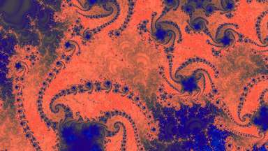
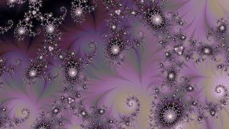
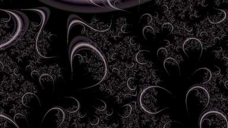
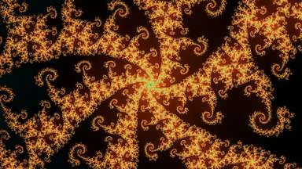
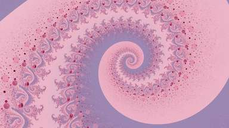
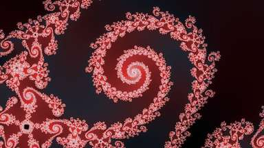

- seat
- 1
- mode
- smooth_stripe
fractal-wallpapers walkthrough --stamp 20261005T144742Z
Record 20261005T144742Z (FORCED FILL): 12 seat(s), each followed from gallery.jsonl back to the walk row that found its place. Every row is shown whole, as copied into files/, with the field it was joined on marked.
0 chain(s) could not be followed to the end.
The slices hold only the rows shown, plus one walk row of every other kind.
| file | rows in the file | rows shown |
|---|---|---|
| gallery.jsonl | 12 | 12 |
| rows.jsonl | 437 | 18 |
| scores.jsonl | 437 | 18 |
| flatness.jsonl | 437 | 18 |
| pool_scores.jsonl | 26 | 12 |
| supply_scores.jsonl | 4022 | 18 |
| locations.jsonl | 4022 | 18 |
| walk.jsonl | 8010 | 95 |
{"schema": 1, "stamp": "20261005T144742Z", "taken_at": "2026-10-05T14:47:43Z", "source_commit": "6ef873b1be8de00ca0d4d02cfa8c133bdc76d232", "solve": {"name": "tentative_n12_20261005T144742Z", "record": "artifacts/curation/solve/tentative_n12_20261005T144742Z/solve.json", "taken_at": "2026-10-05T14:47:42Z", "seconds": 1.41, "config": {"n": 12, "force_fill": true, "fold": "pool", "fold_default": "pool", "fold_is": "what the neutral pre-selection did with a place it folded into another. `pool` relabels — the rows stay and the seat constraint reads one seat per CLUSTER — and `delete` destroys them, which is what shipped until 2026-09-09. `null` is a pass with no pre-selection. A record whose config is silent either predates 2026-09-09 and folded `delete`, or carries the answer on `preselection.fold`, which the walk writes itself. See distinct.POOL", "fine_bar": null, "fine_bar_default": 0.030242, "theme_bar": null, "theme_bar_is": "the themed path takes the lower of the shipped fine bar and the p_fine of its cell's `multiple * n`-th best candidate, floored at `floor` — see solve.themed_fine_bar. `null` is a pass that was not themed or ran unbarred. A record that does not name the field at all was taken before 2026-09-11, when a themed pass inherited the general bar and drew from 3.7% of the pool; one that spells it `themed_bar` was taken before 2026-09-12, when it was renamed to sort beside `theme` here", "forced": 0, "forced_default": 0, "forced_is": "how many rows --forced lifted to the top of the fine column BEFORE the bar, the neutral pre-selection and the cascade — solve.FORCED_LIFT, an order-preserving `1 + p_fine` so the forced set keeps its own order. STAGED and off by default: `0` is a pass that forced nothing, and a record that does not name the field at all was taken before 2026-09-09. It forces an OFFER and never a seat: every rule still applies", "fine_bar_is": "a bar on the gallery-grade head's p_fine(>=4), applied to the pool BEFORE anything else runs — the per-mode bars, the neutral pre-selection and the view are all taken over what it leaves. `null` is NO bar; the flag is `--fine-bar` and `solve.at_fine_bar` is the door. A record that does not name the field at all was taken before 2026-09-07 and ran unbarred. THE DEFAULT HAS MOVED THREE TIMES: null until 2026-09-08, 0.50 until 2026-09-09, 0.184 until 2026-09-10, 0.030242 since — and every move since the first was a MATCHED level under a new head rather than a change of strictness, so `fine_bar` is only readable beside `fine_head` below", "fine_head": "twelve_sheets_drop_high_asymmetric_auc_ge4_more_k3", "fine_head_is": "the gallery-grade run whose `p_ge4` this pass could read — the run named on every row of `gallery-grade score-pool`'s output. `null` is a machine that has never scored the pool, and a record that does not name the field was taken before 2026-09-09, under `auc_ge4_more_seed2`", "fine_weights": "db682d254cf7238d3ab6dd7353d9794cf0a39580ea036861ed3f4e82c8e90600", "fine_weights_is": "the sha256 of the FP32 checkpoint(s) behind `fine_head`'s column — for the shipped k=3 recipe a digest of the three member hashes in seed order, gallery_grade_train.weights_digest. A run NAME survives a retrain and the scores under it do not, which is what this closes. `null` is a record taken before 2026-09-14, when p_fine carried no hash at all, or on a box that has never scored the pool. NOT the fp16 release artifact: a clone scoring with the published head stamps its own rows differently and that is correct", "spiral_cap": 0.1, "spiral_cap_default": 0.1, "mode_ceilings": {"threads": 0.2}, "mode_ceilings_default": {"threads": 0.2}, "mode_ceilings_is": "at most ceil(share * seats filled) seats of the named mode — ceiling.share_of, the spiral cap's own arithmetic and the one spelling a colour target is stated in. A GUARD against a runaway and not a target: it is set above what the gallery does unaided, so the reading it gives is the `mode_ceiling` refusal column, and a zero there is the expected answer. On since 2026-09-05, so a record that does not name it ran with NO per-mode ceiling", "augment": true, "augment_default": true, "augment_depth": 2, "augment_seconds": 300.0, "augment_is": "augmenting chains — one seat ejected and two inserted in its room. THE ONLY STAGE THAT RAISES THE SEAT COUNT: a 1-swap conserves it. On since 2026-09-04, so a record that does not name the flag ran WITH it and is not comparable to one taken before that", "theme": null, "method": "a stratified view, a greedy seed, 1-swap improvement to exhaustion, augmenting chains, then the 1-swap loop again. ANYTIME at every stage: the gallery is valid from its first seat and nothing here claims optimality. The exact solve it replaced is retired", "objective": "lexicographic and strict, in this order: (1) seats filled, every one above its own mode's bar; (2) the shortfall against every demand — the mode floors and any colour target — minimized, and nothing padded; (3) the worst seated score, maximized; (4) the sum. The rank quantity is the fitted rank key and not p_ge4 alone. A filled floor outranks the worst seat by ruling: a demand this pool can meet is met, and the price comes out of the weakest seat rather than out of the roster. Nothing guards a met demand because the order itself keeps it", "order": "the mandated demands from their own subpools, scarcest first; then the general pool by the rank key; then swaps; then augmenting chains; then swaps again", "bars": {"curvature": "p_ge3", "direct_trap_lines": "p_ge3", "direct_trap_multiply": "p_ge3", "direct_trap_screen": "p_ge3", "itinerary": "p_ge3", "smooth": "p_ge3", "smooth_angle_min": "p_ge3", "smooth_curvature": "p_ge3", "smooth_mean_angle": "p_ge3", "smooth_stripe": "p_ge3", "stripe": "p_ge3", "threads": "p_ge3", "tia": "p_ge3"}, "bars_are": "the pool definition. curation.headroom.bars: P(>=4) for a mode with enough places above it, P(>=3) for one without", "ceiling": {"k": 3, "k_default": 3, "kf": 1, "kf_default": 1, "cell_share": 0.020833333333333332, "family_share": 0.08333333333333333, "allowance": "floor(k * t * n) + 1", "floor": 0, "floor_rule": "floor(kf * t * n), and NO + 1 — the ceiling's warm-up is for a walk that has to seat its first row somewhere and a floor has nothing to warm up. At the uniform cell share the pair reads: every chromatic cell gets at least kf fair shares of the gallery and at most k", "floor_is": "SOFT, and one demand per chromatic cell on the objective's shortfall tier — it never refuses a candidate and never makes a solve infeasible. A cell the pool cannot fill is a row in `shortfalls.cell_floors`. `null` is a pass that carried no colour floor: every record before 2026-09-09, and every themed pass since, a theme being one cell by construction", "group_cap": 1, "group_cap_rule": "proportional", "group_cap_from": "max(1, floor(0.025 * n))", "targets": {}, "target_rule": "t * the REALIZED seat count: at least ceil(t * seats filled) of the seats dominant in the named cell. A share of the gallery that gets filled, because this leg does not promise n of them. It is a demand and it is soft: a target the pool cannot meet is a recorded shortfall and never a padded seat"}, "sort_key": "cascade", "sort_key_named": "cascade", "mode_floor": null, "mode_floors": {"smooth": 0, "tia": 0, "stripe": 0, "curvature": 0, "smooth_mean_angle": 1, "smooth_angle_min": 1, "smooth_stripe": 1, "smooth_curvature": 0, "direct_trap_screen": 0, "direct_trap_multiply": 0, "direct_trap_lines": 0, "threads": 0, "itinerary": 1}, "mode_floor_rule": "the per-mode floor rule, curation.mode_policy.seat_floors(n): half each accepted strange mode's share of the strange seat budget, summing to half of it. THE DEFAULT — a pass that named no floor was seated under this", "mode_floor_natural": {"smooth": 0, "tia": 0, "stripe": 0, "curvature": 0, "smooth_mean_angle": 1, "smooth_angle_min": 1, "smooth_stripe": 1, "smooth_curvature": 0, "direct_trap_screen": 0, "direct_trap_multiply": 0, "direct_trap_lines": 0, "threads": 0, "itinerary": 1}, "mode_floor_artificial": false, "modes": ["smooth", "tia", "stripe", "curvature", "smooth_mean_angle", "smooth_angle_min", "smooth_stripe", "smooth_curvature", "direct_trap_screen", "direct_trap_multiply", "direct_trap_lines", "threads", "itinerary"], "mode_policy": {"weights": {"trap_circle": 0, "gaussian_int": 0, "smooth_trap_circle": 0, "direct_trap_ring": 0, "tail_itinerary": 0, "exp_smoothing": 0, "smooth": 1, "curvature": 1, "smooth_curvature": 1, "direct_trap_screen": 1, "direct_trap_multiply": 1, "direct_trap_lines": 1, "tia": 2, "stripe": 2, "threads": 2, "smooth_stripe": 2, "smooth_mean_angle": 2, "smooth_angle_min": 2, "itinerary": 2}, "accepted": ["smooth", "tia", "stripe", "curvature", "smooth_mean_angle", "smooth_angle_min", "smooth_stripe", "smooth_curvature", "direct_trap_screen", "direct_trap_multiply", "direct_trap_lines", "threads", "itinerary"], "mined": ["smooth", "tia", "stripe", "smooth_mean_angle", "smooth_angle_min", "smooth_stripe", "smooth_curvature", "direct_trap_screen", "direct_trap_multiply", "direct_trap_lines", "threads", "itinerary"], "unmined": ["curvature"], "niche": ["exp_smoothing", "gaussian_int", "trap_circle", "smooth_trap_circle", "direct_trap_ring", "tail_itinerary"], "promoted": ["tia", "stripe", "smooth_mean_angle", "smooth_angle_min", "smooth_stripe", "threads", "itinerary"], "wired": "all three. Weight 0 is out of the labeling rosters, the default mining rosters and the galleries a solve writes; 1 and 2 differ at the seat, where `seat_floors` floors a promoted mode at twice a normal one and is the default floor of both the greedy and the solver since 2026-08-31.", "unmined_is": "accepted in every respect but the draw: seated, censused, barred and floored like any other mode, and drawn by no mining leg unasked. A standing about what a mine spends and not a weight; see UNMINED."}}, "diversity": {"rule": "twin", "threshold": 0.034281, "neighbours": 1, "replaceable": "one component behind `within`/`hold`/`drop`/`record`. A gallery chosen under a different diversity rule is not comparable to this one, which is why the rule and its threshold are here"}, "diversity_is": "which rule decided two seats were different enough, as `rules.State.record` spells it. A gallery chosen under a different rule is not comparable with this one. A manifest with no `diversity` key at all was written before 2026-09-11; an explicit `null` is a pass that ran without the rule", "pins": {"of": "the pinned list (data/curation/pins.json): rows seated FIRST, exempt from every bar and from the near-duplicate gate against each other, never taken out by the swap loop or the chains. A pin is in a gallery when its row is in the pass's pool, and in the theme on a themed pass. See curation/pins.py", "listed": 10, "eligible": [], "not_in_this_gallery": {"460117ee01aee127": "not in the pool this pass solved over", "0275fee138aa3b0b": "not in the pool this pass solved over", "2fd9890d487a9782": "not in the pool this pass solved over", "5ff0ad6b8898db4b": "not in the pool this pass solved over", "7ab095c794fc64e3": "not in the pool this pass solved over", "b88eacf62062bf25": "not in the pool this pass solved over", "fbfc2ce3aa1d996b": "not in the pool this pass solved over", "04cd304c99de81fa": "not in the pool this pass solved over", "809df7f474bd2b68": "not in the pool this pass solved over", "fb7cedfe8416c8fc": "not in the pool this pass solved over"}, "seated": []}}, "pool": {"stamp": "9fd16a3a395e584f7978ef51d2ae5696833f1decfc6800e9c1a8b3c9e1fe4155", "stamp_is": "sha256 over the sorted candidate keys, as `growth.pool_stamp` takes it. Two records carrying the same stamp were chosen over the same pool — over the same POOL and not necessarily the same seatable rows, because a quality bar narrows what a pass may seat and is on `solve.config.fine_bar` instead", "candidates": 437, "locations": 138, "reachable_clusters": 132, "refused": {"niche_mode": 0, "rejected": 0, "vetoed": 0, "off_regime": 0, "no_picture": 0, "picture_absent": 0, "no_score": 0}, "ledger_rows": 437, "ledger_path": "artifacts/curation/candidate_ledger/rows.jsonl"}, "seats": {"asked": 12, "filled": 12, "shortfall": 0, "recorded": 12}, "shortfalls": {"seats": {"asked": 12, "filled": 12, "unfilled": 0}, "demands": {"of": "every demand this pass carried, mode floors and colour targets alike. The third objective tier is the sum of the `short` column", "short_total": 0, "rows": [{"demand": "mode_floor:itinerary", "axis": "mode", "of": "itinerary", "asked": 1, "held": 1, "short": 0}, {"demand": "mode_floor:smooth_angle_min", "axis": "mode", "of": "smooth_angle_min", "asked": 1, "held": 1, "short": 0}, {"demand": "mode_floor:smooth_mean_angle", "axis": "mode", "of": "smooth_mean_angle", "asked": 1, "held": 2, "short": 0}, {"demand": "mode_floor:smooth_stripe", "axis": "mode", "of": "smooth_stripe", "asked": 1, "held": 1, "short": 0}, {"demand": "cell_floor:dark_muted_azure", "axis": "cell", "of": "dark_muted_azure", "asked": 0, "held": 1, "short": 0}, {"demand": "cell_floor:dark_muted_blue", "axis": "cell", "of": "dark_muted_blue", "asked": 0, "held": 1, "short": 0}, {"demand": "cell_floor:dark_muted_cyan", "axis": "cell", "of": "dark_muted_cyan", "asked": 0, "held": 1, "short": 0}, {"demand": "cell_floor:dark_muted_green", "axis": "cell", "of": "dark_muted_green", "asked": 0, "held": 0, "short": 0}, {"demand": "cell_floor:dark_muted_lime", "axis": "cell", "of": "dark_muted_lime", "asked": 0, "held": 0, "short": 0}, {"demand": "cell_floor:dark_muted_magenta", "axis": "cell", "of": "dark_muted_magenta", "asked": 0, "held": 1, "short": 0}, {"demand": "cell_floor:dark_muted_orange", "axis": "cell", "of": "dark_muted_orange", "asked": 0, "held": 0, "short": 0}, {"demand": "cell_floor:dark_muted_purple", "axis": "cell", "of": "dark_muted_purple", "asked": 0, "held": 1, "short": 0}, {"demand": "cell_floor:dark_muted_red", "axis": "cell", "of": "dark_muted_red", "asked": 0, "held": 1, "short": 0}, {"demand": "cell_floor:dark_muted_rose", "axis": "cell", "of": "dark_muted_rose", "asked": 0, "held": 1, "short": 0}, {"demand": "cell_floor:dark_muted_teal", "axis": "cell", "of": "dark_muted_teal", "asked": 0, "held": 1, "short": 0}, {"demand": "cell_floor:dark_muted_yellow", "axis": "cell", "of": "dark_muted_yellow", "asked": 0, "held": 0, "short": 0}, {"demand": "cell_floor:dark_vivid_azure", "axis": "cell", "of": "dark_vivid_azure", "asked": 0, "held": 0, "short": 0}, {"demand": "cell_floor:dark_vivid_blue", "axis": "cell", "of": "dark_vivid_blue", "asked": 0, "held": 1, "short": 0}, {"demand": "cell_floor:dark_vivid_cyan", "axis": "cell", "of": "dark_vivid_cyan", "asked": 0, "held": 0, "short": 0}, {"demand": "cell_floor:dark_vivid_green", "axis": "cell", "of": "dark_vivid_green", "asked": 0, "held": 0, "short": 0}, {"demand": "cell_floor:dark_vivid_lime", "axis": "cell", "of": "dark_vivid_lime", "asked": 0, "held": 0, "short": 0}, {"demand": "cell_floor:dark_vivid_magenta", "axis": "cell", "of": "dark_vivid_magenta", "asked": 0, "held": 0, "short": 0}, {"demand": "cell_floor:dark_vivid_orange", "axis": "cell", "of": "dark_vivid_orange", "asked": 0, "held": 1, "short": 0}, {"demand": "cell_floor:dark_vivid_purple", "axis": "cell", "of": "dark_vivid_purple", "asked": 0, "held": 1, "short": 0}, {"demand": "cell_floor:dark_vivid_red", "axis": "cell", "of": "dark_vivid_red", "asked": 0, "held": 1, "short": 0}, {"demand": "cell_floor:dark_vivid_rose", "axis": "cell", "of": "dark_vivid_rose", "asked": 0, "held": 1, "short": 0}, {"demand": "cell_floor:dark_vivid_teal", "axis": "cell", "of": "dark_vivid_teal", "asked": 0, "held": 0, "short": 0}, {"demand": "cell_floor:dark_vivid_yellow", "axis": "cell", "of": "dark_vivid_yellow", "asked": 0, "held": 0, "short": 0}, {"demand": "cell_floor:light_muted_azure", "axis": "cell", "of": "light_muted_azure", "asked": 0, "held": 0, "short": 0}, {"demand": "cell_floor:light_muted_blue", "axis": "cell", "of": "light_muted_blue", "asked": 0, "held": 0, "short": 0}, {"demand": "cell_floor:light_muted_cyan", "axis": "cell", "of": "light_muted_cyan", "asked": 0, "held": 0, "short": 0}, {"demand": "cell_floor:light_muted_green", "axis": "cell", "of": "light_muted_green", "asked": 0, "held": 1, "short": 0}, {"demand": "cell_floor:light_muted_lime", "axis": "cell", "of": "light_muted_lime", "asked": 0, "held": 0, "short": 0}, {"demand": "cell_floor:light_muted_magenta", "axis": "cell", "of": "light_muted_magenta", "asked": 0, "held": 1, "short": 0}, {"demand": "cell_floor:light_muted_orange", "axis": "cell", "of": "light_muted_orange", "asked": 0, "held": 0, "short": 0}, {"demand": "cell_floor:light_muted_purple", "axis": "cell", "of": "light_muted_purple", "asked": 0, "held": 1, "short": 0}, {"demand": "cell_floor:light_muted_red", "axis": "cell", "of": "light_muted_red", "asked": 0, "held": 0, "short": 0}, {"demand": "cell_floor:light_muted_rose", "axis": "cell", "of": "light_muted_rose", "asked": 0, "held": 0, "short": 0}, {"demand": "cell_floor:light_muted_teal", "axis": "cell", "of": "light_muted_teal", "asked": 0, "held": 1, "short": 0}, {"demand": "cell_floor:light_muted_yellow", "axis": "cell", "of": "light_muted_yellow", "asked": 0, "held": 1, "short": 0}, {"demand": "cell_floor:light_vivid_azure", "axis": "cell", "of": "light_vivid_azure", "asked": 0, "held": 1, "short": 0}, {"demand": "cell_floor:light_vivid_blue", "axis": "cell", "of": "light_vivid_blue", "asked": 0, "held": 0, "short": 0}, {"demand": "cell_floor:light_vivid_cyan", "axis": "cell", "of": "light_vivid_cyan", "asked": 0, "held": 0, "short": 0}, {"demand": "cell_floor:light_vivid_green", "axis": "cell", "of": "light_vivid_green", "asked": 0, "held": 0, "short": 0}, {"demand": "cell_floor:light_vivid_lime", "axis": "cell", "of": "light_vivid_lime", "asked": 0, "held": 0, "short": 0}, {"demand": "cell_floor:light_vivid_magenta", "axis": "cell", "of": "light_vivid_magenta", "asked": 0, "held": 1, "short": 0}, {"demand": "cell_floor:light_vivid_orange", "axis": "cell", "of": "light_vivid_orange", "asked": 0, "held": 0, "short": 0}, {"demand": "cell_floor:light_vivid_purple", "axis": "cell", "of": "light_vivid_purple", "asked": 0, "held": 1, "short": 0}, {"demand": "cell_floor:light_vivid_red", "axis": "cell", "of": "light_vivid_red", "asked": 0, "held": 1, "short": 0}, {"demand": "cell_floor:light_vivid_rose", "axis": "cell", "of": "light_vivid_rose", "asked": 0, "held": 1, "short": 0}, {"demand": "cell_floor:light_vivid_teal", "axis": "cell", "of": "light_vivid_teal", "asked": 0, "held": 0, "short": 0}, {"demand": "cell_floor:light_vivid_yellow", "axis": "cell", "of": "light_vivid_yellow", "asked": 0, "held": 0, "short": 0}]}, "modes": {"floor": null, "floors": {"smooth": 0, "tia": 0, "stripe": 0, "curvature": 0, "smooth_mean_angle": 1, "smooth_angle_min": 1, "smooth_stripe": 1, "smooth_curvature": 0, "direct_trap_screen": 0, "direct_trap_multiply": 0, "direct_trap_lines": 0, "threads": 0, "itinerary": 1}, "floors_are": "per mode", "asked": 4, "represented": 8, "of": 13, "per_mode": {"smooth": {"floor": 0, "seated": 1, "short": 0, "clearing": 56, "refused_by": {"cell_allowance": 28, "location": 10, "the_leg_had_no_seat_left": 8, "spiral": 5, "group_cap": 4}}, "tia": {"floor": 0, "seated": 1, "short": 0, "clearing": 39, "refused_by": {"cell_allowance": 23, "location": 7, "the_leg_had_no_seat_left": 4, "spiral": 2, "group_cap": 2}}, "stripe": {"floor": 0, "seated": 0, "short": 0, "clearing": 50, "refused_by": {"cell_allowance": 34, "location": 5, "the_leg_had_no_seat_left": 5, "spiral": 4, "group_cap": 2}}, "curvature": {"floor": 0, "seated": 0, "short": 0, "clearing": 0, "refused_by": {}}, "smooth_mean_angle": {"floor": 1, "seated": 2, "short": 0, "clearing": 40, "refused_by": {"cell_allowance": 29, "the_leg_had_no_seat_left": 4, "spiral": 3, "location": 1, "group_cap": 1}}, "smooth_angle_min": {"floor": 1, "seated": 1, "short": 0, "clearing": 35, "refused_by": {"cell_allowance": 17, "location": 7, "the_leg_had_no_seat_left": 6, "spiral": 3, "group_cap": 1}}, "smooth_stripe": {"floor": 1, "seated": 1, "short": 0, "clearing": 35, "refused_by": {"cell_allowance": 22, "the_leg_had_no_seat_left": 4, "group_cap": 3, "spiral": 3, "location": 2}}, "smooth_curvature": {"floor": 0, "seated": 2, "short": 0, "clearing": 37, "refused_by": {"cell_allowance": 27, "the_leg_had_no_seat_left": 6, "location": 2}}, "direct_trap_screen": {"floor": 0, "seated": 0, "short": 0, "clearing": 30, "refused_by": {"cell_allowance": 20, "the_leg_had_no_seat_left": 5, "spiral": 3, "group_cap": 1, "location": 1}}, "direct_trap_multiply": {"floor": 0, "seated": 0, "short": 0, "clearing": 26, "refused_by": {"cell_allowance": 20, "spiral": 2, "the_leg_had_no_seat_left": 2, "group_cap": 1, "location": 1}}, "direct_trap_lines": {"floor": 0, "seated": 0, "short": 0, "clearing": 40, "refused_by": {"cell_allowance": 27, "the_leg_had_no_seat_left": 5, "location": 3, "spiral": 3, "group_cap": 2}}, "threads": {"floor": 0, "seated": 3, "short": 0, "clearing": 36, "refused_by": {"cell_allowance": 20, "location": 7, "mode_ceiling": 4, "spiral": 2}}, "itinerary": {"floor": 1, "seated": 1, "short": 0, "clearing": 13, "refused_by": {"the_leg_had_no_seat_left": 5, "cell_allowance": 5, "location": 2}}}, "starved": [], "starved_count": 0, "starved_are": "a floor above zero that went unfilled. Read `per_mode` for which: a mode with `clearing` above `seated` lost its seats to a rule named in `refused_by`, and one with `clearing` at `seated` had nothing left to seat", "floor_never_needed": ["smooth", "tia", "stripe", "curvature", "smooth_curvature", "direct_trap_screen", "direct_trap_multiply", "direct_trap_lines", "threads"], "floor_never_needed_count": 9, "floor_never_needed_are": "asked for nothing, so they cannot have gone short", "below_the_floor": [], "below_the_floor_count": 0, "counts": {"threads": 3, "smooth_mean_angle": 2, "smooth_curvature": 2, "itinerary": 1, "smooth_angle_min": 1, "smooth_stripe": 1, "tia": 1, "smooth": 1}}, "cells": {"held": 23, "over_allowance": {}, "counts": {"light_muted_purple": 1, "dark_vivid_purple": 1, "light_vivid_purple": 1, "light_muted_green": 1, "light_muted_teal": 1, "dark_vivid_orange": 1, "light_vivid_magenta": 1, "light_muted_yellow": 1, "dark_muted_teal": 1, "light_vivid_red": 1, "dark_vivid_blue": 1, "light_vivid_azure": 1, "dark_vivid_red": 1, "dark_muted_rose": 1, "dark_muted_red": 1, "dark_muted_blue": 1, "dark_vivid_rose": 1, "light_vivid_rose": 1, "dark_muted_cyan": 1, "dark_muted_azure": 1, "dark_muted_magenta": 1, "light_muted_magenta": 1, "dark_muted_purple": 1}}, "cell_floors": {"of": "one soft demand per chromatic cell, floor(kf * t * seats filled). It rides the same shortfall tier the mode floors ride and can neither refuse a candidate nor make the solve infeasible", "floor": 0, "floor_of": "the realized seat count and not n, for curation.solve.target_rule's reason: this leg does not promise n seats, so a demand denominated in seats nobody is promising to fill reports nothing when the answer comes back short", "cells": 48, "at_or_over_the_floor": 48, "below_the_floor": [], "below_the_floor_count": 0, "short_total": 0, "deadlocked_total": 0, "deadlocked_is": "a row dominant in a starving cell that the ALLOWANCE refused for a DIFFERENT cell it is also dominant in — a seat charges about 2.1 cells, so the companion being full is a way to starve a cell that neither its own allowance nor its own supply can show. `deadlocked_on` names the cells that were full", "per_cell": {"dark_muted_azure": {"floor": 0, "allowance": 1, "seated": 1, "short": 0, "clearing": 22, "refused_by": {"cell_allowance": 18, "location": 2, "group_cap": 1}, "deadlocked": 8, "deadlocked_on": {"dark_muted_blue": 4, "dark_muted_cyan": 3, "light_muted_teal": 1}}, "dark_muted_blue": {"floor": 0, "allowance": 1, "seated": 1, "short": 0, "clearing": 30, "refused_by": {"cell_allowance": 22, "location": 5, "group_cap": 2}, "deadlocked": 11, "deadlocked_on": {"dark_muted_azure": 6, "dark_vivid_blue": 2, "dark_muted_purple": 2, "light_muted_purple": 1}}, "dark_muted_cyan": {"floor": 0, "allowance": 1, "seated": 1, "short": 0, "clearing": 26, "refused_by": {"cell_allowance": 18, "location": 4, "group_cap": 3}, "deadlocked": 4, "deadlocked_on": {"dark_muted_azure": 2, "dark_muted_teal": 1, "light_muted_teal": 1}}, "dark_muted_green": {"floor": 0, "allowance": 1, "seated": 0, "short": 0, "clearing": 16, "refused_by": {"cell_allowance": 8, "location": 4, "the_leg_had_no_seat_left": 3, "spiral": 1}, "deadlocked": 8, "deadlocked_on": {"dark_muted_teal": 5, "light_muted_green": 2, "light_muted_yellow": 1}}, "dark_muted_lime": {"floor": 0, "allowance": 1, "seated": 0, "short": 0, "clearing": 19, "refused_by": {"the_leg_had_no_seat_left": 9, "cell_allowance": 4, "spiral": 4, "location": 1, "mode_ceiling": 1}, "deadlocked": 4, "deadlocked_on": {"light_muted_yellow": 2, "dark_muted_rose": 1, "dark_muted_blue": 1}}, "dark_muted_magenta": {"floor": 0, "allowance": 1, "seated": 1, "short": 0, "clearing": 29, "refused_by": {"cell_allowance": 23, "group_cap": 3, "location": 2}, "deadlocked": 14, "deadlocked_on": {"dark_muted_rose": 9, "dark_muted_purple": 2, "light_muted_magenta": 2, "light_muted_purple": 1}}, "dark_muted_orange": {"floor": 0, "allowance": 1, "seated": 0, "short": 0, "clearing": 22, "refused_by": {"cell_allowance": 12, "spiral": 4, "location": 3, "the_leg_had_no_seat_left": 3}, "deadlocked": 12, "deadlocked_on": {"dark_muted_red": 6, "dark_vivid_orange": 4, "light_muted_yellow": 1, "dark_muted_azure": 1}}, "dark_muted_purple": {"floor": 0, "allowance": 1, "seated": 1, "short": 0, "clearing": 31, "refused_by": {"cell_allowance": 25, "location": 3, "group_cap": 2}, "deadlocked": 14, "deadlocked_on": {"dark_muted_magenta": 4, "dark_muted_blue": 4, "light_muted_purple": 2, "dark_vivid_purple": 1, "dark_muted_rose": 1}}, "dark_muted_red": {"floor": 0, "allowance": 1, "seated": 1, "short": 0, "clearing": 28, "refused_by": {"cell_allowance": 25, "location": 2}, "deadlocked": 8, "deadlocked_on": {"dark_muted_rose": 3, "dark_vivid_orange": 2, "dark_vivid_red": 1, "light_muted_yellow": 1, "dark_muted_azure": 1}}, "dark_muted_rose": {"floor": 0, "allowance": 1, "seated": 1, "short": 0, "clearing": 28, "refused_by": {"cell_allowance": 24, "group_cap": 2, "location": 1}, "deadlocked": 8, "deadlocked_on": {"dark_muted_red": 4, "dark_muted_magenta": 2, "dark_vivid_rose": 1, "light_muted_magenta": 1}}, "dark_muted_teal": {"floor": 0, "allowance": 1, "seated": 1, "short": 0, "clearing": 23, "refused_by": {"cell_allowance": 16, "location": 4, "group_cap": 2}, "deadlocked": 5, "deadlocked_on": {"light_muted_teal": 2, "dark_muted_cyan": 2, "dark_muted_azure": 1}}, "dark_muted_yellow": {"floor": 0, "allowance": 1, "seated": 0, "short": 0, "clearing": 26, "refused_by": {"the_leg_had_no_seat_left": 12, "cell_allowance": 9, "spiral": 3, "location": 2}, "deadlocked": 9, "deadlocked_on": {"light_muted_yellow": 7, "dark_muted_magenta": 1, "dark_vivid_orange": 1}}, "dark_vivid_azure": {"floor": 0, "allowance": 1, "seated": 0, "short": 0, "clearing": 14, "refused_by": {"cell_allowance": 9, "the_leg_had_no_seat_left": 4, "spiral": 1}, "deadlocked": 9, "deadlocked_on": {"light_vivid_azure": 2, "dark_muted_blue": 2, "dark_muted_azure": 1, "dark_vivid_purple": 1, "dark_vivid_rose": 1}}, "dark_vivid_blue": {"floor": 0, "allowance": 1, "seated": 1, "short": 0, "clearing": 24, "refused_by": {"cell_allowance": 17, "group_cap": 4, "location": 2}, "deadlocked": 4, "deadlocked_on": {"light_vivid_azure": 2, "dark_vivid_red": 1, "dark_muted_blue": 1}}, "dark_vivid_cyan": {"floor": 0, "allowance": 1, "seated": 0, "short": 0, "clearing": 14, "refused_by": {"cell_allowance": 10, "group_cap": 2, "location": 1, "the_leg_had_no_seat_left": 1}, "deadlocked": 10, "deadlocked_on": {"dark_muted_cyan": 10}}, "dark_vivid_green": {"floor": 0, "allowance": 1, "seated": 0, "short": 0, "clearing": 14, "refused_by": {"the_leg_had_no_seat_left": 6, "spiral": 5, "location": 2, "cell_allowance": 1}, "deadlocked": 1, "deadlocked_on": {"dark_muted_teal": 1}}, "dark_vivid_lime": {"floor": 0, "allowance": 1, "seated": 0, "short": 0, "clearing": 11, "refused_by": {"cell_allowance": 3, "location": 2, "mode_ceiling": 2, "spiral": 2, "the_leg_had_no_seat_left": 2}, "deadlocked": 3, "deadlocked_on": {"light_muted_yellow": 3}}, "dark_vivid_magenta": {"floor": 0, "allowance": 1, "seated": 0, "short": 0, "clearing": 14, "refused_by": {"cell_allowance": 8, "location": 3, "the_leg_had_no_seat_left": 3}, "deadlocked": 8, "deadlocked_on": {"dark_muted_purple": 1, "light_vivid_magenta": 1, "dark_vivid_orange": 1, "light_muted_magenta": 1, "dark_vivid_rose": 1}}, "dark_vivid_orange": {"floor": 0, "allowance": 1, "seated": 1, "short": 0, "clearing": 25, "refused_by": {"cell_allowance": 19, "location": 4, "group_cap": 1}, "deadlocked": 4, "deadlocked_on": {"dark_muted_red": 2, "dark_vivid_red": 1, "light_muted_yellow": 1}}, "dark_vivid_purple": {"floor": 0, "allowance": 1, "seated": 1, "short": 0, "clearing": 17, "refused_by": {"cell_allowance": 14, "location": 1, "group_cap": 1}, "deadlocked": 8, "deadlocked_on": {"dark_vivid_blue": 2, "dark_muted_purple": 2, "light_muted_magenta": 1, "light_vivid_magenta": 1, "light_vivid_purple": 1}}, "dark_vivid_red": {"floor": 0, "allowance": 1, "seated": 1, "short": 0, "clearing": 14, "refused_by": {"cell_allowance": 13}, "deadlocked": 5, "deadlocked_on": {"dark_muted_red": 3, "light_vivid_red": 2}}, "dark_vivid_rose": {"floor": 0, "allowance": 1, "seated": 1, "short": 0, "clearing": 18, "refused_by": {"cell_allowance": 9, "location": 6, "group_cap": 2}, "deadlocked": 3, "deadlocked_on": {"light_vivid_rose": 2, "dark_muted_red": 1}}, "dark_vivid_teal": {"floor": 0, "allowance": 1, "seated": 0, "short": 0, "clearing": 13, "refused_by": {"cell_allowance": 9, "group_cap": 2, "location": 1, "the_leg_had_no_seat_left": 1}, "deadlocked": 9, "deadlocked_on": {"dark_muted_teal": 4, "light_muted_teal": 3, "dark_muted_cyan": 1, "light_muted_green": 1}}, "dark_vivid_yellow": {"floor": 0, "allowance": 1, "seated": 0, "short": 0, "clearing": 8, "refused_by": {"the_leg_had_no_seat_left": 4, "cell_allowance": 3, "spiral": 1}, "deadlocked": 3, "deadlocked_on": {"light_muted_yellow": 2, "dark_vivid_orange": 1}}, "light_muted_azure": {"floor": 0, "allowance": 1, "seated": 0, "short": 0, "clearing": 14, "refused_by": {"cell_allowance": 7, "spiral": 3, "the_leg_had_no_seat_left": 3, "location": 1}, "deadlocked": 7, "deadlocked_on": {"dark_muted_azure": 3, "light_vivid_azure": 2, "dark_muted_blue": 1, "light_muted_teal": 1}}, "light_muted_blue": {"floor": 0, "allowance": 1, "seated": 0, "short": 0, "clearing": 14, "refused_by": {"cell_allowance": 9, "spiral": 3, "location": 1, "group_cap": 1}, "deadlocked": 9, "deadlocked_on": {"dark_muted_azure": 3, "light_muted_yellow": 2, "dark_vivid_purple": 1, "light_muted_purple": 1, "dark_muted_blue": 1}}, "light_muted_cyan": {"floor": 0, "allowance": 1, "seated": 0, "short": 0, "clearing": 27, "refused_by": {"cell_allowance": 18, "the_leg_had_no_seat_left": 5, "location": 4}, "deadlocked": 18, "deadlocked_on": {"light_muted_teal": 13, "dark_muted_cyan": 3, "light_vivid_azure": 2}}, "light_muted_green": {"floor": 0, "allowance": 1, "seated": 1, "short": 0, "clearing": 22, "refused_by": {"cell_allowance": 16, "location": 5}, "deadlocked": 2, "deadlocked_on": {"light_muted_teal": 2}}, "light_muted_lime": {"floor": 0, "allowance": 1, "seated": 0, "short": 0, "clearing": 37, "refused_by": {"cell_allowance": 22, "the_leg_had_no_seat_left": 7, "location": 3, "mode_ceiling": 2, "spiral": 2, "group_cap": 1}, "deadlocked": 22, "deadlocked_on": {"light_muted_green": 10, "light_muted_yellow": 9, "dark_muted_purple": 2, "dark_muted_blue": 1}}, "light_muted_magenta": {"floor": 0, "allowance": 1, "seated": 1, "short": 0, "clearing": 30, "refused_by": {"cell_allowance": 24, "location": 4, "group_cap": 1}, "deadlocked": 8, "deadlocked_on": {"light_muted_purple": 4, "dark_vivid_blue": 1, "light_vivid_magenta": 1, "dark_muted_rose": 1, "dark_muted_magenta": 1}}, "light_muted_orange": {"floor": 0, "allowance": 1, "seated": 0, "short": 0, "clearing": 27, "refused_by": {"cell_allowance": 20, "the_leg_had_no_seat_left": 3, "location": 2, "group_cap": 1, "spiral": 1}, "deadlocked": 20, "deadlocked_on": {"light_muted_yellow": 12, "dark_muted_red": 3, "dark_vivid_orange": 3, "light_vivid_red": 1, "light_muted_teal": 1}}, "light_muted_purple": {"floor": 0, "allowance": 1, "seated": 1, "short": 0, "clearing": 22, "refused_by": {"cell_allowance": 20, "location": 1}, "deadlocked": 11, "deadlocked_on": {"light_muted_magenta": 5, "dark_muted_purple": 3, "dark_vivid_purple": 2, "light_vivid_purple": 1}}, "light_muted_red": {"floor": 0, "allowance": 1, "seated": 0, "short": 0, "clearing": 21, "refused_by": {"cell_allowance": 13, "spiral": 4, "location": 2, "the_leg_had_no_seat_left": 2}, "deadlocked": 13, "deadlocked_on": {"dark_muted_red": 6, "light_vivid_red": 4, "light_muted_magenta": 2, "light_muted_yellow": 1}}, "light_muted_rose": {"floor": 0, "allowance": 1, "seated": 0, "short": 0, "clearing": 25, "refused_by": {"cell_allowance": 15, "location": 4, "spiral": 3, "the_leg_had_no_seat_left": 2, "group_cap": 1}, "deadlocked": 15, "deadlocked_on": {"light_muted_magenta": 10, "dark_muted_rose": 3, "dark_vivid_rose": 1, "dark_muted_red": 1}}, "light_muted_teal": {"floor": 0, "allowance": 1, "seated": 1, "short": 0, "clearing": 30, "refused_by": {"cell_allowance": 26, "location": 3}, "deadlocked": 5, "deadlocked_on": {"light_muted_green": 4, "dark_muted_teal": 1}}, "light_muted_yellow": {"floor": 0, "allowance": 1, "seated": 1, "short": 0, "clearing": 44, "refused_by": {"cell_allowance": 39, "location": 3, "group_cap": 1}, "deadlocked": 2, "deadlocked_on": {"dark_vivid_orange": 1, "light_muted_green": 1}}, "light_vivid_azure": {"floor": 0, "allowance": 1, "seated": 1, "short": 0, "clearing": 13, "refused_by": {"cell_allowance": 11, "group_cap": 1}, "deadlocked": 1, "deadlocked_on": {"dark_vivid_blue": 1}}, "light_vivid_blue": {"floor": 0, "allowance": 1, "seated": 0, "short": 0, "clearing": 12, "refused_by": {"cell_allowance": 10, "spiral": 2}, "deadlocked": 10, "deadlocked_on": {"dark_vivid_blue": 3, "light_vivid_azure": 2, "light_vivid_purple": 2, "dark_muted_purple": 1, "dark_vivid_purple": 1}}, "light_vivid_cyan": {"floor": 0, "allowance": 1, "seated": 0, "short": 0, "clearing": 9, "refused_by": {"cell_allowance": 5, "the_leg_had_no_seat_left": 2, "group_cap": 1, "spiral": 1}, "deadlocked": 5, "deadlocked_on": {"dark_muted_cyan": 3, "light_muted_teal": 1, "light_vivid_azure": 1}}, "light_vivid_green": {"floor": 0, "allowance": 1, "seated": 0, "short": 0, "clearing": 15, "refused_by": {"the_leg_had_no_seat_left": 7, "spiral": 3, "cell_allowance": 3, "mode_ceiling": 1, "location": 1}, "deadlocked": 3, "deadlocked_on": {"dark_muted_blue": 1, "light_muted_green": 1, "dark_vivid_blue": 1}}, "light_vivid_lime": {"floor": 0, "allowance": 1, "seated": 0, "short": 0, "clearing": 10, "refused_by": {"the_leg_had_no_seat_left": 3, "mode_ceiling": 3, "location": 2, "spiral": 2}, "deadlocked": 0, "deadlocked_on": {}}, "light_vivid_magenta": {"floor": 0, "allowance": 1, "seated": 1, "short": 0, "clearing": 12, "refused_by": {"cell_allowance": 7, "location": 2, "group_cap": 2}, "deadlocked": 4, "deadlocked_on": {"dark_vivid_blue": 2, "dark_vivid_purple": 1, "light_vivid_rose": 1}}, "light_vivid_orange": {"floor": 0, "allowance": 1, "seated": 0, "short": 0, "clearing": 10, "refused_by": {"cell_allowance": 6, "the_leg_had_no_seat_left": 2, "location": 1, "spiral": 1}, "deadlocked": 6, "deadlocked_on": {"dark_vivid_red": 3, "light_vivid_red": 2, "dark_vivid_orange": 1}}, "light_vivid_purple": {"floor": 0, "allowance": 1, "seated": 1, "short": 0, "clearing": 12, "refused_by": {"cell_allowance": 8, "location": 3}, "deadlocked": 5, "deadlocked_on": {"light_vivid_magenta": 2, "dark_muted_blue": 1, "dark_vivid_purple": 1, "light_muted_purple": 1}}, "light_vivid_red": {"floor": 0, "allowance": 1, "seated": 1, "short": 0, "clearing": 14, "refused_by": {"cell_allowance": 12, "location": 1}, "deadlocked": 4, "deadlocked_on": {"dark_vivid_red": 3, "light_vivid_rose": 1}}, "light_vivid_rose": {"floor": 0, "allowance": 1, "seated": 1, "short": 0, "clearing": 11, "refused_by": {"cell_allowance": 6, "location": 3, "group_cap": 1}, "deadlocked": 2, "deadlocked_on": {"light_muted_magenta": 1, "dark_vivid_rose": 1}}, "light_vivid_teal": {"floor": 0, "allowance": 1, "seated": 0, "short": 0, "clearing": 10, "refused_by": {"cell_allowance": 6, "the_leg_had_no_seat_left": 4}, "deadlocked": 6, "deadlocked_on": {"light_muted_teal": 3, "dark_vivid_blue": 1, "light_muted_green": 1, "light_vivid_azure": 1}}, "light_vivid_yellow": {"floor": 0, "allowance": 1, "seated": 0, "short": 0, "clearing": 16, "refused_by": {"cell_allowance": 6, "the_leg_had_no_seat_left": 4, "spiral": 3, "location": 2, "group_cap": 1}, "deadlocked": 6, "deadlocked_on": {"light_vivid_red": 2, "light_muted_yellow": 2, "dark_vivid_orange": 2}}}}, "families": {"held": 10, "over_allowance": {}, "counts": {"magenta": 2, "red": 2, "blue": 2, "rose": 2, "purple": 1, "green": 1, "teal": 1, "orange": 1, "yellow": 1, "cyan": 1}}, "groups": {"held": 12, "cap": 1, "realized_max": 1, "at_the_cap": 12, "counts_top20": {"m21": 1, "m35": 1, "map:Nebula Veil": 1, "map:Olive Ember Ramp": 1, "map:Rose Against Cobalt": 1, "map:cet_diverging_linear_bjr_30_55_c53": 1, "map:commons_Julia-Menge_-0.8_0.156i": 1, "map:dinlappi": 1, "map:house-of-ivory-25": 1, "map:labani": 1, "map:wallhaven_wallhaven-kwg7v6": 1, "map:wallhaven_wallhaven-ym8rqk": 1}, "over_cap": {}}, "refusals_while_choosing": {"location": 16, "cell_allowance": 14, "group_cap": 2, "spiral": 2, "mode_ceiling": 1, "family_allowance": 0, "picture_unreadable": 0, "twin": 0}, "read": "a shortfall here is `this leg did not find it`, never `the pool does not hold it`. The only infeasibility claims are the census's necessary conditions"}, "counts": {"mode": {"threads": 3, "smooth_curvature": 2, "smooth_mean_angle": 2, "itinerary": 1, "smooth": 1, "smooth_angle_min": 1, "smooth_stripe": 1, "tia": 1}, "hue_family": {"blue": 2, "magenta": 2, "red": 2, "cyan": 1, "green": 1, "orange": 1, "purple": 1, "rose": 1, "yellow": 1}, "cell": {"dark_muted_blue": 1, "dark_muted_cyan": 1, "dark_muted_magenta": 1, "dark_vivid_blue": 1, "dark_vivid_orange": 1, "dark_vivid_red": 1, "dark_vivid_rose": 1, "light_muted_green": 1, "light_muted_purple": 1, "light_muted_yellow": 1, "light_vivid_magenta": 1, "light_vivid_red": 1}, "partition": {"julia:multibrot3": 4, "julia:mandelbrot": 2, "julia:multibrot5": 1, "multibrot3": 1, "multibrot4": 1, "multibrot5": 1, "multibrot6": 1, "phoenix:classic": 1}, "centered": {"False": 12}, "spiral": {"False": 10, "True": 2}}}chain followed to the walk's root
key = afa964e54f92d35f{"schema": 1, "seat": 0, "key": "afa964e54f92d35f", "alias": "afa964e5", "mode": "smooth_stripe", "mode_params": {}, "partition": "multibrot3", "cell": "dark_vivid_orange", "hue_family": "orange", "cells": ["dark_vivid_orange"], "families": ["orange"], "seated_for": "mode_floor:smooth_stripe", "pinned": false, "floor": "no", "floor_cells": [], "centered": false, "spiral": false, "p_spiral": 0.049852, "rank": 1.213227, "p_ge4": 0.99513, "location": "[\"multibrot3\", 3, [], \"0.3074843253868219\", \"0.69168123157276\", \"0.0000010578379810667692\"]", "picture": "artifacts/curation/mine/m1/pictures/afa964e54f92d35f.jpg"}key = afa964e54f92d35f{"schema": 1, "key": "afa964e54f92d35f", "partition": "multibrot3", "location": {"key": "[\"multibrot3\", 3, [], \"0.3074843253868219\", \"0.69168123157276\", \"0.0000010578379810667692\"]", "agrees": true}, "recipe": {"schema": 1, "family": {"degree": 3, "kind": "multibrot"}, "viewport": {"center_re": "0.3074843253868219", "center_im": "0.69168123157276", "width": "0.0000010578379810667692"}, "maxiter": 29722, "regime": "640x360ss2", "mode": "smooth_stripe", "mode_params": {}, "curve": "linear", "colormap": "Olive Ember Ramp", "palette_group": "map:Olive Ember Ramp", "palette": {"gamma": 1.0, "cycles": 1.0, "phase": 0.0, "reverse": false, "mirror": false, "transfer": {"kind": "value"}, "rolloff": {"kind": "none"}}, "autolevel": {"operator": "band_autolevel/v1", "switch": "on", "band_sha256": "49d4f43b200904c5967df788308834be163698081d85802df978554261aa63a1"}}, "at_candidate_regime": true, "texture_flat": false, "colour": {"cells": ["dark_vivid_orange"], "families": ["orange"]}, "engine": "5d97e76bb16be71d", "provenance": {"run": "m1", "candidate": "00053", "also_rendered": [], "also_recorded": []}, "picture": "artifacts/curation/mine/m1/pictures/afa964e54f92d35f.jpg", "rejected": null, "hunt": {"seconds": 3.768, "k": 1, "drawn_for": "light_muted_yellow"}}recipe_key = afa964e54f92d35f{"schema": 1, "key": "afa964e54f92d35f|481fe0582328f0de8d64d8e0ddc9a0bde1f044419e2074af6a559239b5792d46|640x360ss2", "recipe_key": "afa964e54f92d35f", "judge_artifact": "481fe0582328f0de8d64d8e0ddc9a0bde1f044419e2074af6a559239b5792d46", "regime": "640x360ss2", "head": "strange_render", "p_ge2": 0.9999988605472544, "p_ge3": 0.9997935234656153, "p_ge4": 0.9951297004813645, "rank_score": 2.994922084494234, "block": "scores", "read_by": {"run": "m1", "candidate": "00053"}}recipe_key = afa964e54f92d35f{"schema": 1, "recipe_key": "afa964e54f92d35f", "column": "flat16_1.0", "cell": 16, "threshold": 1.0, "flat16_1.0": 0.027273}key = afa964e54f92d35f{"schema": 1, "head": "gallery_grade", "run": "twelve_sheets_drop_high_asymmetric_auc_ge4_more_k3", "weights": "db682d254cf7238d3ab6dd7353d9794cf0a39580ea036861ed3f4e82c8e90600", "key": "afa964e54f92d35f", "p_ge2": 0.872200583429207, "p_ge3": 0.5895759722567747, "p_ge4": 0.21322692302169477, "rank_score": 1.6750034787076764}key = ["multibrot3", 3, [], "0.3074843253868219", "0.69168123157276", "0.0000010578379810667692"]{"schema": 1, "head": "location", "head_sha256": "f8f805119a0ff9612b2076f0edafdb4125f0330b3fd48ace71336f93664851ba", "key": "[\"multibrot3\", 3, [], \"0.3074843253868219\", \"0.69168123157276\", \"0.0000010578379810667692\"]", "ledger": "artifacts/harvest/walk.jsonl", "node_id": 3753, "partition": "multibrot3", "family": {"degree": 3, "kind": "multibrot"}, "viewport": {"center_re": "0.3074843253868219", "center_im": "0.69168123157276", "width": "0.0000010578379810667692"}, "maxiter": 29722, "view": "512bde45e6af2fb7.jpg", "regime": "384x216ss1", "p_ge2": 0.9949712664264021, "p_ge3": 0.820024587834721, "p_ge4": 5.934035464560681e-05}key = ["multibrot3", 3, [], "0.3074843253868219", "0.69168123157276", "0.0000010578379810667692"]{"schema": 1, "key": "[\"multibrot3\", 3, [], \"0.3074843253868219\", \"0.69168123157276\", \"0.0000010578379810667692\"]", "partition": "multibrot3", "family": {"degree": 3, "kind": "multibrot"}, "viewport": {"center_re": "0.3074843253868219", "center_im": "0.69168123157276", "width": "0.0000010578379810667692"}, "maxiter": 29722, "depth": 4, "root_id": 103, "root_channel": "nucleus_grid", "slot_channel": "share", "origin": "snap_to_nucleus", "refined": false, "view": "views/node3641_c2.jpg", "walk_p_ge3": null, "walk_p_ge4": null, "p_ge2": 0.9949712664264021, "p_ge3": 0.820024587834721, "p_ge4": 5.934035464560681e-05, "score_regime": "384x216ss1", "score_view": "512bde45e6af2fb7.jpg"}node_id = 3753{"schema": 1, "kind": "candidate", "node_id": 3753, "run_seed": 0, "batch": 119, "parent_node_id": 3641, "root_id": 103, "depth": 4, "child_index": 2, "family": {"degree": 3, "kind": "multibrot"}, "viewport": {"center_re": "0.3074843253868219", "center_im": "0.69168123157276", "width": "0.0000010578379810667692"}, "branch": "foci", "placement": "offset", "focus_score": 1.717105491572171, "maxiter": 29722, "interior_fraction": 0.051685474537037035, "escape": {"interior_fraction": 0.051685474537037035, "escaped": 78657, "median": 82.72322845458984, "p5": 57.18748092651367, "p95": 212.05368041992188, "spread": 154.8661994934082}, "occupancy": 0.7795138888888888, "image": "node3641_c2.jpg", "origin": "snap_to_nucleus", "atom_key": "3:0.3074842488424057759174,0.691681186451153897075", "channel": "share", "fate": "survived", "scorer": "null", "plane_rung": 3, "cleared_junk": true, "grace": true, "score": null, "score_great": null, "score_error": null, "score_regime": null, "score_view": null}root_id = 103 root{"schema": 1, "kind": "root", "root_id": 103, "node_id": 1953, "source": "seed_file", "family": {"kind": "multibrot", "degree": 3}, "viewport": {"center_re": "0.30185961954864312133832882000608119", "center_im": "0.68750661075095998748948846151724514", "width": "0.014486348510948686"}, "provenance": {"period": 17, "f64_margin_decades": 7.4517, "nucleus_key": "3:0.3018596195486431213383,0.6875066107509599874895", "seed_id": "multibrot3-p17-014", "channel": "nucleus_grid", "file": "plane_seed_pool.jsonl", "refill": true}, "plane_root": true}chain followed to the walk's root

key = 3e0cf363144af765{"schema": 1, "seat": 1, "key": "3e0cf363144af765", "alias": "3e0cf363", "mode": "threads", "mode_params": {}, "partition": "julia:multibrot3", "cell": "light_muted_yellow", "hue_family": "yellow", "cells": ["light_muted_yellow", "dark_muted_teal"], "families": ["yellow"], "seated_for": "general_pool", "pinned": false, "floor": "no", "floor_cells": [], "centered": false, "spiral": false, "p_spiral": 0.022352, "rank": 1.077815, "p_ge4": 0.978472, "location": "[\"julia:multibrot3\", 3, [[\"-0.1914639130015472\", \"-1.0527513723190611\"]], \"0.05663694619620062\", \"-0.20898052822927218\", \"0.002012378883468007\"]", "picture": "artifacts/curation/mine/m1/pictures/3e0cf363144af765.jpg"}key = 3e0cf363144af765{"schema": 1, "key": "3e0cf363144af765", "partition": "julia:multibrot3", "location": {"key": "[\"julia:multibrot3\", 3, [[\"-0.1914639130015472\", \"-1.0527513723190611\"]], \"0.05663694619620062\", \"-0.20898052822927218\", \"0.002012378883468007\"]", "agrees": true}, "recipe": {"schema": 1, "family": {"c": ["-0.1914639130015472", "-1.0527513723190611"], "degree": 3, "kind": "julia"}, "viewport": {"center_re": "0.05663694619620062", "center_im": "-0.20898052822927218", "width": "0.002012378883468007"}, "maxiter": 16650, "regime": "640x360ss2", "mode": "threads", "mode_params": {}, "curve": "linear", "colormap": "house-of-ivory-25", "palette_group": "map:house-of-ivory-25", "palette": {"gamma": 1.0, "cycles": 1.0, "phase": 0.0, "reverse": false, "mirror": false, "transfer": {"kind": "value"}, "rolloff": {"kind": "none"}}, "autolevel": {"operator": "band_autolevel/v1", "switch": "on", "band_sha256": "49d4f43b200904c5967df788308834be163698081d85802df978554261aa63a1"}}, "at_candidate_regime": true, "texture_flat": false, "colour": {"cells": ["light_muted_yellow", "dark_muted_teal"], "families": ["yellow"]}, "engine": "5d97e76bb16be71d", "provenance": {"run": "m1", "candidate": "00086", "also_rendered": [], "also_recorded": []}, "picture": "artifacts/curation/mine/m1/pictures/3e0cf363144af765.jpg", "rejected": null, "hunt": {"seconds": 0.825, "k": 1, "drawn_for": "dark_vivid_cyan"}}recipe_key = 3e0cf363144af765{"schema": 1, "key": "3e0cf363144af765|481fe0582328f0de8d64d8e0ddc9a0bde1f044419e2074af6a559239b5792d46|640x360ss2", "recipe_key": "3e0cf363144af765", "judge_artifact": "481fe0582328f0de8d64d8e0ddc9a0bde1f044419e2074af6a559239b5792d46", "regime": "640x360ss2", "head": "strange_render", "p_ge2": 0.9999952563161065, "p_ge3": 0.9993691847450451, "p_ge4": 0.9784721489425061, "rank_score": 2.9778365900036574, "block": "scores", "read_by": {"run": "m1", "candidate": "00086"}}recipe_key = 3e0cf363144af765{"schema": 1, "recipe_key": "3e0cf363144af765", "column": "flat16_1.0", "cell": 16, "threshold": 1.0, "flat16_1.0": 0.006818}key = 3e0cf363144af765{"schema": 1, "head": "gallery_grade", "run": "twelve_sheets_drop_high_asymmetric_auc_ge4_more_k3", "weights": "db682d254cf7238d3ab6dd7353d9794cf0a39580ea036861ed3f4e82c8e90600", "key": "3e0cf363144af765", "p_ge2": 0.7543640849921202, "p_ge3": 0.40310489708407515, "p_ge4": 0.07781498573547614, "rank_score": 1.2352839678116714}key = ["julia:multibrot3", 3, [["-0.1914639130015472", "-1.0527513723190611"]], "0.05663694619620062", "-0.20898052822927218", "0.002012378883468007"]{"schema": 1, "head": "location", "head_sha256": "f8f805119a0ff9612b2076f0edafdb4125f0330b3fd48ace71336f93664851ba", "key": "[\"julia:multibrot3\", 3, [[\"-0.1914639130015472\", \"-1.0527513723190611\"]], \"0.05663694619620062\", \"-0.20898052822927218\", \"0.002012378883468007\"]", "ledger": "artifacts/harvest/walk.jsonl", "node_id": 2566, "partition": "julia:multibrot3", "family": {"c": ["-0.1914639130015472", "-1.0527513723190611"], "degree": 3, "kind": "julia"}, "viewport": {"center_re": "0.05663694619620062", "center_im": "-0.20898052822927218", "width": "0.002012378883468007"}, "maxiter": 16650, "view": "21bad1b2ca0ee48f.jpg", "regime": "384x216ss1", "p_ge2": 0.9144734901719238, "p_ge3": 0.4478658885578285, "p_ge4": 0.014029425740214926}key = ["julia:multibrot3", 3, [["-0.1914639130015472", "-1.0527513723190611"]], "0.05663694619620062", "-0.20898052822927218", "0.002012378883468007"]{"schema": 1, "key": "[\"julia:multibrot3\", 3, [[\"-0.1914639130015472\", \"-1.0527513723190611\"]], \"0.05663694619620062\", \"-0.20898052822927218\", \"0.002012378883468007\"]", "partition": "julia:multibrot3", "family": {"c": ["-0.1914639130015472", "-1.0527513723190611"], "degree": 3, "kind": "julia"}, "viewport": {"center_re": "0.05663694619620062", "center_im": "-0.20898052822927218", "width": "0.002012378883468007"}, "maxiter": 16650, "depth": 9, "root_id": 54, "root_channel": "twin:labels", "slot_channel": "contest", "origin": "walk", "refined": false, "view": "views/node2525_c1.jpg", "walk_p_ge3": null, "walk_p_ge4": null, "p_ge2": 0.9144734901719238, "p_ge3": 0.4478658885578285, "p_ge4": 0.014029425740214926, "score_regime": "384x216ss1", "score_view": "21bad1b2ca0ee48f.jpg"}node_id = 2566{"schema": 1, "kind": "candidate", "node_id": 2566, "run_seed": 0, "batch": 80, "parent_node_id": 2525, "root_id": 54, "depth": 9, "child_index": 1, "family": {"c": ["-0.1914639130015472", "-1.0527513723190611"], "degree": 3, "kind": "julia"}, "viewport": {"center_re": "0.05663694619620062", "center_im": "-0.20898052822927218", "width": "0.002012378883468007"}, "branch": "foci", "placement": "offset", "focus_score": 1.5589818552351895, "maxiter": 16650, "interior_fraction": 0.0, "escape": {"interior_fraction": 0.0, "escaped": 82944, "median": 329.89984130859375, "p5": 265.03277587890625, "p95": 507.6817626953125, "spread": 242.64898681640625}, "occupancy": 0.8559027777777778, "image": "node2525_c1.jpg", "origin": "walk", "atom_key": null, "channel": "contest", "fate": "survived", "scorer": "null", "plane_rung": null, "cleared_junk": true, "grace": false, "score": null, "score_great": null, "score_error": null, "score_regime": null, "score_view": null}node_id = 2525 ancestor{"schema": 1, "kind": "candidate", "node_id": 2525, "run_seed": 0, "batch": 79, "parent_node_id": 2472, "root_id": 54, "depth": 8, "child_index": 2, "family": {"c": ["-0.1914639130015472", "-1.0527513723190611"], "degree": 3, "kind": "julia"}, "viewport": {"center_re": "0.055143170223148914", "center_im": "-0.20950389839115816", "width": "0.005644865344136894"}, "branch": "foci", "placement": "horizon", "focus_score": 1.423320926784243, "maxiter": 14864, "interior_fraction": 0.0, "escape": {"interior_fraction": 0.0, "escaped": 82944, "median": 311.3260498046875, "p5": 248.57492065429688, "p95": 495.75140380859375, "spread": 247.17648315429688}, "occupancy": 0.8784722222222222, "image": "node2472_c2.jpg", "origin": "walk", "atom_key": null, "channel": "contest", "fate": "survived", "scorer": "null", "plane_rung": null, "cleared_junk": true, "grace": false, "score": null, "score_great": null, "score_error": null, "score_regime": null, "score_view": null}node_id = 2472 ancestor{"schema": 1, "kind": "candidate", "node_id": 2472, "run_seed": 0, "batch": 77, "parent_node_id": 2110, "root_id": 54, "depth": 7, "child_index": 1, "family": {"c": ["-0.1914639130015472", "-1.0527513723190611"], "degree": 3, "kind": "julia"}, "viewport": {"center_re": "0.05439117755100459", "center_im": "-0.2092676651577728", "width": "0.012095141549330972"}, "branch": "foci", "placement": "offset", "focus_score": 1.3451381299925915, "maxiter": 13545, "interior_fraction": 0.0, "escape": {"interior_fraction": 0.0, "escaped": 82944, "median": 295.889404296875, "p5": 216.50448608398438, "p95": 486.159912109375, "spread": 269.6554260253906}, "occupancy": 0.9322916666666666, "image": "node2110_c1.jpg", "origin": "walk", "atom_key": null, "channel": "contest", "fate": "survived", "scorer": "null", "plane_rung": null, "cleared_junk": true, "grace": false, "score": null, "score_great": null, "score_error": null, "score_regime": null, "score_view": null}node_id = 2110 ancestor{"schema": 1, "kind": "candidate", "node_id": 2110, "run_seed": 0, "batch": 66, "parent_node_id": 1918, "root_id": 54, "depth": 6, "child_index": 2, "family": {"c": ["-0.1914639130015472", "-1.0527513723190611"], "degree": 3, "kind": "julia"}, "viewport": {"center_re": "0.06275798293624757", "center_im": "-0.21233286978000884", "width": "0.02588409251527052"}, "branch": "foci", "placement": "horizon", "focus_score": 2.8737105471680904, "maxiter": 12228, "interior_fraction": 0.0, "escape": {"interior_fraction": 0.0, "escaped": 82944, "median": 251.8465118408203, "p5": 160.4102783203125, "p95": 443.5821228027344, "spread": 283.1718444824219}, "occupancy": 0.9166666666666666, "image": "node1918_c2.jpg", "origin": "walk", "atom_key": null, "channel": "contest", "fate": "survived", "scorer": "null", "plane_rung": null, "cleared_junk": true, "grace": false, "score": null, "score_great": null, "score_error": null, "score_regime": null, "score_view": null}node_id = 1918 ancestor{"schema": 1, "kind": "candidate", "node_id": 1918, "run_seed": 0, "batch": 61, "parent_node_id": 1857, "root_id": 54, "depth": 5, "child_index": 1, "family": {"c": ["-0.1914639130015472", "-1.0527513723190611"], "degree": 3, "kind": "julia"}, "viewport": {"center_re": "0.08424743123243263", "center_im": "-0.22005090705209723", "width": "0.06513684203257009"}, "branch": "random", "placement": "center", "focus_score": null, "maxiter": 10630, "interior_fraction": 0.0, "escape": {"interior_fraction": 0.0, "escaped": 82944, "median": 170.47479248046875, "p5": 97.31664276123047, "p95": 367.6259765625, "spread": 270.30933380126953}, "occupancy": 0.9045138888888888, "image": "node1857_c1.jpg", "origin": "walk", "atom_key": null, "channel": "contest", "fate": "survived", "scorer": "null", "plane_rung": null, "cleared_junk": true, "grace": false, "score": null, "score_great": null, "score_error": null, "score_regime": null, "score_view": null}node_id = 1857 ancestor{"schema": 1, "kind": "candidate", "node_id": 1857, "run_seed": 0, "batch": 59, "parent_node_id": 1810, "root_id": 54, "depth": 4, "child_index": 0, "family": {"c": ["-0.1914639130015472", "-1.0527513723190611"], "degree": 3, "kind": "julia"}, "viewport": {"center_re": "0.10461971458613836", "center_im": "-0.19435843870394193", "width": "0.18497688982983174"}, "branch": "foci", "placement": "horizon", "focus_score": 2.4877372056150167, "maxiter": 8823, "interior_fraction": 0.0, "escape": {"interior_fraction": 0.0, "escaped": 82944, "median": 126.93529510498047, "p5": 61.113624572753906, "p95": 316.033935546875, "spread": 254.9203109741211}, "occupancy": 0.9392361111111112, "image": "node1810_c0.jpg", "origin": "walk", "atom_key": null, "channel": "contest", "fate": "survived", "scorer": "null", "plane_rung": null, "cleared_junk": true, "grace": false, "score": null, "score_great": null, "score_error": null, "score_regime": null, "score_view": null}node_id = 1810 ancestor{"schema": 1, "kind": "candidate", "node_id": 1810, "run_seed": 0, "batch": 57, "parent_node_id": 196, "root_id": 54, "depth": 3, "child_index": 0, "family": {"c": ["-0.1914639130015472", "-1.0527513723190611"], "degree": 3, "kind": "julia"}, "viewport": {"center_re": "0.2106199417178028", "center_im": "-0.08573027475553463", "width": "0.38802990656919445"}, "branch": "random", "placement": "center", "focus_score": null, "maxiter": 7540, "interior_fraction": 0.0, "escape": {"interior_fraction": 0.0, "escaped": 82944, "median": 72.54357147216797, "p5": 19.65532684326172, "p95": 255.89324951171875, "spread": 236.23792266845703}, "occupancy": 0.7951388888888888, "image": "node196_c0.jpg", "origin": "walk", "atom_key": null, "channel": "contest", "fate": "survived", "scorer": "null", "plane_rung": null, "cleared_junk": true, "grace": false, "score": null, "score_great": null, "score_error": null, "score_regime": null, "score_view": null}node_id = 196 ancestor{"schema": 1, "kind": "candidate", "node_id": 196, "run_seed": 0, "batch": 4, "parent_node_id": 54, "root_id": 54, "depth": 2, "child_index": 3, "family": {"c": ["-0.1914639130015472", "-1.0527513723190611"], "degree": 3, "kind": "julia"}, "viewport": {"center_re": "0.09736407130744618", "center_im": "0.009123577543628105", "width": "1.079452394878146"}, "branch": "random", "placement": "center", "focus_score": null, "maxiter": 5769, "interior_fraction": 0.0, "escape": {"interior_fraction": 0.0, "escaped": 82944, "median": 54.218971252441406, "p5": 8.758227348327637, "p95": 242.06524658203125, "spread": 233.3070192337036}, "occupancy": null, "image": "node54_c3.jpg", "origin": "root", "atom_key": null, "channel": "contest", "fate": "survived", "scorer": "null", "plane_rung": null, "cleared_junk": true, "grace": false, "score": null, "score_great": null, "score_error": null, "score_regime": null, "score_view": null}root_id = 54 root{"schema": 1, "kind": "root", "root_id": 54, "node_id": 54, "source": "twin_channel", "family": {"kind": "julia", "degree": 3, "c": ["-0.1914639130015472", "-1.0527513723190611"]}, "viewport": {"center_re": "0.0", "center_im": "0.0", "width": "3.0"}, "provenance": {"seed_id": "twin-multibrot3-0005", "channel": "twin:labels", "parent_plane": "multibrot3", "refill": true}, "plane_root": false}chain followed to the walk's root
key = 208952e8377c4280{"schema": 1, "seat": 2, "key": "208952e8377c4280", "alias": "208952e8", "mode": "smooth_mean_angle", "mode_params": {}, "partition": "julia:mandelbrot", "cell": "light_vivid_magenta", "hue_family": "magenta", "cells": ["light_vivid_magenta"], "families": ["magenta"], "seated_for": "mode_floor:smooth_mean_angle", "pinned": false, "floor": "no", "floor_cells": [], "centered": false, "spiral": false, "p_spiral": 0.012963, "rank": 1.042806, "p_ge4": 0.509445, "location": "[\"julia:mandelbrot\", 2, [[\"-0.7548374821242281\", \"-0.07387098369508416\"]], \"-0.9195446288656216\", \"-0.35715037104828035\", \"0.1993352004346101\"]", "picture": "artifacts/curation/mine/m1/pictures/208952e8377c4280.jpg"}key = 208952e8377c4280{"schema": 1, "key": "208952e8377c4280", "partition": "julia:mandelbrot", "location": {"key": "[\"julia:mandelbrot\", 2, [[\"-0.7548374821242281\", \"-0.07387098369508416\"]], \"-0.9195446288656216\", \"-0.35715037104828035\", \"0.1993352004346101\"]", "agrees": true}, "recipe": {"schema": 1, "family": {"c": ["-0.7548374821242281", "-0.07387098369508416"], "degree": 2, "kind": "julia"}, "viewport": {"center_re": "-0.9195446288656216", "center_im": "-0.35715037104828035", "width": "0.1993352004346101"}, "maxiter": 8694, "regime": "640x360ss2", "mode": "smooth_mean_angle", "mode_params": {}, "curve": "linear", "colormap": "cet_linear_bmw_5_95_c86", "palette_group": "m21", "palette": {"gamma": 1.0, "cycles": 1.0, "phase": 0.0, "reverse": false, "mirror": true, "transfer": {"kind": "value"}, "rolloff": {"kind": "none"}}, "autolevel": {"operator": "band_autolevel/v1", "switch": "on", "band_sha256": "49d4f43b200904c5967df788308834be163698081d85802df978554261aa63a1"}}, "at_candidate_regime": true, "texture_flat": false, "colour": {"cells": ["light_vivid_magenta"], "families": ["magenta"]}, "engine": "5d97e76bb16be71d", "provenance": {"run": "m1", "candidate": "00008", "also_rendered": [], "also_recorded": []}, "picture": "artifacts/curation/mine/m1/pictures/208952e8377c4280.jpg", "rejected": null, "hunt": {"seconds": 0.846, "k": 3, "drawn_for": "light_vivid_magenta"}}recipe_key = 208952e8377c4280{"schema": 1, "key": "208952e8377c4280|481fe0582328f0de8d64d8e0ddc9a0bde1f044419e2074af6a559239b5792d46|640x360ss2", "recipe_key": "208952e8377c4280", "judge_artifact": "481fe0582328f0de8d64d8e0ddc9a0bde1f044419e2074af6a559239b5792d46", "regime": "640x360ss2", "head": "strange_render", "p_ge2": 0.9175002676398463, "p_ge3": 0.6843382398566388, "p_ge4": 0.5094453554440317, "rank_score": 2.1112838629405166, "block": "scores", "read_by": {"run": "m1", "candidate": "00008"}}recipe_key = 208952e8377c4280{"schema": 1, "recipe_key": "208952e8377c4280", "column": "flat16_1.0", "cell": 16, "threshold": 1.0, "flat16_1.0": 0.0}key = 208952e8377c4280{"schema": 1, "head": "gallery_grade", "run": "twelve_sheets_drop_high_asymmetric_auc_ge4_more_k3", "weights": "db682d254cf7238d3ab6dd7353d9794cf0a39580ea036861ed3f4e82c8e90600", "key": "208952e8377c4280", "p_ge2": 0.424622837719101, "p_ge3": 0.15366556970858505, "p_ge4": 0.04280586129141881, "rank_score": 0.6210942687191049}key = ["julia:mandelbrot", 2, [["-0.7548374821242281", "-0.07387098369508416"]], "-0.9195446288656216", "-0.35715037104828035", "0.1993352004346101"]{"schema": 1, "head": "location", "head_sha256": "f8f805119a0ff9612b2076f0edafdb4125f0330b3fd48ace71336f93664851ba", "key": "[\"julia:mandelbrot\", 2, [[\"-0.7548374821242281\", \"-0.07387098369508416\"]], \"-0.9195446288656216\", \"-0.35715037104828035\", \"0.1993352004346101\"]", "ledger": "artifacts/harvest/walk.jsonl", "node_id": 1104, "partition": "julia:mandelbrot", "family": {"c": ["-0.7548374821242281", "-0.07387098369508416"], "degree": 2, "kind": "julia"}, "viewport": {"center_re": "-0.9195446288656216", "center_im": "-0.35715037104828035", "width": "0.1993352004346101"}, "maxiter": 8694, "view": "bd7cd9ab8ab5877a.jpg", "regime": "384x216ss1", "p_ge2": 0.999873826683864, "p_ge3": 0.9937057328923116, "p_ge4": 0.002283313478949794}key = ["julia:mandelbrot", 2, [["-0.7548374821242281", "-0.07387098369508416"]], "-0.9195446288656216", "-0.35715037104828035", "0.1993352004346101"]{"schema": 1, "key": "[\"julia:mandelbrot\", 2, [[\"-0.7548374821242281\", \"-0.07387098369508416\"]], \"-0.9195446288656216\", \"-0.35715037104828035\", \"0.1993352004346101\"]", "partition": "julia:mandelbrot", "family": {"c": ["-0.7548374821242281", "-0.07387098369508416"], "degree": 2, "kind": "julia"}, "viewport": {"center_re": "-0.9195446288656216", "center_im": "-0.35715037104828035", "width": "0.1993352004346101"}, "maxiter": 8694, "depth": 4, "root_id": 42, "root_channel": "ranked_harvest", "slot_channel": "contest", "origin": "walk", "refined": false, "view": "views/node743_c2.jpg", "walk_p_ge3": null, "walk_p_ge4": null, "p_ge2": 0.999873826683864, "p_ge3": 0.9937057328923116, "p_ge4": 0.002283313478949794, "score_regime": "384x216ss1", "score_view": "bd7cd9ab8ab5877a.jpg"}node_id = 1104{"schema": 1, "kind": "candidate", "node_id": 1104, "run_seed": 0, "batch": 34, "parent_node_id": 743, "root_id": 42, "depth": 4, "child_index": 2, "family": {"c": ["-0.7548374821242281", "-0.07387098369508416"], "degree": 2, "kind": "julia"}, "viewport": {"center_re": "-0.9195446288656216", "center_im": "-0.35715037104828035", "width": "0.1993352004346101"}, "branch": "density", "placement": "offset", "focus_score": null, "maxiter": 8694, "interior_fraction": 0.0, "escape": {"interior_fraction": 0.0, "escaped": 82944, "median": 54.07084655761719, "p5": 13.949923515319824, "p95": 181.66648864746094, "spread": 167.7165651321411}, "occupancy": 0.5121527777777778, "image": "node743_c2.jpg", "origin": "walk", "atom_key": null, "channel": "contest", "fate": "survived", "scorer": "null", "plane_rung": null, "cleared_junk": true, "grace": false, "score": null, "score_great": null, "score_error": null, "score_regime": null, "score_view": null}node_id = 743 ancestor{"schema": 1, "kind": "candidate", "node_id": 743, "run_seed": 0, "batch": 22, "parent_node_id": 338, "root_id": 42, "depth": 3, "child_index": 0, "family": {"c": ["-0.7548374821242281", "-0.07387098369508416"], "degree": 2, "kind": "julia"}, "viewport": {"center_re": "-0.9449906080889853", "center_im": "-0.3528296377068459", "width": "0.44142513250177956"}, "branch": "foci", "placement": "center", "focus_score": 1.6708138927246643, "maxiter": 7317, "interior_fraction": 0.0, "escape": {"interior_fraction": 0.0, "escaped": 82944, "median": 48.77666473388672, "p5": 8.188377380371094, "p95": 130.04385375976562, "spread": 121.85547637939453}, "occupancy": 0.3524305555555556, "image": "node338_c0.jpg", "origin": "walk", "atom_key": null, "channel": "share", "fate": "survived", "scorer": "null", "plane_rung": null, "cleared_junk": true, "grace": false, "score": null, "score_great": null, "score_error": null, "score_regime": null, "score_view": null}node_id = 338 ancestor{"schema": 1, "kind": "candidate", "node_id": 338, "run_seed": 0, "batch": 9, "parent_node_id": 42, "root_id": 42, "depth": 2, "child_index": 0, "family": {"c": ["-0.7548374821242281", "-0.07387098369508416"], "degree": 2, "kind": "julia"}, "viewport": {"center_re": "-0.7407923746062498", "center_im": "-0.14863140422411042", "width": "1.0815465056189024"}, "branch": "foci", "placement": "offset", "focus_score": 3.442835476860618, "maxiter": 5766, "interior_fraction": 0.0, "escape": {"interior_fraction": 0.0, "escaped": 82944, "median": 51.32602310180664, "p5": 9.208974838256836, "p95": 180.42710876464844, "spread": 171.2181339263916}, "occupancy": null, "image": "node42_c0.jpg", "origin": "root", "atom_key": null, "channel": "share", "fate": "survived", "scorer": "null", "plane_rung": null, "cleared_junk": true, "grace": false, "score": null, "score_great": null, "score_error": null, "score_regime": null, "score_view": null}root_id = 42 root{"schema": 1, "kind": "root", "root_id": 42, "node_id": 42, "source": "julia_c_pool", "family": {"kind": "julia", "degree": 2, "c": ["-0.7548374821242281", "-0.07387098369508416"]}, "viewport": {"center_re": "0.0", "center_im": "0.0", "width": "3.0"}, "provenance": {"seed_id": "jc0001", "channel": "ranked_harvest", "refill": true}, "plane_root": false}chain followed to the walk's root

key = 457f481b6bfb83b7{"schema": 1, "seat": 3, "key": "457f481b6bfb83b7", "alias": "457f481b", "mode": "tia", "mode_params": {}, "partition": "julia:multibrot5", "cell": "light_vivid_red", "hue_family": "red", "cells": ["light_vivid_red"], "families": ["red"], "seated_for": "general_pool", "pinned": false, "floor": "no", "floor_cells": [], "centered": false, "spiral": false, "p_spiral": 0.014222, "rank": 1.019806, "p_ge4": 0.503222, "location": "[\"julia:multibrot5\", 5, [[\"-0.684881358765513\", \"-0.829009953573754\"]], \"0.10556521725907918\", \"-0.10459428201873489\", \"0.006822277209313429\"]", "picture": "artifacts/curation/mine/m1/pictures/457f481b6bfb83b7.jpg"}key = 457f481b6bfb83b7{"schema": 1, "key": "457f481b6bfb83b7", "partition": "julia:multibrot5", "location": {"key": "[\"julia:multibrot5\", 5, [[\"-0.684881358765513\", \"-0.829009953573754\"]], \"0.10556521725907918\", \"-0.10459428201873489\", \"0.006822277209313429\"]", "agrees": true}, "recipe": {"schema": 1, "family": {"c": ["-0.684881358765513", "-0.829009953573754"], "degree": 5, "kind": "julia"}, "viewport": {"center_re": "0.10556521725907918", "center_im": "-0.10459428201873489", "width": "0.006822277209313429"}, "maxiter": 14536, "regime": "640x360ss2", "mode": "tia", "mode_params": {}, "curve": "linear", "colormap": "cet_diverging_linear_bjr_30_55_c53", "palette_group": "map:cet_diverging_linear_bjr_30_55_c53", "palette": {"gamma": 1.0, "cycles": 1.0, "phase": 0.0, "reverse": false, "mirror": true, "transfer": {"kind": "value"}, "rolloff": {"kind": "none"}}, "autolevel": {"operator": "band_autolevel/v1", "switch": "on", "band_sha256": "49d4f43b200904c5967df788308834be163698081d85802df978554261aa63a1"}}, "at_candidate_regime": true, "texture_flat": false, "colour": {"cells": ["light_vivid_red"], "families": ["red"]}, "engine": "5d97e76bb16be71d", "provenance": {"run": "m1", "candidate": "00061", "also_rendered": [], "also_recorded": []}, "picture": "artifacts/curation/mine/m1/pictures/457f481b6bfb83b7.jpg", "rejected": null, "hunt": {"seconds": 1.003, "k": 1}}recipe_key = 457f481b6bfb83b7{"schema": 1, "key": "457f481b6bfb83b7|481fe0582328f0de8d64d8e0ddc9a0bde1f044419e2074af6a559239b5792d46|640x360ss2", "recipe_key": "457f481b6bfb83b7", "judge_artifact": "481fe0582328f0de8d64d8e0ddc9a0bde1f044419e2074af6a559239b5792d46", "regime": "640x360ss2", "head": "strange_render", "p_ge2": 0.9936394888915617, "p_ge3": 0.8781638927151113, "p_ge4": 0.5032216711655729, "rank_score": 2.375025052772246, "block": "scores", "read_by": {"run": "m1", "candidate": "00061"}}recipe_key = 457f481b6bfb83b7{"schema": 1, "recipe_key": "457f481b6bfb83b7", "column": "flat16_1.0", "cell": 16, "threshold": 1.0, "flat16_1.0": 0.002273}key = 457f481b6bfb83b7{"schema": 1, "head": "gallery_grade", "run": "twelve_sheets_drop_high_asymmetric_auc_ge4_more_k3", "weights": "db682d254cf7238d3ab6dd7353d9794cf0a39580ea036861ed3f4e82c8e90600", "key": "457f481b6bfb83b7", "p_ge2": 0.304149362892919, "p_ge3": 0.1259171137526275, "p_ge4": 0.01980634320808119, "rank_score": 0.4498728198536277}key = ["julia:multibrot5", 5, [["-0.684881358765513", "-0.829009953573754"]], "0.10556521725907918", "-0.10459428201873489", "0.006822277209313429"]{"schema": 1, "head": "location", "head_sha256": "f8f805119a0ff9612b2076f0edafdb4125f0330b3fd48ace71336f93664851ba", "key": "[\"julia:multibrot5\", 5, [[\"-0.684881358765513\", \"-0.829009953573754\"]], \"0.10556521725907918\", \"-0.10459428201873489\", \"0.006822277209313429\"]", "ledger": "artifacts/harvest/walk.jsonl", "node_id": 4001, "partition": "julia:multibrot5", "family": {"c": ["-0.684881358765513", "-0.829009953573754"], "degree": 5, "kind": "julia"}, "viewport": {"center_re": "0.10556521725907918", "center_im": "-0.10459428201873489", "width": "0.006822277209313429"}, "maxiter": 14536, "view": "e66f0f6a68ee83a0.jpg", "regime": "384x216ss1", "p_ge2": 0.5986344663042928, "p_ge3": 0.14929613481256185, "p_ge4": 0.1309336651583681}key = ["julia:multibrot5", 5, [["-0.684881358765513", "-0.829009953573754"]], "0.10556521725907918", "-0.10459428201873489", "0.006822277209313429"]{"schema": 1, "key": "[\"julia:multibrot5\", 5, [[\"-0.684881358765513\", \"-0.829009953573754\"]], \"0.10556521725907918\", \"-0.10459428201873489\", \"0.006822277209313429\"]", "partition": "julia:multibrot5", "family": {"c": ["-0.684881358765513", "-0.829009953573754"], "degree": 5, "kind": "julia"}, "viewport": {"center_re": "0.10556521725907918", "center_im": "-0.10459428201873489", "width": "0.006822277209313429"}, "maxiter": 14536, "depth": 8, "root_id": 68, "root_channel": "twin:labels", "slot_channel": "share", "origin": "walk", "refined": false, "view": "views/node3982_c3.jpg", "walk_p_ge3": null, "walk_p_ge4": null, "p_ge2": 0.5986344663042928, "p_ge3": 0.14929613481256185, "p_ge4": 0.1309336651583681, "score_regime": "384x216ss1", "score_view": "e66f0f6a68ee83a0.jpg"}node_id = 4001{"schema": 1, "kind": "candidate", "node_id": 4001, "run_seed": 0, "batch": 127, "parent_node_id": 3982, "root_id": 68, "depth": 8, "child_index": 3, "family": {"c": ["-0.684881358765513", "-0.829009953573754"], "degree": 5, "kind": "julia"}, "viewport": {"center_re": "0.10556521725907918", "center_im": "-0.10459428201873489", "width": "0.006822277209313429"}, "branch": "foci", "placement": "horizon", "focus_score": 1.6955784877854105, "maxiter": 14536, "interior_fraction": 0.0, "escape": {"interior_fraction": 0.0, "escaped": 82944, "median": 237.67886352539062, "p5": 141.4113006591797, "p95": 742.7262573242188, "spread": 601.3149566650391}, "occupancy": 0.9357638888888888, "image": "node3982_c3.jpg", "origin": "walk", "atom_key": null, "channel": "share", "fate": "survived", "scorer": "null", "plane_rung": null, "cleared_junk": true, "grace": false, "score": null, "score_great": null, "score_error": null, "score_regime": null, "score_view": null}node_id = 3982 ancestor{"schema": 1, "kind": "candidate", "node_id": 3982, "run_seed": 0, "batch": 126, "parent_node_id": 3889, "root_id": 68, "depth": 7, "child_index": 3, "family": {"c": ["-0.684881358765513", "-0.829009953573754"], "degree": 5, "kind": "julia"}, "viewport": {"center_re": "0.11036205691487301", "center_im": "-0.1023119944836597", "width": "0.01701744492172565"}, "branch": "density", "placement": "offset", "focus_score": null, "maxiter": 12954, "interior_fraction": 0.0, "escape": {"interior_fraction": 0.0, "escaped": 82944, "median": 151.28550720214844, "p5": 66.76911926269531, "p95": 556.0982666015625, "spread": 489.3291473388672}, "occupancy": 0.7951388888888888, "image": "node3889_c3.jpg", "origin": "walk", "atom_key": null, "channel": "share", "fate": "survived", "scorer": "null", "plane_rung": null, "cleared_junk": true, "grace": false, "score": null, "score_great": null, "score_error": null, "score_regime": null, "score_view": null}node_id = 3889 ancestor{"schema": 1, "kind": "candidate", "node_id": 3889, "run_seed": 0, "batch": 123, "parent_node_id": 2578, "root_id": 68, "depth": 6, "child_index": 3, "family": {"c": ["-0.684881358765513", "-0.829009953573754"], "degree": 5, "kind": "julia"}, "viewport": {"center_re": "0.11496560906716874", "center_im": "-0.10236367530333228", "width": "0.03911796678151705"}, "branch": "foci", "placement": "horizon", "focus_score": 1.500463624938748, "maxiter": 11513, "interior_fraction": 0.0, "escape": {"interior_fraction": 0.0, "escaped": 82944, "median": 111.14309692382812, "p5": 58.09697723388672, "p95": 467.2130432128906, "spread": 409.1160659790039}, "occupancy": 0.8020833333333334, "image": "node2578_c3.jpg", "origin": "walk", "atom_key": null, "channel": "share", "fate": "survived", "scorer": "null", "plane_rung": null, "cleared_junk": true, "grace": false, "score": null, "score_great": null, "score_error": null, "score_regime": null, "score_view": null}node_id = 2578 ancestor{"schema": 1, "kind": "candidate", "node_id": 2578, "run_seed": 0, "batch": 80, "parent_node_id": 2539, "root_id": 68, "depth": 5, "child_index": 1, "family": {"c": ["-0.684881358765513", "-0.829009953573754"], "degree": 5, "kind": "julia"}, "viewport": {"center_re": "0.06629633957099929", "center_im": "-0.09503459784573726", "width": "0.09227428667922903"}, "branch": "foci", "placement": "horizon", "focus_score": 2.946700112777557, "maxiter": 10027, "interior_fraction": 0.0, "escape": {"interior_fraction": 0.0, "escaped": 82944, "median": 146.4080810546875, "p5": 71.39778900146484, "p95": 574.9639892578125, "spread": 503.56620025634766}, "occupancy": 0.8767361111111112, "image": "node2539_c1.jpg", "origin": "walk", "atom_key": null, "channel": "share", "fate": "survived", "scorer": "null", "plane_rung": null, "cleared_junk": true, "grace": false, "score": null, "score_great": null, "score_error": null, "score_regime": null, "score_view": null}node_id = 2539 ancestor{"schema": 1, "kind": "candidate", "node_id": 2539, "run_seed": 0, "batch": 79, "parent_node_id": 2515, "root_id": 68, "depth": 4, "child_index": 0, "family": {"c": ["-0.684881358765513", "-0.829009953573754"], "degree": 5, "kind": "julia"}, "viewport": {"center_re": "0.177817559764398", "center_im": "-0.0502044472030288", "width": "0.2588688398015045"}, "branch": "random", "placement": "center", "focus_score": null, "maxiter": 8241, "interior_fraction": 0.0, "escape": {"interior_fraction": 0.0, "escaped": 82944, "median": 80.39250183105469, "p5": 13.246024131774902, "p95": 439.3494567871094, "spread": 426.1034326553345}, "occupancy": 0.8559027777777778, "image": "node2515_c0.jpg", "origin": "walk", "atom_key": null, "channel": "contest", "fate": "survived", "scorer": "null", "plane_rung": null, "cleared_junk": true, "grace": false, "score": null, "score_great": null, "score_error": null, "score_regime": null, "score_view": null}node_id = 2515 ancestor{"schema": 1, "kind": "candidate", "node_id": 2515, "run_seed": 0, "batch": 78, "parent_node_id": 201, "root_id": 68, "depth": 3, "child_index": 0, "family": {"c": ["-0.684881358765513", "-0.829009953573754"], "degree": 5, "kind": "julia"}, "viewport": {"center_re": "0.0625513319701498", "center_im": "-0.002117089982989895", "width": "0.5805137239461283"}, "branch": "foci", "placement": "horizon", "focus_score": 4.860929895731865, "maxiter": 6843, "interior_fraction": 0.0, "escape": {"interior_fraction": 0.0, "escaped": 82944, "median": 76.2914810180664, "p5": 10.010287284851074, "p95": 530.6188354492188, "spread": 520.6085481643677}, "occupancy": 0.8715277777777778, "image": "node201_c0.jpg", "origin": "walk", "atom_key": null, "channel": "contest", "fate": "survived", "scorer": "null", "plane_rung": null, "cleared_junk": true, "grace": false, "score": null, "score_great": null, "score_error": null, "score_regime": null, "score_view": null}node_id = 201 ancestor{"schema": 1, "kind": "candidate", "node_id": 201, "run_seed": 0, "batch": 4, "parent_node_id": 68, "root_id": 68, "depth": 2, "child_index": 0, "family": {"c": ["-0.684881358765513", "-0.829009953573754"], "degree": 5, "kind": "julia"}, "viewport": {"center_re": "0.24987666246059737", "center_im": "0.007130386121735083", "width": "1.4204123296857571"}, "branch": "foci", "placement": "offset", "focus_score": 2.5758064340349627, "maxiter": 5294, "interior_fraction": 0.0, "escape": {"interior_fraction": 0.0, "escaped": 82944, "median": 9.446708679199219, "p5": 4.327624320983887, "p95": 226.00119018554688, "spread": 221.673565864563}, "occupancy": null, "image": "node68_c0.jpg", "origin": "root", "atom_key": null, "channel": "contest", "fate": "survived", "scorer": "null", "plane_rung": null, "cleared_junk": true, "grace": false, "score": null, "score_great": null, "score_error": null, "score_regime": null, "score_view": null}root_id = 68 root{"schema": 1, "kind": "root", "root_id": 68, "node_id": 68, "source": "twin_channel", "family": {"kind": "julia", "degree": 5, "c": ["-0.684881358765513", "-0.829009953573754"]}, "viewport": {"center_re": "0.0", "center_im": "0.0", "width": "3.0"}, "provenance": {"seed_id": "twin-multibrot5-0003", "channel": "twin:labels", "parent_plane": "multibrot5", "refill": true}, "plane_root": false}chain followed to the walk's root

key = 70b15eef0b859a8f{"schema": 1, "seat": 4, "key": "70b15eef0b859a8f", "alias": "70b15eef", "mode": "smooth", "mode_params": {}, "partition": "julia:multibrot3", "cell": "dark_vivid_blue", "hue_family": "blue", "cells": ["dark_vivid_blue", "light_vivid_azure"], "families": ["blue"], "seated_for": "general_pool", "pinned": false, "floor": "no", "floor_cells": [], "centered": false, "spiral": false, "p_spiral": 0.063213, "rank": 1.018829, "p_ge4": 0.852961, "location": "[\"julia:multibrot3\", 3, [[\"-0.14155493849664683\", \"0.8093222281094042\"]], \"0.08692412523592014\", \"0.23077876181509585\", \"0.018965459348026712\"]", "picture": "artifacts/curation/hunt/h1/pictures/70b15eef0b859a8f.jpg"}key = 70b15eef0b859a8f{"schema": 1, "key": "70b15eef0b859a8f", "partition": "julia:multibrot3", "location": {"key": "[\"julia:multibrot3\", 3, [[\"-0.14155493849664683\", \"0.8093222281094042\"]], \"0.08692412523592014\", \"0.23077876181509585\", \"0.018965459348026712\"]", "agrees": true}, "recipe": {"schema": 1, "family": {"c": ["-0.14155493849664683", "0.8093222281094042"], "degree": 3, "kind": "julia"}, "viewport": {"center_re": "0.08692412523592014", "center_im": "0.23077876181509585", "width": "0.018965459348026712"}, "maxiter": 12766, "regime": "640x360ss2", "mode": "smooth", "mode_params": {}, "curve": "linear", "colormap": "wallhaven_wallhaven-ym8rqk", "palette_group": "map:wallhaven_wallhaven-ym8rqk", "palette": {"gamma": 1.0, "cycles": 1.0, "phase": 0.0, "reverse": false, "mirror": false, "transfer": {"kind": "value"}, "rolloff": {"kind": "none"}}, "autolevel": {"operator": "band_autolevel/v1", "switch": "on", "band_sha256": "49d4f43b200904c5967df788308834be163698081d85802df978554261aa63a1"}}, "at_candidate_regime": true, "texture_flat": false, "colour": {"cells": ["dark_vivid_blue", "light_vivid_azure"], "families": ["blue"]}, "engine": "5d97e76bb16be71d", "provenance": {"run": "h1", "candidate": "00150", "also_rendered": [], "also_recorded": []}, "picture": "artifacts/curation/hunt/h1/pictures/70b15eef0b859a8f.jpg", "rejected": null, "hunt": {"seconds": 0.228, "k": 3, "drawn_for": "light_vivid_azure"}}recipe_key = 70b15eef0b859a8f{"schema": 1, "key": "70b15eef0b859a8f|481fe0582328f0de8d64d8e0ddc9a0bde1f044419e2074af6a559239b5792d46|640x360ss2", "recipe_key": "70b15eef0b859a8f", "judge_artifact": "481fe0582328f0de8d64d8e0ddc9a0bde1f044419e2074af6a559239b5792d46", "regime": "640x360ss2", "head": "smooth_render", "p_ge2": 0.9999221431488083, "p_ge3": 0.9953595651800514, "p_ge4": 0.8529611288063258, "rank_score": 2.8482428371351856, "block": "scores", "read_by": {"run": "h1", "candidate": "00150"}}recipe_key = 70b15eef0b859a8f{"schema": 1, "recipe_key": "70b15eef0b859a8f", "column": "flat16_1.0", "cell": 16, "threshold": 1.0, "flat16_1.0": 0.104545}key = 70b15eef0b859a8f{"schema": 1, "head": "gallery_grade", "run": "twelve_sheets_drop_high_asymmetric_auc_ge4_more_k3", "weights": "db682d254cf7238d3ab6dd7353d9794cf0a39580ea036861ed3f4e82c8e90600", "key": "70b15eef0b859a8f", "p_ge2": 0.6023924956769067, "p_ge3": 0.21119187493451422, "p_ge4": 0.018829376638200872, "rank_score": 0.8324137472496217}key = ["julia:multibrot3", 3, [["-0.14155493849664683", "0.8093222281094042"]], "0.08692412523592014", "0.23077876181509585", "0.018965459348026712"]{"schema": 1, "head": "location", "head_sha256": "f8f805119a0ff9612b2076f0edafdb4125f0330b3fd48ace71336f93664851ba", "key": "[\"julia:multibrot3\", 3, [[\"-0.14155493849664683\", \"0.8093222281094042\"]], \"0.08692412523592014\", \"0.23077876181509585\", \"0.018965459348026712\"]", "ledger": "artifacts/harvest/walk.jsonl", "node_id": 1469, "partition": "julia:multibrot3", "family": {"c": ["-0.14155493849664683", "0.8093222281094042"], "degree": 3, "kind": "julia"}, "viewport": {"center_re": "0.08692412523592014", "center_im": "0.23077876181509585", "width": "0.018965459348026712"}, "maxiter": 12766, "view": "5a1248ad17784f0d.jpg", "regime": "384x216ss1", "p_ge2": 0.5406693192318653, "p_ge3": 0.1280754313629678, "p_ge4": 0.0002176948114485534}key = ["julia:multibrot3", 3, [["-0.14155493849664683", "0.8093222281094042"]], "0.08692412523592014", "0.23077876181509585", "0.018965459348026712"]{"schema": 1, "key": "[\"julia:multibrot3\", 3, [[\"-0.14155493849664683\", \"0.8093222281094042\"]], \"0.08692412523592014\", \"0.23077876181509585\", \"0.018965459348026712\"]", "partition": "julia:multibrot3", "family": {"c": ["-0.14155493849664683", "0.8093222281094042"], "degree": 3, "kind": "julia"}, "viewport": {"center_re": "0.08692412523592014", "center_im": "0.23077876181509585", "width": "0.018965459348026712"}, "maxiter": 12766, "depth": 7, "root_id": 51, "root_channel": "twin:labels", "slot_channel": "contest", "origin": "walk", "refined": false, "view": "views/node1408_c0.jpg", "walk_p_ge3": null, "walk_p_ge4": null, "p_ge2": 0.5406693192318653, "p_ge3": 0.1280754313629678, "p_ge4": 0.0002176948114485534, "score_regime": "384x216ss1", "score_view": "5a1248ad17784f0d.jpg"}node_id = 1469{"schema": 1, "kind": "candidate", "node_id": 1469, "run_seed": 0, "batch": 46, "parent_node_id": 1408, "root_id": 51, "depth": 7, "child_index": 0, "family": {"c": ["-0.14155493849664683", "0.8093222281094042"], "degree": 3, "kind": "julia"}, "viewport": {"center_re": "0.08692412523592014", "center_im": "0.23077876181509585", "width": "0.018965459348026712"}, "branch": "foci", "placement": "center", "focus_score": 2.438207624876469, "maxiter": 12766, "interior_fraction": 0.0, "escape": {"interior_fraction": 0.0, "escaped": 82944, "median": 81.90550231933594, "p5": 49.055458068847656, "p95": 173.7686767578125, "spread": 124.71321868896484}, "occupancy": 0.8784722222222222, "image": "node1408_c0.jpg", "origin": "walk", "atom_key": null, "channel": "contest", "fate": "survived", "scorer": "null", "plane_rung": null, "cleared_junk": true, "grace": false, "score": null, "score_great": null, "score_error": null, "score_regime": null, "score_view": null}node_id = 1408 ancestor{"schema": 1, "kind": "candidate", "node_id": 1408, "run_seed": 0, "batch": 44, "parent_node_id": 1383, "root_id": 51, "depth": 6, "child_index": 1, "family": {"c": ["-0.14155493849664683", "0.8093222281094042"], "degree": 3, "kind": "julia"}, "viewport": {"center_re": "0.09904134065444717", "center_im": "0.22144592781188993", "width": "0.03960009124012236"}, "branch": "random", "placement": "center", "focus_score": null, "maxiter": 11491, "interior_fraction": 0.0, "escape": {"interior_fraction": 0.0, "escaped": 82944, "median": 63.568939208984375, "p5": 37.186153411865234, "p95": 154.4220733642578, "spread": 117.23591995239258}, "occupancy": 0.78125, "image": "node1383_c1.jpg", "origin": "walk", "atom_key": null, "channel": "contest", "fate": "survived", "scorer": "null", "plane_rung": null, "cleared_junk": true, "grace": false, "score": null, "score_great": null, "score_error": null, "score_regime": null, "score_view": null}node_id = 1383 ancestor{"schema": 1, "kind": "candidate", "node_id": 1383, "run_seed": 0, "batch": 43, "parent_node_id": 935, "root_id": 51, "depth": 5, "child_index": 3, "family": {"c": ["-0.14155493849664683", "0.8093222281094042"], "degree": 3, "kind": "julia"}, "viewport": {"center_re": "0.10618419087639136", "center_im": "0.2343087660731433", "width": "0.09921841520825325"}, "branch": "random", "placement": "center", "focus_score": null, "maxiter": 9901, "interior_fraction": 0.0, "escape": {"interior_fraction": 0.0, "escaped": 82944, "median": 43.363956451416016, "p5": 18.70087432861328, "p95": 133.24887084960938, "spread": 114.5479965209961}, "occupancy": 0.6527777777777778, "image": "node935_c3.jpg", "origin": "walk", "atom_key": null, "channel": "contest", "fate": "survived", "scorer": "null", "plane_rung": null, "cleared_junk": true, "grace": false, "score": null, "score_great": null, "score_error": null, "score_regime": null, "score_view": null}node_id = 935 ancestor{"schema": 1, "kind": "candidate", "node_id": 935, "run_seed": 0, "batch": 28, "parent_node_id": 901, "root_id": 51, "depth": 4, "child_index": 1, "family": {"c": ["-0.14155493849664683", "0.8093222281094042"], "degree": 3, "kind": "julia"}, "viewport": {"center_re": "0.12287530492687421", "center_im": "0.23024827798280725", "width": "0.21473611117816396"}, "branch": "foci", "placement": "offset", "focus_score": 2.147132465189243, "maxiter": 8565, "interior_fraction": 0.0, "escape": {"interior_fraction": 0.0, "escaped": 82944, "median": 41.573299407958984, "p5": 16.1507568359375, "p95": 133.8730010986328, "spread": 117.72224426269531}, "occupancy": 0.6822916666666666, "image": "node901_c1.jpg", "origin": "walk", "atom_key": null, "channel": "contest", "fate": "survived", "scorer": "null", "plane_rung": null, "cleared_junk": true, "grace": false, "score": null, "score_great": null, "score_error": null, "score_regime": null, "score_view": null}node_id = 901 ancestor{"schema": 1, "kind": "candidate", "node_id": 901, "run_seed": 0, "batch": 27, "parent_node_id": 136, "root_id": 51, "depth": 3, "child_index": 3, "family": {"c": ["-0.14155493849664683", "0.8093222281094042"], "degree": 3, "kind": "julia"}, "viewport": {"center_re": "0.3769072976328353", "center_im": "0.16774556334954616", "width": "0.4465365936037809"}, "branch": "foci", "placement": "horizon", "focus_score": 2.367523390093939, "maxiter": 7297, "interior_fraction": 0.0, "escape": {"interior_fraction": 0.0, "escaped": 82944, "median": 44.805416107177734, "p5": 19.378192901611328, "p95": 136.1813507080078, "spread": 116.80315780639648}, "occupancy": 0.8229166666666666, "image": "node136_c3.jpg", "origin": "walk", "atom_key": null, "channel": "contest", "fate": "survived", "scorer": "null", "plane_rung": null, "cleared_junk": true, "grace": false, "score": null, "score_great": null, "score_error": null, "score_regime": null, "score_view": null}node_id = 136 ancestor{"schema": 1, "kind": "candidate", "node_id": 136, "run_seed": 0, "batch": 2, "parent_node_id": 51, "root_id": 51, "depth": 2, "child_index": 2, "family": {"c": ["-0.14155493849664683", "0.8093222281094042"], "degree": 3, "kind": "julia"}, "viewport": {"center_re": "0.4196180389756161", "center_im": "0.18149748592938136", "width": "1.1734973934792683"}, "branch": "foci", "placement": "offset", "focus_score": 3.225007607431311, "maxiter": 5624, "interior_fraction": 0.0, "escape": {"interior_fraction": 0.0, "escaped": 82944, "median": 17.848514556884766, "p5": 4.961093425750732, "p95": 108.84259796142578, "spread": 103.88150453567505}, "occupancy": null, "image": "node51_c2.jpg", "origin": "root", "atom_key": null, "channel": "contest", "fate": "survived", "scorer": "null", "plane_rung": null, "cleared_junk": true, "grace": false, "score": null, "score_great": null, "score_error": null, "score_regime": null, "score_view": null}root_id = 51 root{"schema": 1, "kind": "root", "root_id": 51, "node_id": 51, "source": "twin_channel", "family": {"kind": "julia", "degree": 3, "c": ["-0.14155493849664683", "0.8093222281094042"]}, "viewport": {"center_re": "0.0", "center_im": "0.0", "width": "3.0"}, "provenance": {"seed_id": "twin-multibrot3-0002", "channel": "twin:labels", "parent_plane": "multibrot3", "refill": true}, "plane_root": false}chain followed to the walk's root

key = 9adc62578a671d84{"schema": 1, "seat": 5, "key": "9adc62578a671d84", "alias": "9adc6257", "mode": "smooth_curvature", "mode_params": {"texture_weight": 0.726}, "partition": "multibrot4", "cell": "dark_vivid_red", "hue_family": "red", "cells": ["dark_vivid_red", "dark_muted_rose", "dark_muted_red"], "families": ["red", "rose"], "seated_for": "general_pool", "pinned": false, "floor": "no", "floor_cells": [], "centered": false, "spiral": false, "p_spiral": 0.077985, "rank": 1.011534, "p_ge4": 0.995764, "location": "[\"multibrot4\", 4, [], \"0.2932950172481181\", \"0.7831135026527621\", \"0.00017571944503817348\"]", "picture": "artifacts/curation/hunt/h1/pictures/9adc62578a671d84.jpg"}key = 9adc62578a671d84{"schema": 1, "key": "9adc62578a671d84", "partition": "multibrot4", "location": {"key": "[\"multibrot4\", 4, [], \"0.2932950172481181\", \"0.7831135026527621\", \"0.00017571944503817348\"]", "agrees": true}, "recipe": {"schema": 1, "family": {"degree": 4, "kind": "multibrot"}, "viewport": {"center_re": "0.2932950172481181", "center_im": "0.7831135026527621", "width": "0.00017571944503817348"}, "maxiter": 20871, "regime": "640x360ss2", "mode": "smooth_curvature", "mode_params": {"texture_weight": 0.726}, "curve": "linear", "colormap": "wallhaven_wallhaven-kwg7v6", "palette_group": "map:wallhaven_wallhaven-kwg7v6", "palette": {"gamma": 1.0, "cycles": 1.0, "phase": 0.0, "reverse": false, "mirror": false, "transfer": {"kind": "value"}, "rolloff": {"kind": "none"}}, "autolevel": {"operator": "band_autolevel/v1", "switch": "on", "band_sha256": "49d4f43b200904c5967df788308834be163698081d85802df978554261aa63a1"}}, "at_candidate_regime": true, "texture_flat": false, "colour": {"cells": ["dark_vivid_red", "dark_muted_rose", "dark_muted_red"], "families": ["red", "rose"]}, "engine": "5d97e76bb16be71d", "provenance": {"run": "h1", "candidate": "00199", "also_rendered": [], "also_recorded": []}, "picture": "artifacts/curation/hunt/h1/pictures/9adc62578a671d84.jpg", "rejected": null, "hunt": {"seconds": 0.311, "k": 1, "drawn_for": "dark_vivid_red"}}recipe_key = 9adc62578a671d84{"schema": 1, "key": "9adc62578a671d84|481fe0582328f0de8d64d8e0ddc9a0bde1f044419e2074af6a559239b5792d46|640x360ss2", "recipe_key": "9adc62578a671d84", "judge_artifact": "481fe0582328f0de8d64d8e0ddc9a0bde1f044419e2074af6a559239b5792d46", "regime": "640x360ss2", "head": "strange_render", "p_ge2": 0.9999959853032933, "p_ge3": 0.9994419643205186, "p_ge4": 0.9957638327399297, "rank_score": 2.9952017823637416, "block": "scores", "read_by": {"run": "h1", "candidate": "00199"}}recipe_key = 9adc62578a671d84{"schema": 1, "recipe_key": "9adc62578a671d84", "column": "flat16_1.0", "cell": 16, "threshold": 1.0, "flat16_1.0": 0.0}key = 9adc62578a671d84{"schema": 1, "head": "gallery_grade", "run": "twelve_sheets_drop_high_asymmetric_auc_ge4_more_k3", "weights": "db682d254cf7238d3ab6dd7353d9794cf0a39580ea036861ed3f4e82c8e90600", "key": "9adc62578a671d84", "p_ge2": 0.4119413269501262, "p_ge3": 0.1383468015028383, "p_ge4": 0.011534257991941141, "rank_score": 0.5618223864449057}key = ["multibrot4", 4, [], "0.2932950172481181", "0.7831135026527621", "0.00017571944503817348"]{"schema": 1, "head": "location", "head_sha256": "f8f805119a0ff9612b2076f0edafdb4125f0330b3fd48ace71336f93664851ba", "key": "[\"multibrot4\", 4, [], \"0.2932950172481181\", \"0.7831135026527621\", \"0.00017571944503817348\"]", "ledger": "artifacts/harvest/walk.jsonl", "node_id": 1735, "partition": "multibrot4", "family": {"degree": 4, "kind": "multibrot"}, "viewport": {"center_re": "0.2932950172481181", "center_im": "0.7831135026527621", "width": "0.00017571944503817348"}, "maxiter": 20871, "view": "6565ad74fb376edc.jpg", "regime": "384x216ss1", "p_ge2": 0.9980809095996137, "p_ge3": 0.9014176372946446, "p_ge4": 0.09759779473694274}key = ["multibrot4", 4, [], "0.2932950172481181", "0.7831135026527621", "0.00017571944503817348"]{"schema": 1, "key": "[\"multibrot4\", 4, [], \"0.2932950172481181\", \"0.7831135026527621\", \"0.00017571944503817348\"]", "partition": "multibrot4", "family": {"degree": 4, "kind": "multibrot"}, "viewport": {"center_re": "0.2932950172481181", "center_im": "0.7831135026527621", "width": "0.00017571944503817348"}, "maxiter": 20871, "depth": 3, "root_id": 82, "root_channel": "nucleus_grid", "slot_channel": "contest", "origin": "snap_to_nucleus", "refined": false, "view": "views/node648_c2.jpg", "walk_p_ge3": null, "walk_p_ge4": null, "p_ge2": 0.9980809095996137, "p_ge3": 0.9014176372946446, "p_ge4": 0.09759779473694274, "score_regime": "384x216ss1", "score_view": "6565ad74fb376edc.jpg"}node_id = 1735{"schema": 1, "kind": "candidate", "node_id": 1735, "run_seed": 0, "batch": 54, "parent_node_id": 648, "root_id": 82, "depth": 3, "child_index": 2, "family": {"degree": 4, "kind": "multibrot"}, "viewport": {"center_re": "0.2932950172481181", "center_im": "0.7831135026527621", "width": "0.00017571944503817348"}, "branch": "foci", "placement": "center", "focus_score": 2.9238014582031457, "maxiter": 20871, "interior_fraction": 0.0022665895061728396, "escape": {"interior_fraction": 0.0022665895061728396, "escaped": 82756, "median": 34.34708023071289, "p5": 22.91301155090332, "p95": 65.51419067382812, "spread": 42.601179122924805}, "occupancy": 0.6684027777777778, "image": "node648_c2.jpg", "origin": "snap_to_nucleus", "atom_key": "4:0.2934738438038556440373,0.7831129349494106221704", "channel": "contest", "fate": "survived", "scorer": "null", "plane_rung": 2, "cleared_junk": true, "grace": true, "score": null, "score_great": null, "score_error": null, "score_regime": null, "score_view": null}root_id = 82 root{"schema": 1, "kind": "root", "root_id": 82, "node_id": 564, "source": "seed_file", "family": {"kind": "multibrot", "degree": 4}, "viewport": {"center_re": "0.30678247734132835130019279902874709", "center_im": "0.77830281356651018069575416957268589", "width": "0.024971837156490061"}, "provenance": {"period": 10, "f64_margin_decades": 7.6882, "nucleus_key": "4:0.3067824773413283513002,0.7783028135665101806958", "seed_id": "multibrot4-p10-007", "channel": "nucleus_grid", "file": "plane_seed_pool.jsonl", "refill": true}, "plane_root": true}chain followed to the walk's root

key = ace5e9c72ed41ed7{"schema": 1, "seat": 6, "key": "ace5e9c72ed41ed7", "alias": "ace5e9c7", "mode": "threads", "mode_params": {}, "partition": "multibrot5", "cell": "dark_muted_blue", "hue_family": "blue", "cells": ["dark_muted_blue"], "families": ["blue"], "seated_for": "general_pool", "pinned": false, "floor": "no", "floor_cells": [], "centered": false, "spiral": false, "p_spiral": 0.008104, "rank": 1.00536, "p_ge4": 0.762411, "location": "[\"multibrot5\", 5, [], \"0.6338840161725748\", \"0.521880114526664\", \"0.00043941942526010483\"]", "picture": "artifacts/curation/mine/m1/pictures/ace5e9c72ed41ed7.jpg"}key = ace5e9c72ed41ed7{"schema": 1, "key": "ace5e9c72ed41ed7", "partition": "multibrot5", "location": {"key": "[\"multibrot5\", 5, [], \"0.6338840161725748\", \"0.521880114526664\", \"0.00043941942526010483\"]", "agrees": true}, "recipe": {"schema": 1, "family": {"degree": 5, "kind": "multibrot"}, "viewport": {"center_re": "0.6338840161725748", "center_im": "0.521880114526664", "width": "0.00043941942526010483"}, "maxiter": 19284, "regime": "640x360ss2", "mode": "threads", "mode_params": {}, "curve": "linear", "colormap": "deadly-nightshade-25", "palette_group": "m35", "palette": {"gamma": 1.0, "cycles": 1.0, "phase": 0.0, "reverse": false, "mirror": false, "transfer": {"kind": "value"}, "rolloff": {"kind": "none"}}, "autolevel": {"operator": "band_autolevel/v1", "switch": "on", "band_sha256": "49d4f43b200904c5967df788308834be163698081d85802df978554261aa63a1"}}, "at_candidate_regime": true, "texture_flat": false, "colour": {"cells": ["dark_muted_blue"], "families": ["blue"]}, "engine": "5d97e76bb16be71d", "provenance": {"run": "m1", "candidate": "00117", "also_rendered": [], "also_recorded": []}, "picture": "artifacts/curation/mine/m1/pictures/ace5e9c72ed41ed7.jpg", "rejected": null, "hunt": {"seconds": 0.608, "k": 11}}recipe_key = ace5e9c72ed41ed7{"schema": 1, "key": "ace5e9c72ed41ed7|481fe0582328f0de8d64d8e0ddc9a0bde1f044419e2074af6a559239b5792d46|640x360ss2", "recipe_key": "ace5e9c72ed41ed7", "judge_artifact": "481fe0582328f0de8d64d8e0ddc9a0bde1f044419e2074af6a559239b5792d46", "regime": "640x360ss2", "head": "strange_render", "p_ge2": 0.9999292772868109, "p_ge3": 0.9859298273757169, "p_ge4": 0.7624105007647187, "rank_score": 2.7482696054272466, "block": "scores", "read_by": {"run": "m1", "candidate": "00117"}}recipe_key = ace5e9c72ed41ed7{"schema": 1, "recipe_key": "ace5e9c72ed41ed7", "column": "flat16_1.0", "cell": 16, "threshold": 1.0, "flat16_1.0": 0.060227}key = ace5e9c72ed41ed7{"schema": 1, "head": "gallery_grade", "run": "twelve_sheets_drop_high_asymmetric_auc_ge4_more_k3", "weights": "db682d254cf7238d3ab6dd7353d9794cf0a39580ea036861ed3f4e82c8e90600", "key": "ace5e9c72ed41ed7", "p_ge2": 0.6581072877179158, "p_ge3": 0.22238474863500354, "p_ge4": 0.005359757803025352, "rank_score": 0.8858517941559447}key = ["multibrot5", 5, [], "0.6338840161725748", "0.521880114526664", "0.00043941942526010483"]{"schema": 1, "head": "location", "head_sha256": "f8f805119a0ff9612b2076f0edafdb4125f0330b3fd48ace71336f93664851ba", "key": "[\"multibrot5\", 5, [], \"0.6338840161725748\", \"0.521880114526664\", \"0.00043941942526010483\"]", "ledger": "artifacts/harvest/walk.jsonl", "node_id": 4726, "partition": "multibrot5", "family": {"degree": 5, "kind": "multibrot"}, "viewport": {"center_re": "0.6338840161725748", "center_im": "0.521880114526664", "width": "0.00043941942526010483"}, "maxiter": 19284, "view": "d56bc1af327c62ff.jpg", "regime": "384x216ss1", "p_ge2": 0.9893622386596548, "p_ge3": 0.8213921310839809, "p_ge4": 0.003459562771652895}key = ["multibrot5", 5, [], "0.6338840161725748", "0.521880114526664", "0.00043941942526010483"]{"schema": 1, "key": "[\"multibrot5\", 5, [], \"0.6338840161725748\", \"0.521880114526664\", \"0.00043941942526010483\"]", "partition": "multibrot5", "family": {"degree": 5, "kind": "multibrot"}, "viewport": {"center_re": "0.6338840161725748", "center_im": "0.521880114526664", "width": "0.00043941942526010483"}, "maxiter": 19284, "depth": 5, "root_id": 123, "root_channel": "nucleus_grid", "slot_channel": "share", "origin": "expand_neighborhood", "refined": false, "view": "views/node4650_c0.jpg", "walk_p_ge3": null, "walk_p_ge4": null, "p_ge2": 0.9893622386596548, "p_ge3": 0.8213921310839809, "p_ge4": 0.003459562771652895, "score_regime": "384x216ss1", "score_view": "d56bc1af327c62ff.jpg"}node_id = 4726{"schema": 1, "kind": "candidate", "node_id": 4726, "run_seed": 0, "batch": 148, "parent_node_id": 4650, "root_id": 123, "depth": 5, "child_index": 0, "family": {"degree": 5, "kind": "multibrot"}, "viewport": {"center_re": "0.6338840161725748", "center_im": "0.521880114526664", "width": "0.00043941942526010483"}, "branch": "foci", "placement": "horizon", "focus_score": 7.940977440801077, "maxiter": 19284, "interior_fraction": 0.02992380401234568, "escape": {"interior_fraction": 0.02992380401234568, "escaped": 80462, "median": 55.57587432861328, "p5": 40.436161041259766, "p95": 144.31822204589844, "spread": 103.88206100463867}, "occupancy": 0.6909722222222222, "image": "node4650_c0.jpg", "origin": "expand_neighborhood", "atom_key": "5:0.6333881575764375512941,0.5203506001527426166501", "channel": "share", "fate": "survived", "scorer": "null", "plane_rung": 4, "cleared_junk": true, "grace": true, "score": null, "score_great": null, "score_error": null, "score_regime": null, "score_view": null}node_id = 4650 ancestor{"schema": 1, "kind": "candidate", "node_id": 4650, "run_seed": 0, "batch": 146, "parent_node_id": 4527, "root_id": 123, "depth": 4, "child_index": 0, "family": {"degree": 5, "kind": "multibrot"}, "viewport": {"center_re": "0.6342356565524465", "center_im": "0.5216955683983846", "width": "0.0008803194193704099"}, "branch": "foci", "placement": "offset", "focus_score": 3.8675540091084337, "maxiter": 18081, "interior_fraction": 0.018747588734567902, "escape": {"interior_fraction": 0.018747588734567902, "escaped": 81389, "median": 32.51048278808594, "p5": 28.30367088317871, "p95": 120.50298309326172, "spread": 92.19931221008301}, "occupancy": 0.515625, "image": "node4527_c0.jpg", "origin": "expand_neighborhood", "atom_key": "5:0.6333881575764375512941,0.5203506001527426166501", "channel": "share", "fate": "survived", "scorer": "null", "plane_rung": 3, "cleared_junk": true, "grace": true, "score": null, "score_great": null, "score_error": null, "score_regime": null, "score_view": null}node_id = 4527 ancestor{"schema": 1, "kind": "candidate", "node_id": 4527, "run_seed": 0, "batch": 142, "parent_node_id": 4316, "root_id": 123, "depth": 3, "child_index": 0, "family": {"degree": 5, "kind": "multibrot"}, "viewport": {"center_re": "0.6331264081568642", "center_im": "0.5221124127336868", "width": "0.002369293711197149"}, "branch": "foci", "placement": "horizon", "focus_score": 5.541983569254875, "maxiter": 16367, "interior_fraction": 0.016396604938271605, "escape": {"interior_fraction": 0.016396604938271605, "escaped": 81584, "median": 36.40180587768555, "p5": 18.917205810546875, "p95": 115.79497528076172, "spread": 96.87776947021484}, "occupancy": 0.5763888888888888, "image": "node4316_c0.jpg", "origin": "expand_neighborhood", "atom_key": "5:0.6333881575764375512941,0.5203506001527426166501", "channel": "share", "fate": "survived", "scorer": "null", "plane_rung": 2, "cleared_junk": true, "grace": true, "score": null, "score_great": null, "score_error": null, "score_regime": null, "score_view": null}root_id = 123 root{"schema": 1, "kind": "root", "root_id": 123, "node_id": 4147, "source": "seed_file", "family": {"kind": "multibrot", "degree": 5}, "viewport": {"center_re": "0.62235960425522489298150660502296227", "center_im": "0.50804361155600678276582966278282899", "width": "0.011807997385360501"}, "provenance": {"period": 13, "f64_margin_decades": 7.3629, "nucleus_key": "5:0.6223596042552248929815,0.5080436115560067827658", "seed_id": "multibrot5-p13-010", "channel": "nucleus_grid", "file": "plane_seed_pool.jsonl", "refill": true}, "plane_root": true}chain followed to the walk's root

key = 7da670fbc19714b3{"schema": 1, "seat": 7, "key": "7da670fbc19714b3", "alias": "7da670fb", "mode": "smooth_mean_angle", "mode_params": {"texture_weight": 0.215}, "partition": "julia:mandelbrot", "cell": "dark_muted_cyan", "hue_family": "cyan", "cells": ["dark_muted_cyan", "dark_muted_azure"], "families": ["cyan"], "seated_for": "swap", "pinned": false, "floor": "no", "floor_cells": [], "centered": false, "spiral": true, "p_spiral": 0.454369, "rank": 1.000777, "p_ge4": 0.966052, "location": "[\"julia:mandelbrot\", 2, [[\"-0.19006289202103677\", \"-0.6647213277105323\"]], \"0.6954327533213922\", \"0.3711054343216099\", \"0.14473070033011015\"]", "picture": "artifacts/curation/hunt/h1/pictures/7da670fbc19714b3.jpg"}key = 7da670fbc19714b3{"schema": 1, "key": "7da670fbc19714b3", "partition": "julia:mandelbrot", "location": {"key": "[\"julia:mandelbrot\", 2, [[\"-0.19006289202103677\", \"-0.6647213277105323\"]], \"0.6954327533213922\", \"0.3711054343216099\", \"0.14473070033011015\"]", "agrees": true}, "recipe": {"schema": 1, "family": {"c": ["-0.19006289202103677", "-0.6647213277105323"], "degree": 2, "kind": "julia"}, "viewport": {"center_re": "0.6954327533213922", "center_im": "0.3711054343216099", "width": "0.14473070033011015"}, "maxiter": 9248, "regime": "640x360ss2", "mode": "smooth_mean_angle", "mode_params": {"texture_weight": 0.215}, "curve": "linear", "colormap": "commons_Julia-Menge_-0.8_0.156i", "palette_group": "map:commons_Julia-Menge_-0.8_0.156i", "palette": {"gamma": 1.0, "cycles": 1.0, "phase": 0.0, "reverse": false, "mirror": false, "transfer": {"kind": "value"}, "rolloff": {"kind": "none"}}, "autolevel": {"operator": "band_autolevel/v1", "switch": "on", "band_sha256": "49d4f43b200904c5967df788308834be163698081d85802df978554261aa63a1"}}, "at_candidate_regime": true, "texture_flat": false, "colour": {"cells": ["dark_muted_cyan", "dark_muted_azure"], "families": ["cyan"]}, "engine": "5d97e76bb16be71d", "provenance": {"run": "h1", "candidate": "00232", "also_rendered": [], "also_recorded": []}, "picture": "artifacts/curation/hunt/h1/pictures/7da670fbc19714b3.jpg", "rejected": null, "hunt": {"seconds": 0.916, "k": 1, "drawn_for": "dark_muted_azure"}}recipe_key = 7da670fbc19714b3{"schema": 1, "key": "7da670fbc19714b3|481fe0582328f0de8d64d8e0ddc9a0bde1f044419e2074af6a559239b5792d46|640x360ss2", "recipe_key": "7da670fbc19714b3", "judge_artifact": "481fe0582328f0de8d64d8e0ddc9a0bde1f044419e2074af6a559239b5792d46", "regime": "640x360ss2", "head": "strange_render", "p_ge2": 0.9999768303827469, "p_ge3": 0.9987531832838765, "p_ge4": 0.9660519145913222, "rank_score": 2.9647819282579455, "block": "scores", "read_by": {"run": "h1", "candidate": "00232"}}recipe_key = 7da670fbc19714b3{"schema": 1, "recipe_key": "7da670fbc19714b3", "column": "flat16_1.0", "cell": 16, "threshold": 1.0, "flat16_1.0": 0.0}key = 7da670fbc19714b3{"schema": 1, "head": "gallery_grade", "run": "twelve_sheets_drop_high_asymmetric_auc_ge4_more_k3", "weights": "db682d254cf7238d3ab6dd7353d9794cf0a39580ea036861ed3f4e82c8e90600", "key": "7da670fbc19714b3", "p_ge2": 0.4368946109478949, "p_ge3": 0.06723464560568126, "p_ge4": 0.0007770884142690645, "rank_score": 0.5049063449678453}key = ["julia:mandelbrot", 2, [["-0.19006289202103677", "-0.6647213277105323"]], "0.6954327533213922", "0.3711054343216099", "0.14473070033011015"]{"schema": 1, "head": "location", "head_sha256": "f8f805119a0ff9612b2076f0edafdb4125f0330b3fd48ace71336f93664851ba", "key": "[\"julia:mandelbrot\", 2, [[\"-0.19006289202103677\", \"-0.6647213277105323\"]], \"0.6954327533213922\", \"0.3711054343216099\", \"0.14473070033011015\"]", "ledger": "artifacts/harvest/walk.jsonl", "node_id": 1277, "partition": "julia:mandelbrot", "family": {"c": ["-0.19006289202103677", "-0.6647213277105323"], "degree": 2, "kind": "julia"}, "viewport": {"center_re": "0.6954327533213922", "center_im": "0.3711054343216099", "width": "0.14473070033011015"}, "maxiter": 9248, "view": "a59bb6b2b521a2b2.jpg", "regime": "384x216ss1", "p_ge2": 0.999186596559814, "p_ge3": 0.9739185906700759, "p_ge4": 0.05258185054762644}key = ["julia:mandelbrot", 2, [["-0.19006289202103677", "-0.6647213277105323"]], "0.6954327533213922", "0.3711054343216099", "0.14473070033011015"]{"schema": 1, "key": "[\"julia:mandelbrot\", 2, [[\"-0.19006289202103677\", \"-0.6647213277105323\"]], \"0.6954327533213922\", \"0.3711054343216099\", \"0.14473070033011015\"]", "partition": "julia:mandelbrot", "family": {"c": ["-0.19006289202103677", "-0.6647213277105323"], "degree": 2, "kind": "julia"}, "viewport": {"center_re": "0.6954327533213922", "center_im": "0.3711054343216099", "width": "0.14473070033011015"}, "maxiter": 9248, "depth": 5, "root_id": 44, "root_channel": "ranked_harvest", "slot_channel": "contest", "origin": "walk", "refined": false, "view": "views/node1097_c2.jpg", "walk_p_ge3": null, "walk_p_ge4": null, "p_ge2": 0.999186596559814, "p_ge3": 0.9739185906700759, "p_ge4": 0.05258185054762644, "score_regime": "384x216ss1", "score_view": "a59bb6b2b521a2b2.jpg"}node_id = 1277{"schema": 1, "kind": "candidate", "node_id": 1277, "run_seed": 0, "batch": 40, "parent_node_id": 1097, "root_id": 44, "depth": 5, "child_index": 2, "family": {"c": ["-0.19006289202103677", "-0.6647213277105323"], "degree": 2, "kind": "julia"}, "viewport": {"center_re": "0.6954327533213922", "center_im": "0.3711054343216099", "width": "0.14473070033011015"}, "branch": "density", "placement": "horizon", "focus_score": null, "maxiter": 9248, "interior_fraction": 0.0, "escape": {"interior_fraction": 0.0, "escaped": 82944, "median": 67.90642547607422, "p5": 38.05318069458008, "p95": 157.7411346435547, "spread": 119.68795394897461}, "occupancy": 0.609375, "image": "node1097_c2.jpg", "origin": "walk", "atom_key": null, "channel": "contest", "fate": "survived", "scorer": "null", "plane_rung": null, "cleared_junk": true, "grace": false, "score": null, "score_great": null, "score_error": null, "score_regime": null, "score_view": null}node_id = 1097 ancestor{"schema": 1, "kind": "candidate", "node_id": 1097, "run_seed": 0, "batch": 34, "parent_node_id": 739, "root_id": 44, "depth": 4, "child_index": 3, "family": {"c": ["-0.19006289202103677", "-0.6647213277105323"], "degree": 2, "kind": "julia"}, "viewport": {"center_re": "0.7400319764009023", "center_im": "0.3860804443531416", "width": "0.3055363551107229"}, "branch": "random", "placement": "center", "focus_score": null, "maxiter": 7954, "interior_fraction": 0.0, "escape": {"interior_fraction": 0.0, "escaped": 82944, "median": 42.736541748046875, "p5": 31.733003616333008, "p95": 132.9004364013672, "spread": 101.16743278503418}, "occupancy": 0.5555555555555556, "image": "node739_c3.jpg", "origin": "walk", "atom_key": null, "channel": "share", "fate": "survived", "scorer": "null", "plane_rung": null, "cleared_junk": true, "grace": false, "score": null, "score_great": null, "score_error": null, "score_regime": null, "score_view": null}node_id = 739 ancestor{"schema": 1, "kind": "candidate", "node_id": 739, "run_seed": 0, "batch": 22, "parent_node_id": 466, "root_id": 44, "depth": 3, "child_index": 0, "family": {"c": ["-0.19006289202103677", "-0.6647213277105323"], "degree": 2, "kind": "julia"}, "viewport": {"center_re": "0.6611731299105266", "center_im": "0.35347445377471565", "width": "0.6609176293968302"}, "branch": "foci", "placement": "center", "focus_score": 2.4039757791321903, "maxiter": 6618, "interior_fraction": 0.0, "escape": {"interior_fraction": 0.0, "escaped": 82944, "median": 40.76384735107422, "p5": 10.830945014953613, "p95": 120.01859283447266, "spread": 109.18764781951904}, "occupancy": 0.5798611111111112, "image": "node466_c0.jpg", "origin": "walk", "atom_key": null, "channel": "share", "fate": "survived", "scorer": "null", "plane_rung": null, "cleared_junk": true, "grace": false, "score": null, "score_great": null, "score_error": null, "score_regime": null, "score_view": null}node_id = 466 ancestor{"schema": 1, "kind": "candidate", "node_id": 466, "run_seed": 0, "batch": 13, "parent_node_id": 44, "root_id": 44, "depth": 2, "child_index": 3, "family": {"c": ["-0.19006289202103677", "-0.6647213277105323"], "degree": 2, "kind": "julia"}, "viewport": {"center_re": "0.29253863792310175", "center_im": "0.4650100180170647", "width": "1.4518527684427807"}, "branch": "foci", "placement": "offset", "focus_score": 3.3252627977873073, "maxiter": 5256, "interior_fraction": 0.0, "escape": {"interior_fraction": 0.0, "escaped": 82944, "median": 36.39289093017578, "p5": 8.12026309967041, "p95": 119.54991912841797, "spread": 111.42965602874756}, "occupancy": null, "image": "node44_c3.jpg", "origin": "root", "atom_key": null, "channel": "contest", "fate": "survived", "scorer": "null", "plane_rung": null, "cleared_junk": true, "grace": false, "score": null, "score_great": null, "score_error": null, "score_regime": null, "score_view": null}root_id = 44 root{"schema": 1, "kind": "root", "root_id": 44, "node_id": 44, "source": "julia_c_pool", "family": {"kind": "julia", "degree": 2, "c": ["-0.19006289202103677", "-0.6647213277105323"]}, "viewport": {"center_re": "0.0", "center_im": "0.0", "width": "3.0"}, "provenance": {"seed_id": "jc0003", "channel": "ranked_harvest", "refill": true}, "plane_root": false}chain followed to the walk's root

key = 1f8c1812bd1ad646{"schema": 1, "seat": 8, "key": "1f8c1812bd1ad646", "alias": "1f8c1812", "mode": "smooth_angle_min", "mode_params": {"texture_weight": 0.615}, "partition": "phoenix:classic", "cell": "light_muted_green", "hue_family": "green", "cells": ["light_muted_green", "light_muted_teal"], "families": ["green", "teal"], "seated_for": "mode_floor:smooth_angle_min", "pinned": false, "floor": "no", "floor_cells": [], "centered": false, "spiral": true, "p_spiral": 0.823515, "rank": 1.000231, "p_ge4": 0.511811, "location": "[\"phoenix:classic\", 2, [[\"0.5667\", \"0\"], [\"-0.5\", \"0\"], [\"0\", \"0\"]], \"0.39553264516705655\", \"0.2880884313483749\", \"0.06324483679279803\"]", "picture": "artifacts/curation/hunt/h1/pictures/1f8c1812bd1ad646.jpg"}key = 1f8c1812bd1ad646{"schema": 1, "key": "1f8c1812bd1ad646", "partition": "phoenix:classic", "location": {"key": "[\"phoenix:classic\", 2, [[\"0.5667\", \"0\"], [\"-0.5\", \"0\"], [\"0\", \"0\"]], \"0.39553264516705655\", \"0.2880884313483749\", \"0.06324483679279803\"]", "agrees": true}, "recipe": {"schema": 1, "family": {"c": ["0.5667", "0.0"], "kind": "phoenix", "p": ["-0.5", "0.0"], "z_prev": ["0.0", "0.0"]}, "viewport": {"center_re": "0.39553264516705655", "center_im": "0.2880884313483749", "width": "0.06324483679279803"}, "maxiter": 10681, "regime": "640x360ss2", "mode": "smooth_angle_min", "mode_params": {"texture_weight": 0.615}, "curve": "linear", "colormap": "labani", "palette_group": "map:labani", "palette": {"gamma": 1.0, "cycles": 1.0, "phase": 0.0, "reverse": false, "mirror": false, "transfer": {"kind": "value"}, "rolloff": {"kind": "none"}}, "autolevel": {"operator": "band_autolevel/v1", "switch": "on", "band_sha256": "49d4f43b200904c5967df788308834be163698081d85802df978554261aa63a1"}}, "at_candidate_regime": true, "texture_flat": false, "colour": {"cells": ["light_muted_green", "light_muted_teal"], "families": ["green", "teal"]}, "engine": "5d97e76bb16be71d", "provenance": {"run": "h1", "candidate": "00061", "also_rendered": [], "also_recorded": []}, "picture": "artifacts/curation/hunt/h1/pictures/1f8c1812bd1ad646.jpg", "rejected": null, "hunt": {"seconds": 12.813, "k": 1, "drawn_for": "dark_muted_rose"}}recipe_key = 1f8c1812bd1ad646{"schema": 1, "key": "1f8c1812bd1ad646|481fe0582328f0de8d64d8e0ddc9a0bde1f044419e2074af6a559239b5792d46|640x360ss2", "recipe_key": "1f8c1812bd1ad646", "judge_artifact": "481fe0582328f0de8d64d8e0ddc9a0bde1f044419e2074af6a559239b5792d46", "regime": "640x360ss2", "head": "strange_render", "p_ge2": 0.9870910521417706, "p_ge3": 0.9115911020780411, "p_ge4": 0.5118110832504187, "rank_score": 2.4104932374702304, "block": "scores", "read_by": {"run": "h1", "candidate": "00061"}}recipe_key = 1f8c1812bd1ad646{"schema": 1, "recipe_key": "1f8c1812bd1ad646", "column": "flat16_1.0", "cell": 16, "threshold": 1.0, "flat16_1.0": 0.011364}key = 1f8c1812bd1ad646{"schema": 1, "head": "gallery_grade", "run": "twelve_sheets_drop_high_asymmetric_auc_ge4_more_k3", "weights": "db682d254cf7238d3ab6dd7353d9794cf0a39580ea036861ed3f4e82c8e90600", "key": "1f8c1812bd1ad646", "p_ge2": 0.36275469078730915, "p_ge3": 0.018875673792895245, "p_ge4": 0.00023146309023209827, "rank_score": 0.38186182767043647}key = ["phoenix:classic", 2, [["0.5667", "0"], ["-0.5", "0"], ["0", "0"]], "0.39553264516705655", "0.2880884313483749", "0.06324483679279803"]{"schema": 1, "head": "location", "head_sha256": "f8f805119a0ff9612b2076f0edafdb4125f0330b3fd48ace71336f93664851ba", "key": "[\"phoenix:classic\", 2, [[\"0.5667\", \"0\"], [\"-0.5\", \"0\"], [\"0\", \"0\"]], \"0.39553264516705655\", \"0.2880884313483749\", \"0.06324483679279803\"]", "ledger": "artifacts/harvest/walk.jsonl", "node_id": 1332, "partition": "phoenix:classic", "family": {"c": ["0.5667", "0.0"], "kind": "phoenix", "p": ["-0.5", "0.0"], "z_prev": ["0.0", "0.0"]}, "viewport": {"center_re": "0.39553264516705655", "center_im": "0.2880884313483749", "width": "0.06324483679279803"}, "maxiter": 10681, "view": "e83732d0d79d386b.jpg", "regime": "384x216ss1", "p_ge2": 0.9198876243726218, "p_ge3": 0.6376462301781262, "p_ge4": 0.0004142624160471275}key = ["phoenix:classic", 2, [["0.5667", "0"], ["-0.5", "0"], ["0", "0"]], "0.39553264516705655", "0.2880884313483749", "0.06324483679279803"]{"schema": 1, "key": "[\"phoenix:classic\", 2, [[\"0.5667\", \"0\"], [\"-0.5\", \"0\"], [\"0\", \"0\"]], \"0.39553264516705655\", \"0.2880884313483749\", \"0.06324483679279803\"]", "partition": "phoenix:classic", "family": {"c": ["0.5667", "0.0"], "kind": "phoenix", "p": ["-0.5", "0.0"], "z_prev": ["0.0", "0.0"]}, "viewport": {"center_re": "0.39553264516705655", "center_im": "0.2880884313483749", "width": "0.06324483679279803"}, "maxiter": 10681, "depth": 6, "root_id": 81, "root_channel": "home_view", "slot_channel": "contest", "origin": "walk", "refined": false, "view": "views/node792_c3.jpg", "walk_p_ge3": null, "walk_p_ge4": null, "p_ge2": 0.9198876243726218, "p_ge3": 0.6376462301781262, "p_ge4": 0.0004142624160471275, "score_regime": "384x216ss1", "score_view": "e83732d0d79d386b.jpg"}node_id = 1332{"schema": 1, "kind": "candidate", "node_id": 1332, "run_seed": 0, "batch": 41, "parent_node_id": 792, "root_id": 81, "depth": 6, "child_index": 3, "family": {"c": ["0.5667", "0.0"], "kind": "phoenix", "p": ["-0.5", "0.0"], "z_prev": ["0.0", "0.0"]}, "viewport": {"center_re": "0.39553264516705655", "center_im": "0.2880884313483749", "width": "0.06324483679279803"}, "branch": "foci", "placement": "horizon", "focus_score": 2.962268498741345, "maxiter": 10681, "interior_fraction": 0.15562307098765432, "escape": {"interior_fraction": 0.15562307098765432, "escaped": 70036, "median": 41.49973678588867, "p5": 22.184791564941406, "p95": 150.49842834472656, "spread": 128.31363677978516}, "occupancy": 0.4704861111111111, "image": "node792_c3.jpg", "origin": "walk", "atom_key": null, "channel": "contest", "fate": "survived", "scorer": "null", "plane_rung": null, "cleared_junk": true, "grace": false, "score": null, "score_great": null, "score_error": null, "score_regime": null, "score_view": null}node_id = 792 ancestor{"schema": 1, "kind": "candidate", "node_id": 792, "run_seed": 0, "batch": 23, "parent_node_id": 536, "root_id": 81, "depth": 5, "child_index": 0, "family": {"c": ["0.5667", "0.0"], "kind": "phoenix", "p": ["-0.5", "0.0"], "z_prev": ["0.0", "0.0"]}, "viewport": {"center_re": "0.3979392631723171", "center_im": "0.2685012550086905", "width": "0.15834685714608057"}, "branch": "foci", "placement": "center", "focus_score": 2.8299709961768222, "maxiter": 9092, "interior_fraction": 0.18705391589506173, "escape": {"interior_fraction": 0.18705391589506173, "escaped": 67429, "median": 36.80491256713867, "p5": 15.468469619750977, "p95": 151.9251251220703, "spread": 136.45665550231934}, "occupancy": 0.4600694444444444, "image": "node536_c0.jpg", "origin": "walk", "atom_key": null, "channel": "contest", "fate": "survived", "scorer": "null", "plane_rung": null, "cleared_junk": true, "grace": false, "score": null, "score_great": null, "score_error": null, "score_regime": null, "score_view": null}node_id = 536 ancestor{"schema": 1, "kind": "candidate", "node_id": 536, "run_seed": 0, "batch": 15, "parent_node_id": 216, "root_id": 81, "depth": 4, "child_index": 0, "family": {"c": ["0.5667", "0.0"], "kind": "phoenix", "p": ["-0.5", "0.0"], "z_prev": ["0.0", "0.0"]}, "viewport": {"center_re": "0.31795554258413306", "center_im": "0.3647528509707425", "width": "0.34704800797584945"}, "branch": "foci", "placement": "center", "focus_score": 2.4461924838897415, "maxiter": 7734, "interior_fraction": 0.2088035300925926, "escape": {"interior_fraction": 0.2088035300925926, "escaped": 65625, "median": 40.292720794677734, "p5": 19.283782958984375, "p95": 174.38319396972656, "spread": 155.0994110107422}, "occupancy": 0.5590277777777778, "image": "node216_c0.jpg", "origin": "walk", "atom_key": null, "channel": "share", "fate": "survived", "scorer": "null", "plane_rung": null, "cleared_junk": true, "grace": false, "score": null, "score_great": null, "score_error": null, "score_regime": null, "score_view": null}node_id = 216 ancestor{"schema": 1, "kind": "candidate", "node_id": 216, "run_seed": 0, "batch": 4, "parent_node_id": 111, "root_id": 81, "depth": 3, "child_index": 1, "family": {"c": ["0.5667", "0.0"], "kind": "phoenix", "p": ["-0.5", "0.0"], "z_prev": ["0.0", "0.0"]}, "viewport": {"center_re": "0.3629731956589493", "center_im": "0.4397822727621029", "width": "0.8865014759348431"}, "branch": "foci", "placement": "offset", "focus_score": 14.456894372219846, "maxiter": 6110, "interior_fraction": 0.19831452546296297, "escape": {"interior_fraction": 0.19831452546296297, "escaped": 66495, "median": 36.109500885009766, "p5": 8.61258602142334, "p95": 166.46885681152344, "spread": 157.8562707901001}, "occupancy": 0.6111111111111112, "image": "node111_c1.jpg", "origin": "walk", "atom_key": null, "channel": "share", "fate": "survived", "scorer": "null", "plane_rung": null, "cleared_junk": true, "grace": false, "score": null, "score_great": null, "score_error": null, "score_regime": null, "score_view": null}node_id = 111 ancestor{"schema": 1, "kind": "candidate", "node_id": 111, "run_seed": 0, "batch": 0, "parent_node_id": 81, "root_id": 81, "depth": 2, "child_index": 3, "family": {"c": ["0.5667", "0.0"], "kind": "phoenix", "p": ["-0.5", "0.0"], "z_prev": ["0.0", "0.0"]}, "viewport": {"center_re": "1.143814568642103", "center_im": "0.2268055831906521", "width": "2.4933564162466193"}, "branch": "random", "placement": "center", "focus_score": null, "maxiter": 4320, "interior_fraction": 0.04722463348765432, "escape": {"interior_fraction": 0.04722463348765432, "escaped": 79027, "median": 5.926785469055176, "p5": 4.650061130523682, "p95": 61.40907669067383, "spread": 56.75901556015015}, "occupancy": null, "image": "node81_c3.jpg", "origin": "root", "atom_key": null, "channel": "share", "fate": "survived", "scorer": "null", "plane_rung": null, "cleared_junk": true, "grace": false, "score": null, "score_great": null, "score_error": null, "score_regime": null, "score_view": null}root_id = 81 root{"schema": 1, "kind": "root", "root_id": 81, "node_id": 81, "source": "classic_phoenix_point", "family": {"kind": "phoenix", "c": ["0.5667", "0.0"], "p": ["-0.5", "0.0"], "z_prev": ["0.0", "0.0"]}, "viewport": {"center_re": "0.04", "center_im": "0.0", "width": "5.0"}, "provenance": {"seed_id": "phoenix-classic-home", "channel": "home_view", "file": null, "refill": true}, "plane_root": false}chain followed to the walk's root

key = 0dd72133b427a602{"schema": 1, "seat": 9, "key": "0dd72133b427a602", "alias": "0dd72133", "mode": "threads", "mode_params": {}, "partition": "julia:multibrot3", "cell": "dark_muted_magenta", "hue_family": "magenta", "cells": ["dark_muted_magenta", "light_muted_magenta", "dark_muted_purple"], "families": ["magenta"], "seated_for": "swap", "pinned": false, "floor": "no", "floor_cells": [], "centered": false, "spiral": false, "p_spiral": 0.012022, "rank": 0.144549, "p_ge4": 0.332384, "location": "[\"julia:multibrot3\", 3, [[\"-0.12325027770393221\", \"0.7674237996594264\"]], \"-0.06445773925832093\", \"-0.29567063626734097\", \"0.0004803211239033236\"]", "picture": "artifacts/curation/mine/m1/pictures/0dd72133b427a602.jpg"}key = 0dd72133b427a602{"schema": 1, "key": "0dd72133b427a602", "partition": "julia:multibrot3", "location": {"key": "[\"julia:multibrot3\", 3, [[\"-0.12325027770393221\", \"0.7674237996594264\"]], \"-0.06445773925832093\", \"-0.29567063626734097\", \"0.0004803211239033236\"]", "agrees": true}, "recipe": {"schema": 1, "family": {"c": ["-0.12325027770393221", "0.7674237996594264"], "degree": 3, "kind": "julia"}, "viewport": {"center_re": "-0.06445773925832093", "center_im": "-0.29567063626734097", "width": "0.0004803211239033236"}, "maxiter": 19130, "regime": "640x360ss2", "mode": "threads", "mode_params": {}, "curve": "linear", "colormap": "dinlappi", "palette_group": "map:dinlappi", "palette": {"gamma": 1.0, "cycles": 1.0, "phase": 0.0, "reverse": false, "mirror": false, "transfer": {"kind": "value"}, "rolloff": {"kind": "none"}}, "autolevel": {"operator": "band_autolevel/v1", "switch": "on", "band_sha256": "49d4f43b200904c5967df788308834be163698081d85802df978554261aa63a1"}}, "at_candidate_regime": true, "texture_flat": false, "colour": {"cells": ["dark_muted_magenta", "light_muted_magenta", "dark_muted_purple"], "families": ["magenta"]}, "engine": "5d97e76bb16be71d", "provenance": {"run": "m1", "candidate": "00091", "also_rendered": [], "also_recorded": []}, "picture": "artifacts/curation/mine/m1/pictures/0dd72133b427a602.jpg", "rejected": null, "hunt": {"seconds": 0.881, "k": 2, "drawn_for": "dark_muted_magenta"}}recipe_key = 0dd72133b427a602{"schema": 1, "key": "0dd72133b427a602|481fe0582328f0de8d64d8e0ddc9a0bde1f044419e2074af6a559239b5792d46|640x360ss2", "recipe_key": "0dd72133b427a602", "judge_artifact": "481fe0582328f0de8d64d8e0ddc9a0bde1f044419e2074af6a559239b5792d46", "regime": "640x360ss2", "head": "strange_render", "p_ge2": 0.9613929270027376, "p_ge3": 0.5752827415453561, "p_ge4": 0.332384474685873, "rank_score": 1.8690601432339666, "block": "scores", "read_by": {"run": "m1", "candidate": "00091"}}recipe_key = 0dd72133b427a602{"schema": 1, "recipe_key": "0dd72133b427a602", "column": "flat16_1.0", "cell": 16, "threshold": 1.0, "flat16_1.0": 0.025}key = 0dd72133b427a602 the gallery judge never read it(no row)
key = ["julia:multibrot3", 3, [["-0.12325027770393221", "0.7674237996594264"]], "-0.06445773925832093", "-0.29567063626734097", "0.0004803211239033236"]{"schema": 1, "head": "location", "head_sha256": "f8f805119a0ff9612b2076f0edafdb4125f0330b3fd48ace71336f93664851ba", "key": "[\"julia:multibrot3\", 3, [[\"-0.12325027770393221\", \"0.7674237996594264\"]], \"-0.06445773925832093\", \"-0.29567063626734097\", \"0.0004803211239033236\"]", "ledger": "artifacts/harvest/walk.jsonl", "node_id": 716, "partition": "julia:multibrot3", "family": {"c": ["-0.12325027770393221", "0.7674237996594264"], "degree": 3, "kind": "julia"}, "viewport": {"center_re": "-0.06445773925832093", "center_im": "-0.29567063626734097", "width": "0.0004803211239033236"}, "maxiter": 19130, "view": "970821adef9c127c.jpg", "regime": "384x216ss1", "p_ge2": 0.9987653103316111, "p_ge3": 0.9980319160153223, "p_ge4": 0.997977981405639}key = ["julia:multibrot3", 3, [["-0.12325027770393221", "0.7674237996594264"]], "-0.06445773925832093", "-0.29567063626734097", "0.0004803211239033236"]{"schema": 1, "key": "[\"julia:multibrot3\", 3, [[\"-0.12325027770393221\", \"0.7674237996594264\"]], \"-0.06445773925832093\", \"-0.29567063626734097\", \"0.0004803211239033236\"]", "partition": "julia:multibrot3", "family": {"c": ["-0.12325027770393221", "0.7674237996594264"], "degree": 3, "kind": "julia"}, "viewport": {"center_re": "-0.06445773925832093", "center_im": "-0.29567063626734097", "width": "0.0004803211239033236"}, "maxiter": 19130, "depth": 11, "root_id": 50, "root_channel": "twin:labels", "slot_channel": "share", "origin": "walk", "refined": false, "view": "views/node690_c0.jpg", "walk_p_ge3": null, "walk_p_ge4": null, "p_ge2": 0.9987653103316111, "p_ge3": 0.9980319160153223, "p_ge4": 0.997977981405639, "score_regime": "384x216ss1", "score_view": "970821adef9c127c.jpg"}node_id = 716{"schema": 1, "kind": "candidate", "node_id": 716, "run_seed": 0, "batch": 21, "parent_node_id": 690, "root_id": 50, "depth": 11, "child_index": 0, "family": {"c": ["-0.12325027770393221", "0.7674237996594264"], "degree": 3, "kind": "julia"}, "viewport": {"center_re": "-0.06445773925832093", "center_im": "-0.29567063626734097", "width": "0.0004803211239033236"}, "branch": "foci", "placement": "horizon", "focus_score": 1.478560950899334, "maxiter": 19130, "interior_fraction": 0.0, "escape": {"interior_fraction": 0.0, "escaped": 82944, "median": 143.2482452392578, "p5": 123.69967651367188, "p95": 240.4885711669922, "spread": 116.78889465332031}, "occupancy": 0.734375, "image": "node690_c0.jpg", "origin": "walk", "atom_key": null, "channel": "share", "fate": "survived", "scorer": "null", "plane_rung": null, "cleared_junk": true, "grace": false, "score": null, "score_great": null, "score_error": null, "score_regime": null, "score_view": null}node_id = 690 ancestor{"schema": 1, "kind": "candidate", "node_id": 690, "run_seed": 0, "batch": 20, "parent_node_id": 490, "root_id": 50, "depth": 10, "child_index": 1, "family": {"c": ["-0.12325027770393221", "0.7674237996594264"], "degree": 3, "kind": "julia"}, "viewport": {"center_re": "-0.06421942610790925", "center_im": "-0.2957483010404056", "width": "0.001046430626555543"}, "branch": "random", "placement": "center", "focus_score": null, "maxiter": 17782, "interior_fraction": 0.0, "escape": {"interior_fraction": 0.0, "escaped": 82944, "median": 128.0373992919922, "p5": 109.48222351074219, "p95": 228.15577697753906, "spread": 118.67355346679688}, "occupancy": 0.7222222222222222, "image": "node490_c1.jpg", "origin": "walk", "atom_key": null, "channel": "contest", "fate": "survived", "scorer": "null", "plane_rung": null, "cleared_junk": true, "grace": false, "score": null, "score_great": null, "score_error": null, "score_regime": null, "score_view": null}node_id = 490 ancestor{"schema": 1, "kind": "candidate", "node_id": 490, "run_seed": 0, "batch": 14, "parent_node_id": 469, "root_id": 50, "depth": 9, "child_index": 0, "family": {"c": ["-0.12325027770393221", "0.7674237996594264"], "degree": 3, "kind": "julia"}, "viewport": {"center_re": "-0.0646750383525401", "center_im": "-0.29550089110157174", "width": "0.0024166233172494673"}, "branch": "foci", "placement": "offset", "focus_score": 2.9488900974861516, "maxiter": 16333, "interior_fraction": 0.0, "escape": {"interior_fraction": 0.0, "escaped": 82944, "median": 125.42862701416016, "p5": 96.14667510986328, "p95": 234.9544219970703, "spread": 138.80774688720703}, "occupancy": 0.7638888888888888, "image": "node469_c0.jpg", "origin": "walk", "atom_key": null, "channel": "contest", "fate": "survived", "scorer": "null", "plane_rung": null, "cleared_junk": true, "grace": false, "score": null, "score_great": null, "score_error": null, "score_regime": null, "score_view": null}node_id = 469 ancestor{"schema": 1, "kind": "candidate", "node_id": 469, "run_seed": 0, "batch": 13, "parent_node_id": 435, "root_id": 50, "depth": 8, "child_index": 2, "family": {"c": ["-0.12325027770393221", "0.7674237996594264"], "degree": 3, "kind": "julia"}, "viewport": {"center_re": "-0.06668643571742044", "center_im": "-0.29483525101435204", "width": "0.005867993956298245"}, "branch": "foci", "placement": "horizon", "focus_score": 1.640950049518464, "maxiter": 14797, "interior_fraction": 0.0, "escape": {"interior_fraction": 0.0, "escaped": 82944, "median": 122.84246063232422, "p5": 95.14312744140625, "p95": 220.56532287597656, "spread": 125.42219543457031}, "occupancy": 0.671875, "image": "node435_c2.jpg", "origin": "walk", "atom_key": null, "channel": "contest", "fate": "survived", "scorer": "null", "plane_rung": null, "cleared_junk": true, "grace": false, "score": null, "score_great": null, "score_error": null, "score_regime": null, "score_view": null}node_id = 435 ancestor{"schema": 1, "kind": "candidate", "node_id": 435, "run_seed": 0, "batch": 12, "parent_node_id": 371, "root_id": 50, "depth": 7, "child_index": 0, "family": {"c": ["-0.12325027770393221", "0.7674237996594264"], "degree": 3, "kind": "julia"}, "viewport": {"center_re": "-0.06681907523613204", "center_im": "-0.2979909379518918", "width": "0.012823108825558456"}, "branch": "foci", "placement": "offset", "focus_score": 1.9410780759355801, "maxiter": 13444, "interior_fraction": 0.0, "escape": {"interior_fraction": 0.0, "escaped": 82944, "median": 117.90584564208984, "p5": 79.16541290283203, "p95": 218.98635864257812, "spread": 139.8209457397461}, "occupancy": 0.75, "image": "node371_c0.jpg", "origin": "walk", "atom_key": null, "channel": "contest", "fate": "survived", "scorer": "null", "plane_rung": null, "cleared_junk": true, "grace": false, "score": null, "score_great": null, "score_error": null, "score_regime": null, "score_view": null}node_id = 371 ancestor{"schema": 1, "kind": "candidate", "node_id": 371, "run_seed": 0, "batch": 10, "parent_node_id": 230, "root_id": 50, "depth": 6, "child_index": 1, "family": {"c": ["-0.12325027770393221", "0.7674237996594264"], "degree": 3, "kind": "julia"}, "viewport": {"center_re": "-0.05332131827262429", "center_im": "-0.2940229541509167", "width": "0.03151577397797971"}, "branch": "random", "placement": "center", "focus_score": null, "maxiter": 11887, "interior_fraction": 0.0, "escape": {"interior_fraction": 0.0, "escaped": 82944, "median": 70.19944763183594, "p5": 31.947998046875, "p95": 173.96932983398438, "spread": 142.02133178710938}, "occupancy": 0.6909722222222222, "image": "node230_c1.jpg", "origin": "walk", "atom_key": null, "channel": "contest", "fate": "survived", "scorer": "null", "plane_rung": null, "cleared_junk": true, "grace": false, "score": null, "score_great": null, "score_error": null, "score_regime": null, "score_view": null}node_id = 230 ancestor{"schema": 1, "kind": "candidate", "node_id": 230, "run_seed": 0, "batch": 5, "parent_node_id": 179, "root_id": 50, "depth": 5, "child_index": 2, "family": {"c": ["-0.12325027770393221", "0.7674237996594264"], "degree": 3, "kind": "julia"}, "viewport": {"center_re": "-0.06133473212852822", "center_im": "-0.29157738150060925", "width": "0.08481501169371396"}, "branch": "foci", "placement": "horizon", "focus_score": 3.4170818389779174, "maxiter": 10173, "interior_fraction": 0.0, "escape": {"interior_fraction": 0.0, "escaped": 82944, "median": 78.48388671875, "p5": 23.859363555908203, "p95": 188.6284637451172, "spread": 164.76910018920898}, "occupancy": 0.8611111111111112, "image": "node179_c2.jpg", "origin": "walk", "atom_key": null, "channel": "contest", "fate": "survived", "scorer": "null", "plane_rung": null, "cleared_junk": true, "grace": false, "score": null, "score_great": null, "score_error": null, "score_regime": null, "score_view": null}node_id = 179 ancestor{"schema": 1, "kind": "candidate", "node_id": 179, "run_seed": 0, "batch": 3, "parent_node_id": 140, "root_id": 50, "depth": 4, "child_index": 3, "family": {"c": ["-0.12325027770393221", "0.7674237996594264"], "degree": 3, "kind": "julia"}, "viewport": {"center_re": "-0.1253666336880599", "center_im": "-0.29552697541493045", "width": "0.1784287133058038"}, "branch": "random", "placement": "center", "focus_score": null, "maxiter": 8885, "interior_fraction": 0.0, "escape": {"interior_fraction": 0.0, "escaped": 82944, "median": 43.90608596801758, "p5": 26.338289260864258, "p95": 151.4647979736328, "spread": 125.12650871276855}, "occupancy": 0.609375, "image": "node140_c3.jpg", "origin": "walk", "atom_key": null, "channel": "contest", "fate": "survived", "scorer": "null", "plane_rung": null, "cleared_junk": true, "grace": false, "score": null, "score_great": null, "score_error": null, "score_regime": null, "score_view": null}node_id = 140 ancestor{"schema": 1, "kind": "candidate", "node_id": 140, "run_seed": 0, "batch": 2, "parent_node_id": 84, "root_id": 50, "depth": 3, "child_index": 2, "family": {"c": ["-0.12325027770393221", "0.7674237996594264"], "degree": 3, "kind": "julia"}, "viewport": {"center_re": "-0.08766347568879235", "center_im": "-0.28361452485961874", "width": "0.5011766682278954"}, "branch": "foci", "placement": "center", "focus_score": 1.9750969871212498, "maxiter": 7097, "interior_fraction": 0.0, "escape": {"interior_fraction": 0.0, "escaped": 82944, "median": 33.2579460144043, "p5": 17.581560134887695, "p95": 122.44827270507812, "spread": 104.86671257019043}, "occupancy": 0.4722222222222222, "image": "node84_c2.jpg", "origin": "walk", "atom_key": null, "channel": "contest", "fate": "survived", "scorer": "null", "plane_rung": null, "cleared_junk": true, "grace": false, "score": null, "score_great": null, "score_error": null, "score_regime": null, "score_view": null}node_id = 84 ancestor{"schema": 1, "kind": "candidate", "node_id": 84, "run_seed": 0, "batch": 0, "parent_node_id": 50, "root_id": 50, "depth": 2, "child_index": 2, "family": {"c": ["-0.12325027770393221", "0.7674237996594264"], "degree": 3, "kind": "julia"}, "viewport": {"center_re": "-0.36700872318594013", "center_im": "-0.3264770231528319", "width": "1.1351171961788862"}, "branch": "random", "placement": "center", "focus_score": null, "maxiter": 5682, "interior_fraction": 0.0, "escape": {"interior_fraction": 0.0, "escaped": 82944, "median": 34.60130310058594, "p5": 7.665587425231934, "p95": 141.3072967529297, "spread": 133.64170932769775}, "occupancy": null, "image": "node50_c2.jpg", "origin": "root", "atom_key": null, "channel": "contest", "fate": "survived", "scorer": "null", "plane_rung": null, "cleared_junk": true, "grace": false, "score": null, "score_great": null, "score_error": null, "score_regime": null, "score_view": null}root_id = 50 root{"schema": 1, "kind": "root", "root_id": 50, "node_id": 50, "source": "twin_channel", "family": {"kind": "julia", "degree": 3, "c": ["-0.12325027770393221", "0.7674237996594264"]}, "viewport": {"center_re": "0.0", "center_im": "0.0", "width": "3.0"}, "provenance": {"seed_id": "twin-multibrot3-0001", "channel": "twin:labels", "parent_plane": "multibrot3", "refill": true}, "plane_root": false}chain followed to the walk's root

key = 01483005a98b2ba4{"schema": 1, "seat": 10, "key": "01483005a98b2ba4", "alias": "01483005", "mode": "smooth_curvature", "mode_params": {"texture_weight": 0.399}, "partition": "multibrot6", "cell": "dark_vivid_rose", "hue_family": "rose", "cells": ["dark_vivid_rose", "light_vivid_rose"], "families": ["rose"], "seated_for": "general_pool", "pinned": false, "floor": "no", "floor_cells": [], "centered": false, "spiral": false, "p_spiral": 0.046802, "rank": 0.101636, "p_ge4": 0.183564, "location": "[\"multibrot6\", 6, [], \"0.7357311028305809\", \"0.37692048706174647\", \"0.00012179090286028997\"]", "picture": "artifacts/curation/hunt/h1/pictures/01483005a98b2ba4.jpg"}key = 01483005a98b2ba4{"schema": 1, "key": "01483005a98b2ba4", "partition": "multibrot6", "location": {"key": "[\"multibrot6\", 6, [], \"0.7357311028305809\", \"0.37692048706174647\", \"0.00012179090286028997\"]", "agrees": true}, "recipe": {"schema": 1, "family": {"degree": 6, "kind": "multibrot"}, "viewport": {"center_re": "0.7357311028305809", "center_im": "0.37692048706174647", "width": "0.00012179090286028997"}, "maxiter": 21505, "regime": "640x360ss2", "mode": "smooth_curvature", "mode_params": {"texture_weight": 0.399}, "curve": "linear", "colormap": "Rose Against Cobalt", "palette_group": "map:Rose Against Cobalt", "palette": {"gamma": 1.0, "cycles": 1.0, "phase": 0.0, "reverse": false, "mirror": false, "transfer": {"kind": "value"}, "rolloff": {"kind": "none"}}, "autolevel": {"operator": "band_autolevel/v1", "switch": "on", "band_sha256": "49d4f43b200904c5967df788308834be163698081d85802df978554261aa63a1"}}, "at_candidate_regime": true, "texture_flat": false, "colour": {"cells": ["dark_vivid_rose", "light_vivid_rose"], "families": ["rose"]}, "engine": "5d97e76bb16be71d", "provenance": {"run": "h1", "candidate": "00030", "also_rendered": [], "also_recorded": []}, "picture": "artifacts/curation/hunt/h1/pictures/01483005a98b2ba4.jpg", "rejected": null, "hunt": {"seconds": 1.017, "k": 3, "drawn_for": "light_vivid_rose"}}recipe_key = 01483005a98b2ba4{"schema": 1, "key": "01483005a98b2ba4|481fe0582328f0de8d64d8e0ddc9a0bde1f044419e2074af6a559239b5792d46|640x360ss2", "recipe_key": "01483005a98b2ba4", "judge_artifact": "481fe0582328f0de8d64d8e0ddc9a0bde1f044419e2074af6a559239b5792d46", "regime": "640x360ss2", "head": "strange_render", "p_ge2": 0.9968749226785211, "p_ge3": 0.9303323578529161, "p_ge4": 0.18356404890124225, "rank_score": 2.1107713294326795, "block": "scores", "read_by": {"run": "h1", "candidate": "00030"}}recipe_key = 01483005a98b2ba4{"schema": 1, "recipe_key": "01483005a98b2ba4", "column": "flat16_1.0", "cell": 16, "threshold": 1.0, "flat16_1.0": 0.002273}key = 01483005a98b2ba4 the gallery judge never read it(no row)
key = ["multibrot6", 6, [], "0.7357311028305809", "0.37692048706174647", "0.00012179090286028997"]{"schema": 1, "head": "location", "head_sha256": "f8f805119a0ff9612b2076f0edafdb4125f0330b3fd48ace71336f93664851ba", "key": "[\"multibrot6\", 6, [], \"0.7357311028305809\", \"0.37692048706174647\", \"0.00012179090286028997\"]", "ledger": "artifacts/harvest/walk.jsonl", "node_id": 3956, "partition": "multibrot6", "family": {"degree": 6, "kind": "multibrot"}, "viewport": {"center_re": "0.7357311028305809", "center_im": "0.37692048706174647", "width": "0.00012179090286028997"}, "maxiter": 21505, "view": "0d2f45062a311e37.jpg", "regime": "384x216ss1", "p_ge2": 0.8872807058962903, "p_ge3": 0.1163496246411166, "p_ge4": 4.479246160985599e-06}key = ["multibrot6", 6, [], "0.7357311028305809", "0.37692048706174647", "0.00012179090286028997"]{"schema": 1, "key": "[\"multibrot6\", 6, [], \"0.7357311028305809\", \"0.37692048706174647\", \"0.00012179090286028997\"]", "partition": "multibrot6", "family": {"degree": 6, "kind": "multibrot"}, "viewport": {"center_re": "0.7357311028305809", "center_im": "0.37692048706174647", "width": "0.00012179090286028997"}, "maxiter": 21505, "depth": 6, "root_id": 37, "root_channel": "viewport_sampler", "slot_channel": "share", "origin": "expand_neighborhood", "refined": false, "view": "views/node3935_c0.jpg", "walk_p_ge3": null, "walk_p_ge4": null, "p_ge2": 0.8872807058962903, "p_ge3": 0.1163496246411166, "p_ge4": 4.479246160985599e-06, "score_regime": "384x216ss1", "score_view": "0d2f45062a311e37.jpg"}node_id = 3956{"schema": 1, "kind": "candidate", "node_id": 3956, "run_seed": 0, "batch": 125, "parent_node_id": 3935, "root_id": 37, "depth": 6, "child_index": 0, "family": {"degree": 6, "kind": "multibrot"}, "viewport": {"center_re": "0.7357311028305809", "center_im": "0.37692048706174647", "width": "0.00012179090286028997"}, "branch": "foci", "placement": "center", "focus_score": 4.245081094851846, "maxiter": 21505, "interior_fraction": 0.024582851080246913, "escape": {"interior_fraction": 0.024582851080246913, "escaped": 80905, "median": 30.65604019165039, "p5": 20.47854232788086, "p95": 70.14751434326172, "spread": 49.66897201538086}, "occupancy": 0.8090277777777778, "image": "node3935_c0.jpg", "origin": "expand_neighborhood", "atom_key": "6:0.735880039944090363583,0.3769166462765843525549", "channel": "share", "fate": "survived", "scorer": "null", "plane_rung": 5, "cleared_junk": true, "grace": true, "score": null, "score_great": null, "score_error": null, "score_regime": null, "score_view": null}root_id = 37 root{"schema": 1, "kind": "root", "root_id": 37, "node_id": 37, "source": "viewport_sampler", "family": {"kind": "multibrot", "degree": 6}, "viewport": {"center_re": "0.5770557913006432", "center_im": "-0.5849394308430875", "width": "0.00755859375"}, "provenance": {"sampler_seed": 0, "scheme": "straddle", "rung": 9, "scale": "0.00755859375", "cell": [344, 118], "seed_id": "sampler-r9-344-118", "channel": "viewport_sampler", "file": null, "refill": true}, "plane_root": true}chain followed to the walk's root
key = 1b71e1b08184dfff{"schema": 1, "seat": 11, "key": "1b71e1b08184dfff", "alias": "1b71e1b0", "mode": "itinerary", "mode_params": {}, "partition": "julia:multibrot3", "cell": "light_muted_purple", "hue_family": "purple", "cells": ["light_muted_purple", "dark_vivid_purple", "light_vivid_purple"], "families": ["purple"], "seated_for": "mode_floor:itinerary", "pinned": false, "floor": "no", "floor_cells": [], "centered": false, "spiral": false, "p_spiral": 0.101813, "rank": 0.100925, "p_ge4": 0.360183, "location": "[\"julia:multibrot3\", 3, [[\"-0.16210057386973728\", \"1.0941505289780586\"]], \"0.28769334221234844\", \"-0.21158838558196855\", \"0.028445052858585153\"]", "picture": "artifacts/curation/hunt/h1/pictures/1b71e1b08184dfff.jpg"}key = 1b71e1b08184dfff{"schema": 1, "key": "1b71e1b08184dfff", "partition": "julia:multibrot3", "location": {"key": "[\"julia:multibrot3\", 3, [[\"-0.16210057386973728\", \"1.0941505289780586\"]], \"0.28769334221234844\", \"-0.21158838558196855\", \"0.028445052858585153\"]", "agrees": true}, "recipe": {"schema": 1, "family": {"c": ["-0.16210057386973728", "1.0941505289780586"], "degree": 3, "kind": "julia"}, "viewport": {"center_re": "0.28769334221234844", "center_im": "-0.21158838558196855", "width": "0.028445052858585153"}, "maxiter": 12064, "regime": "640x360ss2", "mode": "itinerary", "mode_params": {}, "curve": "linear", "colormap": "Nebula Veil", "palette_group": "map:Nebula Veil", "palette": {"gamma": 1.0, "cycles": 1.0, "phase": 0.0, "reverse": false, "mirror": false, "transfer": {"kind": "value"}, "rolloff": {"kind": "none"}}, "autolevel": null}, "at_candidate_regime": true, "texture_flat": false, "colour": {"cells": ["light_muted_purple", "dark_vivid_purple", "light_vivid_purple"], "families": ["purple"]}, "engine": "5d97e76bb16be71d", "provenance": {"run": "h1", "candidate": "00323", "also_rendered": [], "also_recorded": []}, "picture": "artifacts/curation/hunt/h1/pictures/1b71e1b08184dfff.jpg", "rejected": null, "hunt": {"seconds": 0.508, "k": 2, "drawn_for": "light_vivid_purple"}}recipe_key = 1b71e1b08184dfff{"schema": 1, "key": "1b71e1b08184dfff|481fe0582328f0de8d64d8e0ddc9a0bde1f044419e2074af6a559239b5792d46|640x360ss2", "recipe_key": "1b71e1b08184dfff", "judge_artifact": "481fe0582328f0de8d64d8e0ddc9a0bde1f044419e2074af6a559239b5792d46", "regime": "640x360ss2", "head": "strange_render", "p_ge2": 0.9808817674685213, "p_ge3": 0.6807949944378696, "p_ge4": 0.36018332160444394, "rank_score": 2.021860083510835, "block": "scores", "read_by": {"run": "h1", "candidate": "00323"}}recipe_key = 1b71e1b08184dfff{"schema": 1, "recipe_key": "1b71e1b08184dfff", "column": "flat16_1.0", "cell": 16, "threshold": 1.0, "flat16_1.0": 0.190909}key = 1b71e1b08184dfff the gallery judge never read it(no row)
key = ["julia:multibrot3", 3, [["-0.16210057386973728", "1.0941505289780586"]], "0.28769334221234844", "-0.21158838558196855", "0.028445052858585153"]{"schema": 1, "head": "location", "head_sha256": "f8f805119a0ff9612b2076f0edafdb4125f0330b3fd48ace71336f93664851ba", "key": "[\"julia:multibrot3\", 3, [[\"-0.16210057386973728\", \"1.0941505289780586\"]], \"0.28769334221234844\", \"-0.21158838558196855\", \"0.028445052858585153\"]", "ledger": "artifacts/harvest/walk.jsonl", "node_id": 951, "partition": "julia:multibrot3", "family": {"c": ["-0.16210057386973728", "1.0941505289780586"], "degree": 3, "kind": "julia"}, "viewport": {"center_re": "0.28769334221234844", "center_im": "-0.21158838558196855", "width": "0.028445052858585153"}, "maxiter": 12064, "view": "139f0764f79a41ac.jpg", "regime": "384x216ss1", "p_ge2": 0.9529067084758511, "p_ge3": 0.6830897309453952, "p_ge4": 0.0006173757784758868}key = ["julia:multibrot3", 3, [["-0.16210057386973728", "1.0941505289780586"]], "0.28769334221234844", "-0.21158838558196855", "0.028445052858585153"]{"schema": 1, "key": "[\"julia:multibrot3\", 3, [[\"-0.16210057386973728\", \"1.0941505289780586\"]], \"0.28769334221234844\", \"-0.21158838558196855\", \"0.028445052858585153\"]", "partition": "julia:multibrot3", "family": {"c": ["-0.16210057386973728", "1.0941505289780586"], "degree": 3, "kind": "julia"}, "viewport": {"center_re": "0.28769334221234844", "center_im": "-0.21158838558196855", "width": "0.028445052858585153"}, "maxiter": 12064, "depth": 6, "root_id": 52, "root_channel": "twin:labels", "slot_channel": "contest", "origin": "walk", "refined": false, "view": "views/node930_c1.jpg", "walk_p_ge3": null, "walk_p_ge4": null, "p_ge2": 0.9529067084758511, "p_ge3": 0.6830897309453952, "p_ge4": 0.0006173757784758868, "score_regime": "384x216ss1", "score_view": "139f0764f79a41ac.jpg"}node_id = 951{"schema": 1, "kind": "candidate", "node_id": 951, "run_seed": 0, "batch": 29, "parent_node_id": 930, "root_id": 52, "depth": 6, "child_index": 1, "family": {"c": ["-0.16210057386973728", "1.0941505289780586"], "degree": 3, "kind": "julia"}, "viewport": {"center_re": "0.28769334221234844", "center_im": "-0.21158838558196855", "width": "0.028445052858585153"}, "branch": "foci", "placement": "offset", "focus_score": 3.4576544366804063, "maxiter": 12064, "interior_fraction": 0.0, "escape": {"interior_fraction": 0.0, "escaped": 82944, "median": 67.26153564453125, "p5": 38.53871536254883, "p95": 151.3429412841797, "spread": 112.80422592163086}, "occupancy": 0.7100694444444444, "image": "node930_c1.jpg", "origin": "walk", "atom_key": null, "channel": "contest", "fate": "survived", "scorer": "null", "plane_rung": null, "cleared_junk": true, "grace": false, "score": null, "score_great": null, "score_error": null, "score_regime": null, "score_view": null}node_id = 930 ancestor{"schema": 1, "kind": "candidate", "node_id": 930, "run_seed": 0, "batch": 28, "parent_node_id": 894, "root_id": 52, "depth": 5, "child_index": 0, "family": {"c": ["-0.16210057386973728", "1.0941505289780586"], "degree": 3, "kind": "julia"}, "viewport": {"center_re": "0.2723233808313145", "center_im": "-0.2124749368271173", "width": "0.06882213274209764"}, "branch": "foci", "placement": "horizon", "focus_score": 1.8849490146953596, "maxiter": 10535, "interior_fraction": 0.0, "escape": {"interior_fraction": 0.0, "escaped": 82944, "median": 44.39945602416992, "p5": 36.130882263183594, "p95": 129.74899291992188, "spread": 93.61811065673828}, "occupancy": 0.640625, "image": "node894_c0.jpg", "origin": "walk", "atom_key": null, "channel": "contest", "fate": "survived", "scorer": "null", "plane_rung": null, "cleared_junk": true, "grace": false, "score": null, "score_great": null, "score_error": null, "score_regime": null, "score_view": null}node_id = 894 ancestor{"schema": 1, "kind": "candidate", "node_id": 894, "run_seed": 0, "batch": 27, "parent_node_id": 365, "root_id": 52, "depth": 4, "child_index": 0, "family": {"c": ["-0.16210057386973728", "1.0941505289780586"], "degree": 3, "kind": "julia"}, "viewport": {"center_re": "0.1860189750829036", "center_im": "-0.24191916164125626", "width": "0.19002659375847666"}, "branch": "foci", "placement": "horizon", "focus_score": 2.441230130163824, "maxiter": 8776, "interior_fraction": 0.0, "escape": {"interior_fraction": 0.0, "escaped": 82944, "median": 40.278072357177734, "p5": 25.566055297851562, "p95": 123.86004638671875, "spread": 98.29399108886719}, "occupancy": 0.6770833333333334, "image": "node365_c0.jpg", "origin": "walk", "atom_key": null, "channel": "contest", "fate": "survived", "scorer": "null", "plane_rung": null, "cleared_junk": true, "grace": false, "score": null, "score_great": null, "score_error": null, "score_regime": null, "score_view": null}node_id = 365 ancestor{"schema": 1, "kind": "candidate", "node_id": 365, "run_seed": 0, "batch": 10, "parent_node_id": 173, "root_id": 52, "depth": 3, "child_index": 3, "family": {"c": ["-0.16210057386973728", "1.0941505289780586"], "degree": 3, "kind": "julia"}, "viewport": {"center_re": "0.23552802851174903", "center_im": "-0.1719710732927099", "width": "0.4514296794259128"}, "branch": "foci", "placement": "center", "focus_score": 3.1246266364187845, "maxiter": 7278, "interior_fraction": 0.0, "escape": {"interior_fraction": 0.0, "escaped": 82944, "median": 37.66069793701172, "p5": 11.985212326049805, "p95": 117.92028045654297, "spread": 105.93506813049316}, "occupancy": 0.7100694444444444, "image": "node173_c3.jpg", "origin": "walk", "atom_key": null, "channel": "contest", "fate": "survived", "scorer": "null", "plane_rung": null, "cleared_junk": true, "grace": false, "score": null, "score_great": null, "score_error": null, "score_regime": null, "score_view": null}node_id = 173 ancestor{"schema": 1, "kind": "candidate", "node_id": 173, "run_seed": 0, "batch": 3, "parent_node_id": 52, "root_id": 52, "depth": 2, "child_index": 1, "family": {"c": ["-0.16210057386973728", "1.0941505289780586"], "degree": 3, "kind": "julia"}, "viewport": {"center_re": "0.7671405175112375", "center_im": "-0.4648437499999999", "width": "1.066001022327956"}, "branch": "foci", "placement": "horizon", "focus_score": 3.7943348385157694, "maxiter": 5791, "interior_fraction": 0.0, "escape": {"interior_fraction": 0.0, "escaped": 82944, "median": 7.037657737731934, "p5": 4.894087314605713, "p95": 68.0813980102539, "spread": 63.18731069564819}, "occupancy": null, "image": "node52_c1.jpg", "origin": "root", "atom_key": null, "channel": "contest", "fate": "survived", "scorer": "null", "plane_rung": null, "cleared_junk": true, "grace": false, "score": null, "score_great": null, "score_error": null, "score_regime": null, "score_view": null}root_id = 52 root{"schema": 1, "kind": "root", "root_id": 52, "node_id": 52, "source": "twin_channel", "family": {"kind": "julia", "degree": 3, "c": ["-0.16210057386973728", "1.0941505289780586"]}, "viewport": {"center_re": "0.0", "center_im": "0.0", "width": "3.0"}, "provenance": {"seed_id": "twin-multibrot3-0003", "channel": "twin:labels", "parent_plane": "multibrot3", "refill": true}, "plane_root": false}location judge P(>=3) 0.0000, among the 3 lowest of 4,022 scored places; no candidate was rendered here, so it stops at the location judge
key = ["multibrot3", 3, [], "0.5984882587585061", "0.6183588747713978", "0.19786118559790777"]{"schema": 1, "head": "location", "head_sha256": "f8f805119a0ff9612b2076f0edafdb4125f0330b3fd48ace71336f93664851ba", "key": "[\"multibrot3\", 3, [], \"0.5984882587585061\", \"0.6183588747713978\", \"0.19786118559790777\"]", "ledger": "artifacts/harvest/walk.jsonl", "node_id": 362, "partition": "multibrot3", "family": {"degree": 3, "kind": "multibrot"}, "viewport": {"center_re": "0.5984882587585061", "center_im": "0.6183588747713978", "width": "0.19786118559790777"}, "maxiter": 8706, "view": "5ab6fe79e630e7dd.jpg", "regime": "384x216ss1", "p_ge2": 2.765316035654319e-112, "p_ge3": 4.0741640416543964e-250, "p_ge4": 0.0}key = ["multibrot3", 3, [], "0.5984882587585061", "0.6183588747713978", "0.19786118559790777"]{"schema": 1, "key": "[\"multibrot3\", 3, [], \"0.5984882587585061\", \"0.6183588747713978\", \"0.19786118559790777\"]", "partition": "multibrot3", "family": {"degree": 3, "kind": "multibrot"}, "viewport": {"center_re": "0.5984882587585061", "center_im": "0.6183588747713978", "width": "0.19786118559790777"}, "maxiter": 8706, "depth": 2, "root_id": 10, "root_channel": "nucleus_grid", "slot_channel": "contest", "origin": "root", "refined": false, "view": "views/node10_c1.jpg", "walk_p_ge3": null, "walk_p_ge4": null, "p_ge2": 2.765316035654319e-112, "p_ge3": 4.0741640416543964e-250, "p_ge4": 0.0, "score_regime": "384x216ss1", "score_view": "5ab6fe79e630e7dd.jpg"}node_id = 362{"schema": 1, "kind": "candidate", "node_id": 362, "run_seed": 0, "batch": 9, "parent_node_id": 10, "root_id": 10, "depth": 2, "child_index": 1, "family": {"degree": 3, "kind": "multibrot"}, "viewport": {"center_re": "0.5984882587585061", "center_im": "0.6183588747713978", "width": "0.19786118559790777"}, "branch": "foci", "placement": "center", "focus_score": 4.952851620793898, "maxiter": 8706, "interior_fraction": 0.2261405285493827, "escape": {"interior_fraction": 0.2261405285493827, "escaped": 64187, "median": 10.080877304077148, "p5": 7.041188716888428, "p95": 40.913246154785156, "spread": 33.87205743789673}, "occupancy": null, "image": "node10_c1.jpg", "origin": "root", "atom_key": null, "channel": "contest", "fate": "survived", "scorer": "null", "plane_rung": 1, "cleared_junk": true, "grace": true, "score": null, "score_great": null, "score_error": null, "score_regime": null, "score_view": null}root_id = 10 root{"schema": 1, "kind": "root", "root_id": 10, "node_id": 10, "source": "seed_file", "family": {"kind": "multibrot", "degree": 3}, "viewport": {"center_re": "0.55757284295963191601845938815530385", "center_im": "0.54034681531487766279496006107495441", "width": "0.41897385778047169"}, "provenance": {"period": 3, "f64_margin_decades": 8.9129, "nucleus_key": "3:0.5575728429596319160185,0.540346815314877662795", "seed_id": "multibrot3-p3-000", "channel": "nucleus_grid", "file": "plane_seed_pool.jsonl", "refill": true}, "plane_root": true}location judge P(>=3) 0.0000, among the 3 lowest of 4,022 scored places; no candidate was rendered here, so it stops at the location judge
key = ["mandelbrot", 2, [], "-1.3121987923628522", "-0.06657733262153548", "0.0852417994001631"]{"schema": 1, "head": "location", "head_sha256": "f8f805119a0ff9612b2076f0edafdb4125f0330b3fd48ace71336f93664851ba", "key": "[\"mandelbrot\", 2, [], \"-1.3121987923628522\", \"-0.06657733262153548\", \"0.0852417994001631\"]", "ledger": "artifacts/harvest/walk.jsonl", "node_id": 1977, "partition": "mandelbrot", "family": {"kind": "mandelbrot"}, "viewport": {"center_re": "-1.3121987923628522", "center_im": "-0.06657733262153548", "width": "0.0852417994001631"}, "maxiter": 10164, "view": "cb0d6dc4f79d97da.jpg", "regime": "384x216ss1", "p_ge2": 4.991376786444462e-60, "p_ge3": 1.0463297553072468e-134, "p_ge4": 0.0}key = ["mandelbrot", 2, [], "-1.3121987923628522", "-0.06657733262153548", "0.0852417994001631"]{"schema": 1, "key": "[\"mandelbrot\", 2, [], \"-1.3121987923628522\", \"-0.06657733262153548\", \"0.0852417994001631\"]", "partition": "mandelbrot", "family": {"kind": "mandelbrot"}, "viewport": {"center_re": "-1.3121987923628522", "center_im": "-0.06657733262153548", "width": "0.0852417994001631"}, "maxiter": 10164, "depth": 3, "root_id": 3, "root_channel": "nucleus_grid", "slot_channel": "contest", "origin": "walk", "refined": false, "view": "views/node309_c1.jpg", "walk_p_ge3": null, "walk_p_ge4": null, "p_ge2": 4.991376786444462e-60, "p_ge3": 1.0463297553072468e-134, "p_ge4": 0.0, "score_regime": "384x216ss1", "score_view": "cb0d6dc4f79d97da.jpg"}node_id = 1977{"schema": 1, "kind": "candidate", "node_id": 1977, "run_seed": 0, "batch": 62, "parent_node_id": 309, "root_id": 3, "depth": 3, "child_index": 1, "family": {"kind": "mandelbrot"}, "viewport": {"center_re": "-1.3121987923628522", "center_im": "-0.06657733262153548", "width": "0.0852417994001631"}, "branch": "foci", "placement": "horizon", "focus_score": 3.548182915195603, "maxiter": 10164, "interior_fraction": 0.28155140817901236, "escape": {"interior_fraction": 0.28155140817901236, "escaped": 59591, "median": 32.80940246582031, "p5": 20.913164138793945, "p95": 192.9543914794922, "spread": 172.04122734069824}, "occupancy": 0.3559027777777778, "image": "node309_c1.jpg", "origin": "walk", "atom_key": null, "channel": "contest", "fate": "survived", "scorer": "null", "plane_rung": 2, "cleared_junk": true, "grace": true, "score": null, "score_great": null, "score_error": null, "score_regime": null, "score_view": null}node_id = 309 ancestor{"schema": 1, "kind": "candidate", "node_id": 309, "run_seed": 0, "batch": 7, "parent_node_id": 3, "root_id": 3, "depth": 2, "child_index": 3, "family": {"kind": "mandelbrot"}, "viewport": {"center_re": "-1.3651141149200352", "center_im": "-0.07065326134161772", "width": "0.18413607394253867"}, "branch": "foci", "placement": "horizon", "focus_score": 3.188068825234463, "maxiter": 8831, "interior_fraction": 0.16827015817901234, "escape": {"interior_fraction": 0.16827015817901234, "escaped": 68987, "median": 18.618989944458008, "p5": 12.934232711791992, "p95": 64.0108871459961, "spread": 51.0766544342041}, "occupancy": null, "image": "node3_c3.jpg", "origin": "root", "atom_key": null, "channel": "contest", "fate": "survived", "scorer": "null", "plane_rung": 1, "cleared_junk": true, "grace": true, "score": null, "score_great": null, "score_error": null, "score_regime": null, "score_view": null}root_id = 3 root{"schema": 1, "kind": "root", "root_id": 3, "node_id": 3, "source": "seed_file", "family": {"kind": "mandelbrot"}, "viewport": {"center_re": "-1.3107026413368328835635707974121808", "center_im": "0.0", "width": "0.47184091052489041"}, "provenance": {"period": 4, "f64_margin_decades": 8.9645, "nucleus_key": "2:-1.310702641336832883564,0.0", "seed_id": "mandelbrot-p4-001", "channel": "nucleus_grid", "file": "plane_seed_pool.jsonl", "refill": true}, "plane_root": true}location judge P(>=3) 0.0000, among the 3 lowest of 4,022 scored places; no candidate was rendered here, so it stops at the location judge
key = ["multibrot4", 4, [], "0.290405091871742", "0.7828791379108306", "0.00000022227797213463785"]{"schema": 1, "head": "location", "head_sha256": "f8f805119a0ff9612b2076f0edafdb4125f0330b3fd48ace71336f93664851ba", "key": "[\"multibrot4\", 4, [], \"0.290405091871742\", \"0.7828791379108306\", \"0.00000022227797213463785\"]", "ledger": "artifacts/harvest/walk.jsonl", "node_id": 3643, "partition": "multibrot4", "family": {"degree": 4, "kind": "multibrot"}, "viewport": {"center_re": "0.290405091871742", "center_im": "0.7828791379108306", "width": "0.00000022227797213463785"}, "maxiter": 32423, "view": "80f72eee0327e390.jpg", "regime": "384x216ss1", "p_ge2": 2.0893415069785823e-56, "p_ge3": 6.361731410584628e-126, "p_ge4": 0.0}key = ["multibrot4", 4, [], "0.290405091871742", "0.7828791379108306", "0.00000022227797213463785"]{"schema": 1, "key": "[\"multibrot4\", 4, [], \"0.290405091871742\", \"0.7828791379108306\", \"0.00000022227797213463785\"]", "partition": "multibrot4", "family": {"degree": 4, "kind": "multibrot"}, "viewport": {"center_re": "0.290405091871742", "center_im": "0.7828791379108306", "width": "0.00000022227797213463785"}, "maxiter": 32423, "depth": 7, "root_id": 82, "root_channel": "nucleus_grid", "slot_channel": "share", "origin": "snap_to_nucleus", "refined": false, "view": "views/node3468_c1.jpg", "walk_p_ge3": null, "walk_p_ge4": null, "p_ge2": 2.0893415069785823e-56, "p_ge3": 6.361731410584628e-126, "p_ge4": 0.0, "score_regime": "384x216ss1", "score_view": "80f72eee0327e390.jpg"}node_id = 3643{"schema": 1, "kind": "candidate", "node_id": 3643, "run_seed": 0, "batch": 115, "parent_node_id": 3468, "root_id": 82, "depth": 7, "child_index": 1, "family": {"degree": 4, "kind": "multibrot"}, "viewport": {"center_re": "0.290405091871742", "center_im": "0.7828791379108306", "width": "0.00000022227797213463785"}, "branch": "foci", "placement": "center", "focus_score": 3.223185437144313, "maxiter": 32423, "interior_fraction": 0.2312282986111111, "escape": {"interior_fraction": 0.2312282986111111, "escaped": 63765, "median": 152.57785034179688, "p5": 107.44939422607422, "p95": 643.1612548828125, "spread": 535.7118606567383}, "occupancy": 0.328125, "image": "node3468_c1.jpg", "origin": "snap_to_nucleus", "atom_key": "4:0.2904045017628579597274,0.7828793876679618162568", "channel": "share", "fate": "survived", "scorer": "null", "plane_rung": 6, "cleared_junk": true, "grace": false, "score": null, "score_great": null, "score_error": null, "score_regime": null, "score_view": null}node_id = 3468 ancestor{"schema": 1, "kind": "candidate", "node_id": 3468, "run_seed": 0, "batch": 109, "parent_node_id": 2893, "root_id": 82, "depth": 6, "child_index": 2, "family": {"degree": 4, "kind": "multibrot"}, "viewport": {"center_re": "0.29040523176219707", "center_im": "0.7828790710067", "width": "0.0000005190138622573108"}, "branch": "foci", "placement": "horizon", "focus_score": 2.9043833790635145, "maxiter": 30955, "interior_fraction": 0.06278935185185185, "escape": {"interior_fraction": 0.06278935185185185, "escaped": 77736, "median": 83.30541229248047, "p5": 58.27192306518555, "p95": 206.21044921875, "spread": 147.93852615356445}, "occupancy": 0.5295138888888888, "image": "node2893_c2.jpg", "origin": "snap_to_nucleus", "atom_key": "4:0.2904045017628579597274,0.7828793876679618162568", "channel": "share", "fate": "survived", "scorer": "null", "plane_rung": 5, "cleared_junk": true, "grace": true, "score": null, "score_great": null, "score_error": null, "score_regime": null, "score_view": null}node_id = 2893 ancestor{"schema": 1, "kind": "candidate", "node_id": 2893, "run_seed": 0, "batch": 90, "parent_node_id": 2850, "root_id": 82, "depth": 5, "child_index": 0, "family": {"degree": 4, "kind": "multibrot"}, "viewport": {"center_re": "0.2904052409331881", "center_im": "0.7828790696139287", "width": "0.0000010696482954958515"}, "branch": "random", "placement": "center", "focus_score": null, "maxiter": 29703, "interior_fraction": 0.20458381558641975, "escape": {"interior_fraction": 0.20458381558641975, "escaped": 65975, "median": 70.96904754638672, "p5": 53.51227569580078, "p95": 177.97312927246094, "spread": 124.46085357666016}, "occupancy": 0.4392361111111111, "image": "node2850_c0.jpg", "origin": "snap_to_nucleus", "atom_key": "4:0.2904045017628579597274,0.7828793876679618162568", "channel": "share", "fate": "survived", "scorer": "null", "plane_rung": 4, "cleared_junk": true, "grace": true, "score": null, "score_great": null, "score_error": null, "score_regime": null, "score_view": null}root_id = 82 root{"schema": 1, "kind": "root", "root_id": 82, "node_id": 564, "source": "seed_file", "family": {"kind": "multibrot", "degree": 4}, "viewport": {"center_re": "0.30678247734132835130019279902874709", "center_im": "0.77830281356651018069575416957268589", "width": "0.024971837156490061"}, "provenance": {"period": 10, "f64_margin_decades": 7.6882, "nucleus_key": "4:0.3067824773413283513002,0.7783028135665101806958", "seed_id": "multibrot4-p10-007", "channel": "nucleus_grid", "file": "plane_seed_pool.jsonl", "refill": true}, "plane_root": true}render judge P(>=4) 0.4661 under the pool gate 0.5: a solve never sees it, so it stops at the candidate ledger

key = 4796068b9e813527{"schema": 1, "key": "4796068b9e813527", "partition": "julia:multibrot6", "location": {"key": "[\"julia:multibrot6\", 6, [[\"0.824784256377668\", \"-0.4236693152871135\"]], \"-0.3933109264825346\", \"-0.05543989237543071\", \"0.03267666748608039\"]", "agrees": true}, "recipe": {"schema": 1, "family": {"c": ["0.824784256377668", "-0.4236693152871135"], "degree": 6, "kind": "julia"}, "viewport": {"center_re": "-0.3933109264825346", "center_im": "-0.05543989237543071", "width": "0.03267666748608039"}, "maxiter": 11824, "regime": "640x360ss2", "mode": "direct_trap_lines", "mode_params": {}, "curve": "linear", "colormap": "dinlappi", "palette_group": "map:dinlappi", "palette": {"gamma": 1.0, "cycles": 1.0, "phase": 0.0, "reverse": false, "mirror": false, "transfer": {"kind": "value"}, "rolloff": {"kind": "none"}}, "autolevel": null}, "at_candidate_regime": true, "texture_flat": false, "colour": {"cells": ["dark_muted_magenta", "dark_muted_rose", "dark_muted_purple"], "families": ["magenta"]}, "engine": "5d97e76bb16be71d", "provenance": {"run": "m1", "candidate": "00126", "also_rendered": [], "also_recorded": []}, "picture": "artifacts/curation/mine/m1/pictures/4796068b9e813527.jpg", "rejected": null, "hunt": {"seconds": 0.145, "k": 2, "drawn_for": "dark_muted_magenta"}}recipe_key = 4796068b9e813527{"schema": 1, "key": "4796068b9e813527|481fe0582328f0de8d64d8e0ddc9a0bde1f044419e2074af6a559239b5792d46|640x360ss2", "recipe_key": "4796068b9e813527", "judge_artifact": "481fe0582328f0de8d64d8e0ddc9a0bde1f044419e2074af6a559239b5792d46", "regime": "640x360ss2", "head": "strange_render", "p_ge2": 0.9759837276417299, "p_ge3": 0.6089400017678617, "p_ge4": 0.4661089729312375, "rank_score": 2.0510327023408292, "block": "scores", "read_by": {"run": "m1", "candidate": "00126"}}recipe_key = 4796068b9e813527{"schema": 1, "recipe_key": "4796068b9e813527", "column": "flat16_1.0", "cell": 16, "threshold": 1.0, "flat16_1.0": 0.105682}key = 4796068b9e813527 the gallery judge never read it(no row)
key = ["julia:multibrot6", 6, [["0.824784256377668", "-0.4236693152871135"]], "-0.3933109264825346", "-0.05543989237543071", "0.03267666748608039"]{"schema": 1, "head": "location", "head_sha256": "f8f805119a0ff9612b2076f0edafdb4125f0330b3fd48ace71336f93664851ba", "key": "[\"julia:multibrot6\", 6, [[\"0.824784256377668\", \"-0.4236693152871135\"]], \"-0.3933109264825346\", \"-0.05543989237543071\", \"0.03267666748608039\"]", "ledger": "artifacts/harvest/walk.jsonl", "node_id": 3433, "partition": "julia:multibrot6", "family": {"c": ["0.824784256377668", "-0.4236693152871135"], "degree": 6, "kind": "julia"}, "viewport": {"center_re": "-0.3933109264825346", "center_im": "-0.05543989237543071", "width": "0.03267666748608039"}, "maxiter": 11824, "view": "e4ea5313149cad80.jpg", "regime": "384x216ss1", "p_ge2": 0.42824756176771944, "p_ge3": 0.12624408706069554, "p_ge4": 2.8254061836436024e-05}key = ["julia:multibrot6", 6, [["0.824784256377668", "-0.4236693152871135"]], "-0.3933109264825346", "-0.05543989237543071", "0.03267666748608039"]{"schema": 1, "key": "[\"julia:multibrot6\", 6, [[\"0.824784256377668\", \"-0.4236693152871135\"]], \"-0.3933109264825346\", \"-0.05543989237543071\", \"0.03267666748608039\"]", "partition": "julia:multibrot6", "family": {"c": ["0.824784256377668", "-0.4236693152871135"], "degree": 6, "kind": "julia"}, "viewport": {"center_re": "-0.3933109264825346", "center_im": "-0.05543989237543071", "width": "0.03267666748608039"}, "maxiter": 11824, "depth": 6, "root_id": 91, "root_channel": "twin:run", "slot_channel": "contest", "origin": "walk", "refined": false, "view": "views/node3317_c0.jpg", "walk_p_ge3": null, "walk_p_ge4": null, "p_ge2": 0.42824756176771944, "p_ge3": 0.12624408706069554, "p_ge4": 2.8254061836436024e-05, "score_regime": "384x216ss1", "score_view": "e4ea5313149cad80.jpg"}node_id = 3433{"schema": 1, "kind": "candidate", "node_id": 3433, "run_seed": 0, "batch": 109, "parent_node_id": 3317, "root_id": 91, "depth": 6, "child_index": 0, "family": {"c": ["0.824784256377668", "-0.4236693152871135"], "degree": 6, "kind": "julia"}, "viewport": {"center_re": "-0.3933109264825346", "center_im": "-0.05543989237543071", "width": "0.03267666748608039"}, "branch": "foci", "placement": "center", "focus_score": 2.418017199464816, "maxiter": 11824, "interior_fraction": 0.0, "escape": {"interior_fraction": 0.0, "escaped": 82944, "median": 41.10107421875, "p5": 30.212358474731445, "p95": 71.1962890625, "spread": 40.983930587768555}, "occupancy": 0.625, "image": "node3317_c0.jpg", "origin": "walk", "atom_key": null, "channel": "contest", "fate": "survived", "scorer": "null", "plane_rung": null, "cleared_junk": true, "grace": false, "score": null, "score_great": null, "score_error": null, "score_regime": null, "score_view": null}node_id = 3317 ancestor{"schema": 1, "kind": "candidate", "node_id": 3317, "run_seed": 0, "batch": 104, "parent_node_id": 3285, "root_id": 91, "depth": 5, "child_index": 0, "family": {"c": ["0.824784256377668", "-0.4236693152871135"], "degree": 6, "kind": "julia"}, "viewport": {"center_re": "-0.37305508264081294", "center_im": "-0.0380950680079685", "width": "0.09315262317630058"}, "branch": "random", "placement": "center", "focus_score": null, "maxiter": 10011, "interior_fraction": 0.0, "escape": {"interior_fraction": 0.0, "escaped": 82944, "median": 29.24592399597168, "p5": 26.386194229125977, "p95": 60.95698928833008, "spread": 34.5707950592041}, "occupancy": 0.46875, "image": "node3285_c0.jpg", "origin": "walk", "atom_key": null, "channel": "share", "fate": "survived", "scorer": "null", "plane_rung": null, "cleared_junk": true, "grace": false, "score": null, "score_great": null, "score_error": null, "score_regime": null, "score_view": null}node_id = 3285 ancestor{"schema": 1, "kind": "candidate", "node_id": 3285, "run_seed": 0, "batch": 103, "parent_node_id": 672, "root_id": 91, "depth": 4, "child_index": 3, "family": {"c": ["0.824784256377668", "-0.4236693152871135"], "degree": 6, "kind": "julia"}, "viewport": {"center_re": "-0.39833801687963777", "center_im": "-0.06283396714395087", "width": "0.23405395759151074"}, "branch": "foci", "placement": "horizon", "focus_score": 2.740862443313131, "maxiter": 8416, "interior_fraction": 0.0, "escape": {"interior_fraction": 0.0, "escaped": 82944, "median": 29.0770263671875, "p5": 17.975751876831055, "p95": 59.128360748291016, "spread": 41.15260887145996}, "occupancy": 0.7673611111111112, "image": "node672_c3.jpg", "origin": "walk", "atom_key": null, "channel": "contest", "fate": "survived", "scorer": "null", "plane_rung": null, "cleared_junk": true, "grace": false, "score": null, "score_great": null, "score_error": null, "score_regime": null, "score_view": null}node_id = 672 ancestor{"schema": 1, "kind": "candidate", "node_id": 672, "run_seed": 0, "batch": 19, "parent_node_id": 598, "root_id": 91, "depth": 3, "child_index": 1, "family": {"c": ["0.824784256377668", "-0.4236693152871135"], "degree": 6, "kind": "julia"}, "viewport": {"center_re": "-0.625241539228467", "center_im": "-0.20174518735045155", "width": "0.49620380055159313"}, "branch": "random", "placement": "center", "focus_score": null, "maxiter": 7115, "interior_fraction": 0.0, "escape": {"interior_fraction": 0.0, "escaped": 82944, "median": 7.792511463165283, "p5": 4.554452419281006, "p95": 39.24707794189453, "spread": 34.692625522613525}, "occupancy": 0.4184027777777778, "image": "node598_c1.jpg", "origin": "walk", "atom_key": null, "channel": "contest", "fate": "survived", "scorer": "null", "plane_rung": null, "cleared_junk": true, "grace": false, "score": null, "score_great": null, "score_error": null, "score_regime": null, "score_view": null}node_id = 598 ancestor{"schema": 1, "kind": "candidate", "node_id": 598, "run_seed": 0, "batch": 17, "parent_node_id": 573, "root_id": 91, "depth": 2, "child_index": 0, "family": {"c": ["0.824784256377668", "-0.4236693152871135"], "degree": 6, "kind": "julia"}, "viewport": {"center_re": "-0.48597185250062475", "center_im": "-0.044309049995256686", "width": "1.1681968977398522"}, "branch": "foci", "placement": "offset", "focus_score": 2.485087762891919, "maxiter": 5632, "interior_fraction": 0.0, "escape": {"interior_fraction": 0.0, "escaped": 82944, "median": 16.04537582397461, "p5": 3.656672716140747, "p95": 42.537742614746094, "spread": 38.88106989860535}, "occupancy": null, "image": "node573_c0.jpg", "origin": "root", "atom_key": null, "channel": "contest", "fate": "survived", "scorer": "null", "plane_rung": null, "cleared_junk": true, "grace": false, "score": null, "score_great": null, "score_error": null, "score_regime": null, "score_view": null}root_id = 91 root{"schema": 1, "kind": "root", "root_id": 91, "node_id": 573, "source": "twin_channel", "family": {"kind": "julia", "degree": 6, "c": ["0.824784256377668", "-0.4236693152871135"]}, "viewport": {"center_re": "0.0", "center_im": "0.0", "width": "3.0"}, "provenance": {"seed_id": "twin-multibrot6-0001", "channel": "twin:run", "parent_plane": "multibrot6", "refill": true}, "plane_root": false}render judge P(>=4) 0.4595 under the pool gate 0.5: a solve never sees it, so it stops at the candidate ledger

key = 5241c915bedd50b0{"schema": 1, "key": "5241c915bedd50b0", "partition": "julia:multibrot3", "location": {"key": "[\"julia:multibrot3\", 3, [[\"-0.14155493849664683\", \"0.8093222281094042\"]], \"0.08692412523592014\", \"0.23077876181509585\", \"0.018965459348026712\"]", "agrees": true}, "recipe": {"schema": 1, "family": {"c": ["-0.14155493849664683", "0.8093222281094042"], "degree": 3, "kind": "julia"}, "viewport": {"center_re": "0.08692412523592014", "center_im": "0.23077876181509585", "width": "0.018965459348026712"}, "maxiter": 12766, "regime": "640x360ss2", "mode": "smooth", "mode_params": {}, "curve": "linear", "colormap": "glassworks-25", "palette_group": "map:glassworks-25", "palette": {"gamma": 1.0, "cycles": 1.0, "phase": 0.0, "reverse": false, "mirror": false, "transfer": {"kind": "value"}, "rolloff": {"kind": "none"}}, "autolevel": {"operator": "band_autolevel/v1", "switch": "on", "band_sha256": "49d4f43b200904c5967df788308834be163698081d85802df978554261aa63a1"}}, "at_candidate_regime": true, "texture_flat": false, "colour": {"cells": ["dark_vivid_orange", "light_vivid_orange"], "families": ["orange"]}, "engine": "5d97e76bb16be71d", "provenance": {"run": "m1", "candidate": "00032", "also_rendered": [], "also_recorded": []}, "picture": "artifacts/curation/mine/m1/pictures/5241c915bedd50b0.jpg", "rejected": null, "hunt": {"seconds": 0.335, "k": 1}}recipe_key = 5241c915bedd50b0{"schema": 1, "key": "5241c915bedd50b0|481fe0582328f0de8d64d8e0ddc9a0bde1f044419e2074af6a559239b5792d46|640x360ss2", "recipe_key": "5241c915bedd50b0", "judge_artifact": "481fe0582328f0de8d64d8e0ddc9a0bde1f044419e2074af6a559239b5792d46", "regime": "640x360ss2", "head": "smooth_render", "p_ge2": 0.9964341277980321, "p_ge3": 0.9404746228700231, "p_ge4": 0.4594624668332434, "rank_score": 2.3963712175012986, "block": "scores", "read_by": {"run": "m1", "candidate": "00032"}}recipe_key = 5241c915bedd50b0{"schema": 1, "recipe_key": "5241c915bedd50b0", "column": "flat16_1.0", "cell": 16, "threshold": 1.0, "flat16_1.0": 0.104545}key = 5241c915bedd50b0 the gallery judge never read it(no row)
key = ["julia:multibrot3", 3, [["-0.14155493849664683", "0.8093222281094042"]], "0.08692412523592014", "0.23077876181509585", "0.018965459348026712"]{"schema": 1, "head": "location", "head_sha256": "f8f805119a0ff9612b2076f0edafdb4125f0330b3fd48ace71336f93664851ba", "key": "[\"julia:multibrot3\", 3, [[\"-0.14155493849664683\", \"0.8093222281094042\"]], \"0.08692412523592014\", \"0.23077876181509585\", \"0.018965459348026712\"]", "ledger": "artifacts/harvest/walk.jsonl", "node_id": 1469, "partition": "julia:multibrot3", "family": {"c": ["-0.14155493849664683", "0.8093222281094042"], "degree": 3, "kind": "julia"}, "viewport": {"center_re": "0.08692412523592014", "center_im": "0.23077876181509585", "width": "0.018965459348026712"}, "maxiter": 12766, "view": "5a1248ad17784f0d.jpg", "regime": "384x216ss1", "p_ge2": 0.5406693192318653, "p_ge3": 0.1280754313629678, "p_ge4": 0.0002176948114485534}key = ["julia:multibrot3", 3, [["-0.14155493849664683", "0.8093222281094042"]], "0.08692412523592014", "0.23077876181509585", "0.018965459348026712"]{"schema": 1, "key": "[\"julia:multibrot3\", 3, [[\"-0.14155493849664683\", \"0.8093222281094042\"]], \"0.08692412523592014\", \"0.23077876181509585\", \"0.018965459348026712\"]", "partition": "julia:multibrot3", "family": {"c": ["-0.14155493849664683", "0.8093222281094042"], "degree": 3, "kind": "julia"}, "viewport": {"center_re": "0.08692412523592014", "center_im": "0.23077876181509585", "width": "0.018965459348026712"}, "maxiter": 12766, "depth": 7, "root_id": 51, "root_channel": "twin:labels", "slot_channel": "contest", "origin": "walk", "refined": false, "view": "views/node1408_c0.jpg", "walk_p_ge3": null, "walk_p_ge4": null, "p_ge2": 0.5406693192318653, "p_ge3": 0.1280754313629678, "p_ge4": 0.0002176948114485534, "score_regime": "384x216ss1", "score_view": "5a1248ad17784f0d.jpg"}node_id = 1469{"schema": 1, "kind": "candidate", "node_id": 1469, "run_seed": 0, "batch": 46, "parent_node_id": 1408, "root_id": 51, "depth": 7, "child_index": 0, "family": {"c": ["-0.14155493849664683", "0.8093222281094042"], "degree": 3, "kind": "julia"}, "viewport": {"center_re": "0.08692412523592014", "center_im": "0.23077876181509585", "width": "0.018965459348026712"}, "branch": "foci", "placement": "center", "focus_score": 2.438207624876469, "maxiter": 12766, "interior_fraction": 0.0, "escape": {"interior_fraction": 0.0, "escaped": 82944, "median": 81.90550231933594, "p5": 49.055458068847656, "p95": 173.7686767578125, "spread": 124.71321868896484}, "occupancy": 0.8784722222222222, "image": "node1408_c0.jpg", "origin": "walk", "atom_key": null, "channel": "contest", "fate": "survived", "scorer": "null", "plane_rung": null, "cleared_junk": true, "grace": false, "score": null, "score_great": null, "score_error": null, "score_regime": null, "score_view": null}node_id = 1408 ancestor{"schema": 1, "kind": "candidate", "node_id": 1408, "run_seed": 0, "batch": 44, "parent_node_id": 1383, "root_id": 51, "depth": 6, "child_index": 1, "family": {"c": ["-0.14155493849664683", "0.8093222281094042"], "degree": 3, "kind": "julia"}, "viewport": {"center_re": "0.09904134065444717", "center_im": "0.22144592781188993", "width": "0.03960009124012236"}, "branch": "random", "placement": "center", "focus_score": null, "maxiter": 11491, "interior_fraction": 0.0, "escape": {"interior_fraction": 0.0, "escaped": 82944, "median": 63.568939208984375, "p5": 37.186153411865234, "p95": 154.4220733642578, "spread": 117.23591995239258}, "occupancy": 0.78125, "image": "node1383_c1.jpg", "origin": "walk", "atom_key": null, "channel": "contest", "fate": "survived", "scorer": "null", "plane_rung": null, "cleared_junk": true, "grace": false, "score": null, "score_great": null, "score_error": null, "score_regime": null, "score_view": null}node_id = 1383 ancestor{"schema": 1, "kind": "candidate", "node_id": 1383, "run_seed": 0, "batch": 43, "parent_node_id": 935, "root_id": 51, "depth": 5, "child_index": 3, "family": {"c": ["-0.14155493849664683", "0.8093222281094042"], "degree": 3, "kind": "julia"}, "viewport": {"center_re": "0.10618419087639136", "center_im": "0.2343087660731433", "width": "0.09921841520825325"}, "branch": "random", "placement": "center", "focus_score": null, "maxiter": 9901, "interior_fraction": 0.0, "escape": {"interior_fraction": 0.0, "escaped": 82944, "median": 43.363956451416016, "p5": 18.70087432861328, "p95": 133.24887084960938, "spread": 114.5479965209961}, "occupancy": 0.6527777777777778, "image": "node935_c3.jpg", "origin": "walk", "atom_key": null, "channel": "contest", "fate": "survived", "scorer": "null", "plane_rung": null, "cleared_junk": true, "grace": false, "score": null, "score_great": null, "score_error": null, "score_regime": null, "score_view": null}node_id = 935 ancestor{"schema": 1, "kind": "candidate", "node_id": 935, "run_seed": 0, "batch": 28, "parent_node_id": 901, "root_id": 51, "depth": 4, "child_index": 1, "family": {"c": ["-0.14155493849664683", "0.8093222281094042"], "degree": 3, "kind": "julia"}, "viewport": {"center_re": "0.12287530492687421", "center_im": "0.23024827798280725", "width": "0.21473611117816396"}, "branch": "foci", "placement": "offset", "focus_score": 2.147132465189243, "maxiter": 8565, "interior_fraction": 0.0, "escape": {"interior_fraction": 0.0, "escaped": 82944, "median": 41.573299407958984, "p5": 16.1507568359375, "p95": 133.8730010986328, "spread": 117.72224426269531}, "occupancy": 0.6822916666666666, "image": "node901_c1.jpg", "origin": "walk", "atom_key": null, "channel": "contest", "fate": "survived", "scorer": "null", "plane_rung": null, "cleared_junk": true, "grace": false, "score": null, "score_great": null, "score_error": null, "score_regime": null, "score_view": null}node_id = 901 ancestor{"schema": 1, "kind": "candidate", "node_id": 901, "run_seed": 0, "batch": 27, "parent_node_id": 136, "root_id": 51, "depth": 3, "child_index": 3, "family": {"c": ["-0.14155493849664683", "0.8093222281094042"], "degree": 3, "kind": "julia"}, "viewport": {"center_re": "0.3769072976328353", "center_im": "0.16774556334954616", "width": "0.4465365936037809"}, "branch": "foci", "placement": "horizon", "focus_score": 2.367523390093939, "maxiter": 7297, "interior_fraction": 0.0, "escape": {"interior_fraction": 0.0, "escaped": 82944, "median": 44.805416107177734, "p5": 19.378192901611328, "p95": 136.1813507080078, "spread": 116.80315780639648}, "occupancy": 0.8229166666666666, "image": "node136_c3.jpg", "origin": "walk", "atom_key": null, "channel": "contest", "fate": "survived", "scorer": "null", "plane_rung": null, "cleared_junk": true, "grace": false, "score": null, "score_great": null, "score_error": null, "score_regime": null, "score_view": null}node_id = 136 ancestor{"schema": 1, "kind": "candidate", "node_id": 136, "run_seed": 0, "batch": 2, "parent_node_id": 51, "root_id": 51, "depth": 2, "child_index": 2, "family": {"c": ["-0.14155493849664683", "0.8093222281094042"], "degree": 3, "kind": "julia"}, "viewport": {"center_re": "0.4196180389756161", "center_im": "0.18149748592938136", "width": "1.1734973934792683"}, "branch": "foci", "placement": "offset", "focus_score": 3.225007607431311, "maxiter": 5624, "interior_fraction": 0.0, "escape": {"interior_fraction": 0.0, "escaped": 82944, "median": 17.848514556884766, "p5": 4.961093425750732, "p95": 108.84259796142578, "spread": 103.88150453567505}, "occupancy": null, "image": "node51_c2.jpg", "origin": "root", "atom_key": null, "channel": "contest", "fate": "survived", "scorer": "null", "plane_rung": null, "cleared_junk": true, "grace": false, "score": null, "score_great": null, "score_error": null, "score_regime": null, "score_view": null}root_id = 51 root{"schema": 1, "kind": "root", "root_id": 51, "node_id": 51, "source": "twin_channel", "family": {"kind": "julia", "degree": 3, "c": ["-0.14155493849664683", "0.8093222281094042"]}, "viewport": {"center_re": "0.0", "center_im": "0.0", "width": "3.0"}, "provenance": {"seed_id": "twin-multibrot3-0002", "channel": "twin:labels", "parent_plane": "multibrot3", "refill": true}, "plane_root": false}render judge P(>=4) 0.4491 under the pool gate 0.5: a solve never sees it, so it stops at the candidate ledger

key = 738b9842617be958{"schema": 1, "key": "738b9842617be958", "partition": "phoenix:classic", "location": {"key": "[\"phoenix:classic\", 2, [[\"0.5667\", \"0\"], [\"-0.5\", \"0\"], [\"0\", \"0\"]], \"0.39553264516705655\", \"0.2880884313483749\", \"0.06324483679279803\"]", "agrees": true}, "recipe": {"schema": 1, "family": {"c": ["0.5667", "0.0"], "kind": "phoenix", "p": ["-0.5", "0.0"], "z_prev": ["0.0", "0.0"]}, "viewport": {"center_re": "0.39553264516705655", "center_im": "0.2880884313483749", "width": "0.06324483679279803"}, "maxiter": 10681, "regime": "640x360ss2", "mode": "smooth_angle_min", "mode_params": {}, "curve": "linear", "colormap": "Petal Dusk", "palette_group": "map:Petal Dusk", "palette": {"gamma": 1.0, "cycles": 1.0, "phase": 0.0, "reverse": false, "mirror": false, "transfer": {"kind": "value"}, "rolloff": {"kind": "none"}}, "autolevel": {"operator": "band_autolevel/v1", "switch": "on", "band_sha256": "49d4f43b200904c5967df788308834be163698081d85802df978554261aa63a1"}}, "at_candidate_regime": true, "texture_flat": false, "colour": {"cells": ["light_muted_rose", "light_muted_magenta"], "families": ["rose"]}, "engine": "5d97e76bb16be71d", "provenance": {"run": "m1", "candidate": "00127", "also_rendered": [], "also_recorded": []}, "picture": "artifacts/curation/mine/m1/pictures/738b9842617be958.jpg", "rejected": null, "hunt": {"seconds": 12.773, "k": 3}}recipe_key = 738b9842617be958{"schema": 1, "key": "738b9842617be958|481fe0582328f0de8d64d8e0ddc9a0bde1f044419e2074af6a559239b5792d46|640x360ss2", "recipe_key": "738b9842617be958", "judge_artifact": "481fe0582328f0de8d64d8e0ddc9a0bde1f044419e2074af6a559239b5792d46", "regime": "640x360ss2", "head": "strange_render", "p_ge2": 0.9959537139008577, "p_ge3": 0.964134249671148, "p_ge4": 0.44914921630536664, "rank_score": 2.4092371798773726, "block": "scores", "read_by": {"run": "m1", "candidate": "00127"}}recipe_key = 738b9842617be958{"schema": 1, "recipe_key": "738b9842617be958", "column": "flat16_1.0", "cell": 16, "threshold": 1.0, "flat16_1.0": 0.028409}key = 738b9842617be958 the gallery judge never read it(no row)
key = ["phoenix:classic", 2, [["0.5667", "0"], ["-0.5", "0"], ["0", "0"]], "0.39553264516705655", "0.2880884313483749", "0.06324483679279803"]{"schema": 1, "head": "location", "head_sha256": "f8f805119a0ff9612b2076f0edafdb4125f0330b3fd48ace71336f93664851ba", "key": "[\"phoenix:classic\", 2, [[\"0.5667\", \"0\"], [\"-0.5\", \"0\"], [\"0\", \"0\"]], \"0.39553264516705655\", \"0.2880884313483749\", \"0.06324483679279803\"]", "ledger": "artifacts/harvest/walk.jsonl", "node_id": 1332, "partition": "phoenix:classic", "family": {"c": ["0.5667", "0.0"], "kind": "phoenix", "p": ["-0.5", "0.0"], "z_prev": ["0.0", "0.0"]}, "viewport": {"center_re": "0.39553264516705655", "center_im": "0.2880884313483749", "width": "0.06324483679279803"}, "maxiter": 10681, "view": "e83732d0d79d386b.jpg", "regime": "384x216ss1", "p_ge2": 0.9198876243726218, "p_ge3": 0.6376462301781262, "p_ge4": 0.0004142624160471275}key = ["phoenix:classic", 2, [["0.5667", "0"], ["-0.5", "0"], ["0", "0"]], "0.39553264516705655", "0.2880884313483749", "0.06324483679279803"]{"schema": 1, "key": "[\"phoenix:classic\", 2, [[\"0.5667\", \"0\"], [\"-0.5\", \"0\"], [\"0\", \"0\"]], \"0.39553264516705655\", \"0.2880884313483749\", \"0.06324483679279803\"]", "partition": "phoenix:classic", "family": {"c": ["0.5667", "0.0"], "kind": "phoenix", "p": ["-0.5", "0.0"], "z_prev": ["0.0", "0.0"]}, "viewport": {"center_re": "0.39553264516705655", "center_im": "0.2880884313483749", "width": "0.06324483679279803"}, "maxiter": 10681, "depth": 6, "root_id": 81, "root_channel": "home_view", "slot_channel": "contest", "origin": "walk", "refined": false, "view": "views/node792_c3.jpg", "walk_p_ge3": null, "walk_p_ge4": null, "p_ge2": 0.9198876243726218, "p_ge3": 0.6376462301781262, "p_ge4": 0.0004142624160471275, "score_regime": "384x216ss1", "score_view": "e83732d0d79d386b.jpg"}node_id = 1332{"schema": 1, "kind": "candidate", "node_id": 1332, "run_seed": 0, "batch": 41, "parent_node_id": 792, "root_id": 81, "depth": 6, "child_index": 3, "family": {"c": ["0.5667", "0.0"], "kind": "phoenix", "p": ["-0.5", "0.0"], "z_prev": ["0.0", "0.0"]}, "viewport": {"center_re": "0.39553264516705655", "center_im": "0.2880884313483749", "width": "0.06324483679279803"}, "branch": "foci", "placement": "horizon", "focus_score": 2.962268498741345, "maxiter": 10681, "interior_fraction": 0.15562307098765432, "escape": {"interior_fraction": 0.15562307098765432, "escaped": 70036, "median": 41.49973678588867, "p5": 22.184791564941406, "p95": 150.49842834472656, "spread": 128.31363677978516}, "occupancy": 0.4704861111111111, "image": "node792_c3.jpg", "origin": "walk", "atom_key": null, "channel": "contest", "fate": "survived", "scorer": "null", "plane_rung": null, "cleared_junk": true, "grace": false, "score": null, "score_great": null, "score_error": null, "score_regime": null, "score_view": null}node_id = 792 ancestor{"schema": 1, "kind": "candidate", "node_id": 792, "run_seed": 0, "batch": 23, "parent_node_id": 536, "root_id": 81, "depth": 5, "child_index": 0, "family": {"c": ["0.5667", "0.0"], "kind": "phoenix", "p": ["-0.5", "0.0"], "z_prev": ["0.0", "0.0"]}, "viewport": {"center_re": "0.3979392631723171", "center_im": "0.2685012550086905", "width": "0.15834685714608057"}, "branch": "foci", "placement": "center", "focus_score": 2.8299709961768222, "maxiter": 9092, "interior_fraction": 0.18705391589506173, "escape": {"interior_fraction": 0.18705391589506173, "escaped": 67429, "median": 36.80491256713867, "p5": 15.468469619750977, "p95": 151.9251251220703, "spread": 136.45665550231934}, "occupancy": 0.4600694444444444, "image": "node536_c0.jpg", "origin": "walk", "atom_key": null, "channel": "contest", "fate": "survived", "scorer": "null", "plane_rung": null, "cleared_junk": true, "grace": false, "score": null, "score_great": null, "score_error": null, "score_regime": null, "score_view": null}node_id = 536 ancestor{"schema": 1, "kind": "candidate", "node_id": 536, "run_seed": 0, "batch": 15, "parent_node_id": 216, "root_id": 81, "depth": 4, "child_index": 0, "family": {"c": ["0.5667", "0.0"], "kind": "phoenix", "p": ["-0.5", "0.0"], "z_prev": ["0.0", "0.0"]}, "viewport": {"center_re": "0.31795554258413306", "center_im": "0.3647528509707425", "width": "0.34704800797584945"}, "branch": "foci", "placement": "center", "focus_score": 2.4461924838897415, "maxiter": 7734, "interior_fraction": 0.2088035300925926, "escape": {"interior_fraction": 0.2088035300925926, "escaped": 65625, "median": 40.292720794677734, "p5": 19.283782958984375, "p95": 174.38319396972656, "spread": 155.0994110107422}, "occupancy": 0.5590277777777778, "image": "node216_c0.jpg", "origin": "walk", "atom_key": null, "channel": "share", "fate": "survived", "scorer": "null", "plane_rung": null, "cleared_junk": true, "grace": false, "score": null, "score_great": null, "score_error": null, "score_regime": null, "score_view": null}node_id = 216 ancestor{"schema": 1, "kind": "candidate", "node_id": 216, "run_seed": 0, "batch": 4, "parent_node_id": 111, "root_id": 81, "depth": 3, "child_index": 1, "family": {"c": ["0.5667", "0.0"], "kind": "phoenix", "p": ["-0.5", "0.0"], "z_prev": ["0.0", "0.0"]}, "viewport": {"center_re": "0.3629731956589493", "center_im": "0.4397822727621029", "width": "0.8865014759348431"}, "branch": "foci", "placement": "offset", "focus_score": 14.456894372219846, "maxiter": 6110, "interior_fraction": 0.19831452546296297, "escape": {"interior_fraction": 0.19831452546296297, "escaped": 66495, "median": 36.109500885009766, "p5": 8.61258602142334, "p95": 166.46885681152344, "spread": 157.8562707901001}, "occupancy": 0.6111111111111112, "image": "node111_c1.jpg", "origin": "walk", "atom_key": null, "channel": "share", "fate": "survived", "scorer": "null", "plane_rung": null, "cleared_junk": true, "grace": false, "score": null, "score_great": null, "score_error": null, "score_regime": null, "score_view": null}node_id = 111 ancestor{"schema": 1, "kind": "candidate", "node_id": 111, "run_seed": 0, "batch": 0, "parent_node_id": 81, "root_id": 81, "depth": 2, "child_index": 3, "family": {"c": ["0.5667", "0.0"], "kind": "phoenix", "p": ["-0.5", "0.0"], "z_prev": ["0.0", "0.0"]}, "viewport": {"center_re": "1.143814568642103", "center_im": "0.2268055831906521", "width": "2.4933564162466193"}, "branch": "random", "placement": "center", "focus_score": null, "maxiter": 4320, "interior_fraction": 0.04722463348765432, "escape": {"interior_fraction": 0.04722463348765432, "escaped": 79027, "median": 5.926785469055176, "p5": 4.650061130523682, "p95": 61.40907669067383, "spread": 56.75901556015015}, "occupancy": null, "image": "node81_c3.jpg", "origin": "root", "atom_key": null, "channel": "share", "fate": "survived", "scorer": "null", "plane_rung": null, "cleared_junk": true, "grace": false, "score": null, "score_great": null, "score_error": null, "score_regime": null, "score_view": null}root_id = 81 root{"schema": 1, "kind": "root", "root_id": 81, "node_id": 81, "source": "classic_phoenix_point", "family": {"kind": "phoenix", "c": ["0.5667", "0.0"], "p": ["-0.5", "0.0"], "z_prev": ["0.0", "0.0"]}, "viewport": {"center_re": "0.04", "center_im": "0.0", "width": "5.0"}, "provenance": {"seed_id": "phoenix-classic-home", "channel": "home_view", "file": null, "refill": true}, "plane_root": false}cleared the pool gate, then the gallery judge's p_fine(>=4) 0.0302 under the fine bar 0.030242: it stops at pool_scores.jsonl

key = 8c09db64d0a2751f{"schema": 1, "key": "8c09db64d0a2751f", "partition": "multibrot4", "location": {"key": "[\"multibrot4\", 4, [], \"0.323631425445169\", \"0.7202232280674153\", \"0.00033870245967098175\"]", "agrees": true}, "recipe": {"schema": 1, "family": {"degree": 4, "kind": "multibrot"}, "viewport": {"center_re": "0.323631425445169", "center_im": "0.7202232280674153", "width": "0.00033870245967098175"}, "maxiter": 19735, "regime": "640x360ss2", "mode": "smooth_stripe", "mode_params": {"texture_weight": 0.631}, "curve": "linear", "colormap": "Mint Field, Teal Well", "palette_group": "map:Mint Field, Teal Well", "palette": {"gamma": 1.0, "cycles": 1.0, "phase": 0.0, "reverse": false, "mirror": false, "transfer": {"kind": "value"}, "rolloff": {"kind": "none"}}, "autolevel": {"operator": "band_autolevel/v1", "switch": "on", "band_sha256": "49d4f43b200904c5967df788308834be163698081d85802df978554261aa63a1"}}, "at_candidate_regime": true, "texture_flat": false, "colour": {"cells": ["light_muted_teal", "dark_muted_teal"], "families": ["teal"]}, "engine": "5d97e76bb16be71d", "provenance": {"run": "h1", "candidate": "00255", "also_rendered": [], "also_recorded": []}, "picture": "artifacts/curation/hunt/h1/pictures/8c09db64d0a2751f.jpg", "rejected": null, "hunt": {"seconds": 5.707, "k": 3, "drawn_for": "dark_muted_teal"}}recipe_key = 8c09db64d0a2751f{"schema": 1, "key": "8c09db64d0a2751f|481fe0582328f0de8d64d8e0ddc9a0bde1f044419e2074af6a559239b5792d46|640x360ss2", "recipe_key": "8c09db64d0a2751f", "judge_artifact": "481fe0582328f0de8d64d8e0ddc9a0bde1f044419e2074af6a559239b5792d46", "regime": "640x360ss2", "head": "strange_render", "p_ge2": 0.999999559079726, "p_ge3": 0.9999276587467383, "p_ge4": 0.9964534193850384, "rank_score": 2.996380637211503, "block": "scores", "read_by": {"run": "h1", "candidate": "00255"}}recipe_key = 8c09db64d0a2751f{"schema": 1, "recipe_key": "8c09db64d0a2751f", "column": "flat16_1.0", "cell": 16, "threshold": 1.0, "flat16_1.0": 0.007955}key = 8c09db64d0a2751f{"schema": 1, "head": "gallery_grade", "run": "twelve_sheets_drop_high_asymmetric_auc_ge4_more_k3", "weights": "db682d254cf7238d3ab6dd7353d9794cf0a39580ea036861ed3f4e82c8e90600", "key": "8c09db64d0a2751f", "p_ge2": 0.6297157416646815, "p_ge3": 0.1970157019001216, "p_ge4": 0.0302038653933961, "rank_score": 0.8569353089581992}key = ["multibrot4", 4, [], "0.323631425445169", "0.7202232280674153", "0.00033870245967098175"]{"schema": 1, "head": "location", "head_sha256": "f8f805119a0ff9612b2076f0edafdb4125f0330b3fd48ace71336f93664851ba", "key": "[\"multibrot4\", 4, [], \"0.323631425445169\", \"0.7202232280674153\", \"0.00033870245967098175\"]", "ledger": "artifacts/harvest/walk.jsonl", "node_id": 4350, "partition": "multibrot4", "family": {"degree": 4, "kind": "multibrot"}, "viewport": {"center_re": "0.323631425445169", "center_im": "0.7202232280674153", "width": "0.00033870245967098175"}, "maxiter": 19735, "view": "f862e3fc96b91197.jpg", "regime": "384x216ss1", "p_ge2": 0.7843310631876681, "p_ge3": 0.37222078757262006, "p_ge4": 0.00012539824139391235}key = ["multibrot4", 4, [], "0.323631425445169", "0.7202232280674153", "0.00033870245967098175"]{"schema": 1, "key": "[\"multibrot4\", 4, [], \"0.323631425445169\", \"0.7202232280674153\", \"0.00033870245967098175\"]", "partition": "multibrot4", "family": {"degree": 4, "kind": "multibrot"}, "viewport": {"center_re": "0.323631425445169", "center_im": "0.7202232280674153", "width": "0.00033870245967098175"}, "maxiter": 19735, "depth": 5, "root_id": 89, "root_channel": "nucleus_grid", "slot_channel": "share", "origin": "walk", "refined": false, "view": "views/node4050_c0.jpg", "walk_p_ge3": null, "walk_p_ge4": null, "p_ge2": 0.7843310631876681, "p_ge3": 0.37222078757262006, "p_ge4": 0.00012539824139391235, "score_regime": "384x216ss1", "score_view": "f862e3fc96b91197.jpg"}node_id = 4350{"schema": 1, "kind": "candidate", "node_id": 4350, "run_seed": 0, "batch": 136, "parent_node_id": 4050, "root_id": 89, "depth": 5, "child_index": 0, "family": {"degree": 4, "kind": "multibrot"}, "viewport": {"center_re": "0.323631425445169", "center_im": "0.7202232280674153", "width": "0.00033870245967098175"}, "branch": "random", "placement": "center", "focus_score": null, "maxiter": 19735, "interior_fraction": 0.03443287037037037, "escape": {"interior_fraction": 0.03443287037037037, "escaped": 80088, "median": 164.5535888671875, "p5": 90.68970489501953, "p95": 535.25244140625, "spread": 444.56273651123047}, "occupancy": 0.8420138888888888, "image": "node4050_c0.jpg", "origin": "walk", "atom_key": null, "channel": "share", "fate": "survived", "scorer": "null", "plane_rung": 4, "cleared_junk": true, "grace": true, "score": null, "score_great": null, "score_error": null, "score_regime": null, "score_view": null}node_id = 4050 ancestor{"schema": 1, "kind": "candidate", "node_id": 4050, "run_seed": 0, "batch": 128, "parent_node_id": 4010, "root_id": 89, "depth": 4, "child_index": 3, "family": {"degree": 4, "kind": "multibrot"}, "viewport": {"center_re": "0.32342385955964953", "center_im": "0.7201552645205983", "width": "0.0007370799679445364"}, "branch": "foci", "placement": "offset", "focus_score": 4.344938217485236, "maxiter": 18389, "interior_fraction": 0.07048128858024691, "escape": {"interior_fraction": 0.07048128858024691, "escaped": 77098, "median": 134.67059326171875, "p5": 70.03690338134766, "p95": 490.4606018066406, "spread": 420.42369842529297}, "occupancy": 0.8315972222222222, "image": "node4010_c3.jpg", "origin": "walk", "atom_key": null, "channel": "share", "fate": "survived", "scorer": "null", "plane_rung": 3, "cleared_junk": true, "grace": true, "score": null, "score_great": null, "score_error": null, "score_regime": null, "score_view": null}node_id = 4010 ancestor{"schema": 1, "kind": "candidate", "node_id": 4010, "run_seed": 0, "batch": 127, "parent_node_id": 1402, "root_id": 89, "depth": 3, "child_index": 1, "family": {"degree": 4, "kind": "multibrot"}, "viewport": {"center_re": "0.3238463336412917", "center_im": "0.7204389926328255", "width": "0.002049142889434871"}, "branch": "foci", "placement": "center", "focus_score": 5.594889255445901, "maxiter": 16618, "interior_fraction": 0.024136766975308643, "escape": {"interior_fraction": 0.024136766975308643, "escaped": 80942, "median": 76.75719451904297, "p5": 23.12064552307129, "p95": 357.1160888671875, "spread": 333.9954433441162}, "occupancy": 0.7951388888888888, "image": "node1402_c1.jpg", "origin": "walk", "atom_key": null, "channel": "share", "fate": "survived", "scorer": "null", "plane_rung": 2, "cleared_junk": true, "grace": true, "score": null, "score_great": null, "score_error": null, "score_regime": null, "score_view": null}node_id = 1402 ancestor{"schema": 1, "kind": "candidate", "node_id": 1402, "run_seed": 0, "batch": 43, "parent_node_id": 571, "root_id": 89, "depth": 2, "child_index": 3, "family": {"degree": 4, "kind": "multibrot"}, "viewport": {"center_re": "0.3259586872936794", "center_im": "0.7192532066399708", "width": "0.004235737872150769"}, "branch": "random", "placement": "center", "focus_score": null, "maxiter": 15361, "interior_fraction": 0.2398365162037037, "escape": {"interior_fraction": 0.2398365162037037, "escaped": 63051, "median": 62.21996307373047, "p5": 21.664737701416016, "p95": 401.63494873046875, "spread": 379.97021102905273}, "occupancy": null, "image": "node571_c3.jpg", "origin": "root", "atom_key": null, "channel": "share", "fate": "survived", "scorer": "null", "plane_rung": 1, "cleared_junk": true, "grace": true, "score": null, "score_great": null, "score_error": null, "score_regime": null, "score_view": null}root_id = 89 root{"schema": 1, "kind": "root", "root_id": 89, "node_id": 571, "source": "seed_file", "family": {"kind": "multibrot", "degree": 4}, "viewport": {"center_re": "0.32494264574227616650878044836381573", "center_im": "0.71789040194807582047174330846118987", "width": "0.0094033216584404923"}, "provenance": {"period": 17, "f64_margin_decades": 7.264, "nucleus_key": "4:0.3249426457422761665088,0.7178904019480758204717", "seed_id": "multibrot4-p17-014", "channel": "nucleus_grid", "file": "plane_seed_pool.jsonl", "refill": true}, "plane_root": true}cleared the pool gate, then the gallery judge's p_fine(>=4) 0.0196 under the fine bar 0.030242: it stops at pool_scores.jsonl

key = 924b098720ba9a27{"schema": 1, "key": "924b098720ba9a27", "partition": "julia:multibrot3", "location": {"key": "[\"julia:multibrot3\", 3, [[\"-0.1914639130015472\", \"-1.0527513723190611\"]], \"0.05663694619620062\", \"-0.20898052822927218\", \"0.002012378883468007\"]", "agrees": true}, "recipe": {"schema": 1, "family": {"c": ["-0.1914639130015472", "-1.0527513723190611"], "degree": 3, "kind": "julia"}, "viewport": {"center_re": "0.05663694619620062", "center_im": "-0.20898052822927218", "width": "0.002012378883468007"}, "maxiter": 16650, "regime": "640x360ss2", "mode": "smooth_stripe", "mode_params": {}, "curve": "linear", "colormap": "helping-hands-25", "palette_group": "map:helping-hands-25", "palette": {"gamma": 1.0, "cycles": 1.0, "phase": 0.0, "reverse": false, "mirror": false, "transfer": {"kind": "value"}, "rolloff": {"kind": "none"}}, "autolevel": {"operator": "band_autolevel/v1", "switch": "on", "band_sha256": "49d4f43b200904c5967df788308834be163698081d85802df978554261aa63a1"}}, "at_candidate_regime": true, "texture_flat": false, "colour": {"cells": ["dark_vivid_orange", "dark_muted_orange"], "families": ["orange"]}, "engine": "5d97e76bb16be71d", "provenance": {"run": "m1", "candidate": "00095", "also_rendered": [], "also_recorded": []}, "picture": "artifacts/curation/mine/m1/pictures/924b098720ba9a27.jpg", "rejected": null, "hunt": {"seconds": 3.613, "k": 3, "drawn_for": "light_vivid_yellow"}}recipe_key = 924b098720ba9a27{"schema": 1, "key": "924b098720ba9a27|481fe0582328f0de8d64d8e0ddc9a0bde1f044419e2074af6a559239b5792d46|640x360ss2", "recipe_key": "924b098720ba9a27", "judge_artifact": "481fe0582328f0de8d64d8e0ddc9a0bde1f044419e2074af6a559239b5792d46", "regime": "640x360ss2", "head": "strange_render", "p_ge2": 0.9983888313186783, "p_ge3": 0.9823468542304903, "p_ge4": 0.8166940395612435, "rank_score": 2.7974297251104123, "block": "scores", "read_by": {"run": "m1", "candidate": "00095"}}recipe_key = 924b098720ba9a27{"schema": 1, "recipe_key": "924b098720ba9a27", "column": "flat16_1.0", "cell": 16, "threshold": 1.0, "flat16_1.0": 0.0}key = 924b098720ba9a27{"schema": 1, "head": "gallery_grade", "run": "twelve_sheets_drop_high_asymmetric_auc_ge4_more_k3", "weights": "db682d254cf7238d3ab6dd7353d9794cf0a39580ea036861ed3f4e82c8e90600", "key": "924b098720ba9a27", "p_ge2": 0.5588746012587241, "p_ge3": 0.1580003332449984, "p_ge4": 0.019618634983902924, "rank_score": 0.7364935694876255}key = ["julia:multibrot3", 3, [["-0.1914639130015472", "-1.0527513723190611"]], "0.05663694619620062", "-0.20898052822927218", "0.002012378883468007"]{"schema": 1, "head": "location", "head_sha256": "f8f805119a0ff9612b2076f0edafdb4125f0330b3fd48ace71336f93664851ba", "key": "[\"julia:multibrot3\", 3, [[\"-0.1914639130015472\", \"-1.0527513723190611\"]], \"0.05663694619620062\", \"-0.20898052822927218\", \"0.002012378883468007\"]", "ledger": "artifacts/harvest/walk.jsonl", "node_id": 2566, "partition": "julia:multibrot3", "family": {"c": ["-0.1914639130015472", "-1.0527513723190611"], "degree": 3, "kind": "julia"}, "viewport": {"center_re": "0.05663694619620062", "center_im": "-0.20898052822927218", "width": "0.002012378883468007"}, "maxiter": 16650, "view": "21bad1b2ca0ee48f.jpg", "regime": "384x216ss1", "p_ge2": 0.9144734901719238, "p_ge3": 0.4478658885578285, "p_ge4": 0.014029425740214926}key = ["julia:multibrot3", 3, [["-0.1914639130015472", "-1.0527513723190611"]], "0.05663694619620062", "-0.20898052822927218", "0.002012378883468007"]{"schema": 1, "key": "[\"julia:multibrot3\", 3, [[\"-0.1914639130015472\", \"-1.0527513723190611\"]], \"0.05663694619620062\", \"-0.20898052822927218\", \"0.002012378883468007\"]", "partition": "julia:multibrot3", "family": {"c": ["-0.1914639130015472", "-1.0527513723190611"], "degree": 3, "kind": "julia"}, "viewport": {"center_re": "0.05663694619620062", "center_im": "-0.20898052822927218", "width": "0.002012378883468007"}, "maxiter": 16650, "depth": 9, "root_id": 54, "root_channel": "twin:labels", "slot_channel": "contest", "origin": "walk", "refined": false, "view": "views/node2525_c1.jpg", "walk_p_ge3": null, "walk_p_ge4": null, "p_ge2": 0.9144734901719238, "p_ge3": 0.4478658885578285, "p_ge4": 0.014029425740214926, "score_regime": "384x216ss1", "score_view": "21bad1b2ca0ee48f.jpg"}node_id = 2566{"schema": 1, "kind": "candidate", "node_id": 2566, "run_seed": 0, "batch": 80, "parent_node_id": 2525, "root_id": 54, "depth": 9, "child_index": 1, "family": {"c": ["-0.1914639130015472", "-1.0527513723190611"], "degree": 3, "kind": "julia"}, "viewport": {"center_re": "0.05663694619620062", "center_im": "-0.20898052822927218", "width": "0.002012378883468007"}, "branch": "foci", "placement": "offset", "focus_score": 1.5589818552351895, "maxiter": 16650, "interior_fraction": 0.0, "escape": {"interior_fraction": 0.0, "escaped": 82944, "median": 329.89984130859375, "p5": 265.03277587890625, "p95": 507.6817626953125, "spread": 242.64898681640625}, "occupancy": 0.8559027777777778, "image": "node2525_c1.jpg", "origin": "walk", "atom_key": null, "channel": "contest", "fate": "survived", "scorer": "null", "plane_rung": null, "cleared_junk": true, "grace": false, "score": null, "score_great": null, "score_error": null, "score_regime": null, "score_view": null}node_id = 2525 ancestor{"schema": 1, "kind": "candidate", "node_id": 2525, "run_seed": 0, "batch": 79, "parent_node_id": 2472, "root_id": 54, "depth": 8, "child_index": 2, "family": {"c": ["-0.1914639130015472", "-1.0527513723190611"], "degree": 3, "kind": "julia"}, "viewport": {"center_re": "0.055143170223148914", "center_im": "-0.20950389839115816", "width": "0.005644865344136894"}, "branch": "foci", "placement": "horizon", "focus_score": 1.423320926784243, "maxiter": 14864, "interior_fraction": 0.0, "escape": {"interior_fraction": 0.0, "escaped": 82944, "median": 311.3260498046875, "p5": 248.57492065429688, "p95": 495.75140380859375, "spread": 247.17648315429688}, "occupancy": 0.8784722222222222, "image": "node2472_c2.jpg", "origin": "walk", "atom_key": null, "channel": "contest", "fate": "survived", "scorer": "null", "plane_rung": null, "cleared_junk": true, "grace": false, "score": null, "score_great": null, "score_error": null, "score_regime": null, "score_view": null}node_id = 2472 ancestor{"schema": 1, "kind": "candidate", "node_id": 2472, "run_seed": 0, "batch": 77, "parent_node_id": 2110, "root_id": 54, "depth": 7, "child_index": 1, "family": {"c": ["-0.1914639130015472", "-1.0527513723190611"], "degree": 3, "kind": "julia"}, "viewport": {"center_re": "0.05439117755100459", "center_im": "-0.2092676651577728", "width": "0.012095141549330972"}, "branch": "foci", "placement": "offset", "focus_score": 1.3451381299925915, "maxiter": 13545, "interior_fraction": 0.0, "escape": {"interior_fraction": 0.0, "escaped": 82944, "median": 295.889404296875, "p5": 216.50448608398438, "p95": 486.159912109375, "spread": 269.6554260253906}, "occupancy": 0.9322916666666666, "image": "node2110_c1.jpg", "origin": "walk", "atom_key": null, "channel": "contest", "fate": "survived", "scorer": "null", "plane_rung": null, "cleared_junk": true, "grace": false, "score": null, "score_great": null, "score_error": null, "score_regime": null, "score_view": null}node_id = 2110 ancestor{"schema": 1, "kind": "candidate", "node_id": 2110, "run_seed": 0, "batch": 66, "parent_node_id": 1918, "root_id": 54, "depth": 6, "child_index": 2, "family": {"c": ["-0.1914639130015472", "-1.0527513723190611"], "degree": 3, "kind": "julia"}, "viewport": {"center_re": "0.06275798293624757", "center_im": "-0.21233286978000884", "width": "0.02588409251527052"}, "branch": "foci", "placement": "horizon", "focus_score": 2.8737105471680904, "maxiter": 12228, "interior_fraction": 0.0, "escape": {"interior_fraction": 0.0, "escaped": 82944, "median": 251.8465118408203, "p5": 160.4102783203125, "p95": 443.5821228027344, "spread": 283.1718444824219}, "occupancy": 0.9166666666666666, "image": "node1918_c2.jpg", "origin": "walk", "atom_key": null, "channel": "contest", "fate": "survived", "scorer": "null", "plane_rung": null, "cleared_junk": true, "grace": false, "score": null, "score_great": null, "score_error": null, "score_regime": null, "score_view": null}node_id = 1918 ancestor{"schema": 1, "kind": "candidate", "node_id": 1918, "run_seed": 0, "batch": 61, "parent_node_id": 1857, "root_id": 54, "depth": 5, "child_index": 1, "family": {"c": ["-0.1914639130015472", "-1.0527513723190611"], "degree": 3, "kind": "julia"}, "viewport": {"center_re": "0.08424743123243263", "center_im": "-0.22005090705209723", "width": "0.06513684203257009"}, "branch": "random", "placement": "center", "focus_score": null, "maxiter": 10630, "interior_fraction": 0.0, "escape": {"interior_fraction": 0.0, "escaped": 82944, "median": 170.47479248046875, "p5": 97.31664276123047, "p95": 367.6259765625, "spread": 270.30933380126953}, "occupancy": 0.9045138888888888, "image": "node1857_c1.jpg", "origin": "walk", "atom_key": null, "channel": "contest", "fate": "survived", "scorer": "null", "plane_rung": null, "cleared_junk": true, "grace": false, "score": null, "score_great": null, "score_error": null, "score_regime": null, "score_view": null}node_id = 1857 ancestor{"schema": 1, "kind": "candidate", "node_id": 1857, "run_seed": 0, "batch": 59, "parent_node_id": 1810, "root_id": 54, "depth": 4, "child_index": 0, "family": {"c": ["-0.1914639130015472", "-1.0527513723190611"], "degree": 3, "kind": "julia"}, "viewport": {"center_re": "0.10461971458613836", "center_im": "-0.19435843870394193", "width": "0.18497688982983174"}, "branch": "foci", "placement": "horizon", "focus_score": 2.4877372056150167, "maxiter": 8823, "interior_fraction": 0.0, "escape": {"interior_fraction": 0.0, "escaped": 82944, "median": 126.93529510498047, "p5": 61.113624572753906, "p95": 316.033935546875, "spread": 254.9203109741211}, "occupancy": 0.9392361111111112, "image": "node1810_c0.jpg", "origin": "walk", "atom_key": null, "channel": "contest", "fate": "survived", "scorer": "null", "plane_rung": null, "cleared_junk": true, "grace": false, "score": null, "score_great": null, "score_error": null, "score_regime": null, "score_view": null}node_id = 1810 ancestor{"schema": 1, "kind": "candidate", "node_id": 1810, "run_seed": 0, "batch": 57, "parent_node_id": 196, "root_id": 54, "depth": 3, "child_index": 0, "family": {"c": ["-0.1914639130015472", "-1.0527513723190611"], "degree": 3, "kind": "julia"}, "viewport": {"center_re": "0.2106199417178028", "center_im": "-0.08573027475553463", "width": "0.38802990656919445"}, "branch": "random", "placement": "center", "focus_score": null, "maxiter": 7540, "interior_fraction": 0.0, "escape": {"interior_fraction": 0.0, "escaped": 82944, "median": 72.54357147216797, "p5": 19.65532684326172, "p95": 255.89324951171875, "spread": 236.23792266845703}, "occupancy": 0.7951388888888888, "image": "node196_c0.jpg", "origin": "walk", "atom_key": null, "channel": "contest", "fate": "survived", "scorer": "null", "plane_rung": null, "cleared_junk": true, "grace": false, "score": null, "score_great": null, "score_error": null, "score_regime": null, "score_view": null}node_id = 196 ancestor{"schema": 1, "kind": "candidate", "node_id": 196, "run_seed": 0, "batch": 4, "parent_node_id": 54, "root_id": 54, "depth": 2, "child_index": 3, "family": {"c": ["-0.1914639130015472", "-1.0527513723190611"], "degree": 3, "kind": "julia"}, "viewport": {"center_re": "0.09736407130744618", "center_im": "0.009123577543628105", "width": "1.079452394878146"}, "branch": "random", "placement": "center", "focus_score": null, "maxiter": 5769, "interior_fraction": 0.0, "escape": {"interior_fraction": 0.0, "escaped": 82944, "median": 54.218971252441406, "p5": 8.758227348327637, "p95": 242.06524658203125, "spread": 233.3070192337036}, "occupancy": null, "image": "node54_c3.jpg", "origin": "root", "atom_key": null, "channel": "contest", "fate": "survived", "scorer": "null", "plane_rung": null, "cleared_junk": true, "grace": false, "score": null, "score_great": null, "score_error": null, "score_regime": null, "score_view": null}root_id = 54 root{"schema": 1, "kind": "root", "root_id": 54, "node_id": 54, "source": "twin_channel", "family": {"kind": "julia", "degree": 3, "c": ["-0.1914639130015472", "-1.0527513723190611"]}, "viewport": {"center_re": "0.0", "center_im": "0.0", "width": "3.0"}, "provenance": {"seed_id": "twin-multibrot3-0005", "channel": "twin:labels", "parent_plane": "multibrot3", "refill": true}, "plane_root": false}cleared the pool gate, then the gallery judge's p_fine(>=4) 0.0084 under the fine bar 0.030242: it stops at pool_scores.jsonl

key = c7b72d8fad21245d{"schema": 1, "key": "c7b72d8fad21245d", "partition": "multibrot5", "location": {"key": "[\"multibrot5\", 5, [], \"0.6339032164828378\", \"0.5216631797918506\", \"0.0000004758496471019763\"]", "agrees": true}, "recipe": {"schema": 1, "family": {"degree": 5, "kind": "multibrot"}, "viewport": {"center_re": "0.6339032164828378", "center_im": "0.5216631797918506", "width": "0.0000004758496471019763"}, "maxiter": 31105, "regime": "640x360ss2", "mode": "smooth", "mode_params": {}, "curve": "linear", "colormap": "jadanti", "palette_group": "map:jadanti", "palette": {"gamma": 1.0, "cycles": 1.0, "phase": 0.0, "reverse": false, "mirror": false, "transfer": {"kind": "value"}, "rolloff": {"kind": "none"}}, "autolevel": {"operator": "band_autolevel/v1", "switch": "on", "band_sha256": "49d4f43b200904c5967df788308834be163698081d85802df978554261aa63a1"}}, "at_candidate_regime": true, "texture_flat": false, "colour": {"cells": ["dark_vivid_red", "dark_muted_red", "light_vivid_red"], "families": ["red"]}, "engine": "5d97e76bb16be71d", "provenance": {"run": "h1", "candidate": "00285", "also_rendered": [], "also_recorded": []}, "picture": "artifacts/curation/hunt/h1/pictures/c7b72d8fad21245d.jpg", "rejected": null, "hunt": {"seconds": 0.285, "k": 3, "drawn_for": "light_muted_rose"}}recipe_key = c7b72d8fad21245d{"schema": 1, "key": "c7b72d8fad21245d|481fe0582328f0de8d64d8e0ddc9a0bde1f044419e2074af6a559239b5792d46|640x360ss2", "recipe_key": "c7b72d8fad21245d", "judge_artifact": "481fe0582328f0de8d64d8e0ddc9a0bde1f044419e2074af6a559239b5792d46", "regime": "640x360ss2", "head": "smooth_render", "p_ge2": 0.9999998518492967, "p_ge3": 0.9999747831759563, "p_ge4": 0.994313181816339, "rank_score": 2.994287816841592, "block": "scores", "read_by": {"run": "h1", "candidate": "00285"}}recipe_key = c7b72d8fad21245d{"schema": 1, "recipe_key": "c7b72d8fad21245d", "column": "flat16_1.0", "cell": 16, "threshold": 1.0, "flat16_1.0": 0.357955}key = c7b72d8fad21245d{"schema": 1, "head": "gallery_grade", "run": "twelve_sheets_drop_high_asymmetric_auc_ge4_more_k3", "weights": "db682d254cf7238d3ab6dd7353d9794cf0a39580ea036861ed3f4e82c8e90600", "key": "c7b72d8fad21245d", "p_ge2": 0.47749420452927005, "p_ge3": 0.1322304763867306, "p_ge4": 0.008393743410459294, "rank_score": 0.6181184243264599}key = ["multibrot5", 5, [], "0.6339032164828378", "0.5216631797918506", "0.0000004758496471019763"]{"schema": 1, "head": "location", "head_sha256": "f8f805119a0ff9612b2076f0edafdb4125f0330b3fd48ace71336f93664851ba", "key": "[\"multibrot5\", 5, [], \"0.6339032164828378\", \"0.5216631797918506\", \"0.0000004758496471019763\"]", "ledger": "artifacts/harvest/walk.jsonl", "node_id": 4793, "partition": "multibrot5", "family": {"degree": 5, "kind": "multibrot"}, "viewport": {"center_re": "0.6339032164828378", "center_im": "0.5216631797918506", "width": "0.0000004758496471019763"}, "maxiter": 31105, "view": "4c9c052806fccd84.jpg", "regime": "384x216ss1", "p_ge2": 0.9994675187698018, "p_ge3": 0.9846885607919963, "p_ge4": 0.007973449438447642}key = ["multibrot5", 5, [], "0.6339032164828378", "0.5216631797918506", "0.0000004758496471019763"]{"schema": 1, "key": "[\"multibrot5\", 5, [], \"0.6339032164828378\", \"0.5216631797918506\", \"0.0000004758496471019763\"]", "partition": "multibrot5", "family": {"degree": 5, "kind": "multibrot"}, "viewport": {"center_re": "0.6339032164828378", "center_im": "0.5216631797918506", "width": "0.0000004758496471019763"}, "maxiter": 31105, "depth": 6, "root_id": 123, "root_channel": "nucleus_grid", "slot_channel": "share", "origin": "expand_neighborhood", "refined": false, "view": "views/node4738_c2.jpg", "walk_p_ge3": null, "walk_p_ge4": null, "p_ge2": 0.9994675187698018, "p_ge3": 0.9846885607919963, "p_ge4": 0.007973449438447642, "score_regime": "384x216ss1", "score_view": "4c9c052806fccd84.jpg"}node_id = 4793{"schema": 1, "kind": "candidate", "node_id": 4793, "run_seed": 0, "batch": 150, "parent_node_id": 4738, "root_id": 123, "depth": 6, "child_index": 2, "family": {"degree": 5, "kind": "multibrot"}, "viewport": {"center_re": "0.6339032164828378", "center_im": "0.5216631797918506", "width": "0.0000004758496471019763"}, "branch": "foci", "placement": "center", "focus_score": 2.4424302878399695, "maxiter": 31105, "interior_fraction": 0.0005666473765432099, "escape": {"interior_fraction": 0.0005666473765432099, "escaped": 82897, "median": 71.50951385498047, "p5": 54.444610595703125, "p95": 135.59242248535156, "spread": 81.14781188964844}, "occupancy": 0.6493055555555556, "image": "node4738_c2.jpg", "origin": "expand_neighborhood", "atom_key": "5:0.6339027161131546578541,0.5216629101222082806476", "channel": "share", "fate": "survived", "scorer": "null", "plane_rung": 5, "cleared_junk": true, "grace": true, "score": null, "score_great": null, "score_error": null, "score_regime": null, "score_view": null}root_id = 123 root{"schema": 1, "kind": "root", "root_id": 123, "node_id": 4147, "source": "seed_file", "family": {"kind": "multibrot", "degree": 5}, "viewport": {"center_re": "0.62235960425522489298150660502296227", "center_im": "0.50804361155600678276582966278282899", "width": "0.011807997385360501"}, "provenance": {"period": 13, "f64_margin_decades": 7.3629, "nucleus_key": "5:0.6223596042552248929815,0.5080436115560067827658", "seed_id": "multibrot5-p13-010", "channel": "nucleus_grid", "file": "plane_seed_pool.jsonl", "refill": true}, "plane_root": true}